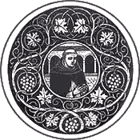
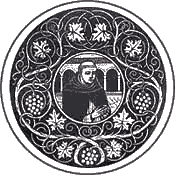

|  |
|---|
Textum Leoninum Romae 1882 editum
et automato translatum a Roberto Busa SJ in taenias magneticas
denuo recognovit Enrique Alarcón atque instruxit


|  |
|---|


[90893] Inserta super Meteora, lib. 2 cap. 16 n. 1 Postquam philosophus determinavit de his quae generantur ex exhalatione sicca circa terram et in terra, sicut de ventis et terraemotu, hic determinat de his quae generantur ex eadem in nube. Et circa hoc duo facit: primo praemittit intentionem suam, et dicit quod determinato de vento et terraemotu restat consequenter dicendum de coruscatione et tonitruo, et de typhone, idest de vento circulari expulso ex nube, et de incensionibus et fulminibus, et simul de omnibus, quia omnium est idem principium, scilicet exhalatio sicca, et omnia etiam sunt substantialiter exhalatio, quae differt secundum motus et passiones diversas.
[90894] Inserta super Meteora, lib. 2 cap. 16 n. 2 Deinde cum dicit: exhalatione enim etc., prosequitur intentum suum. Et circa hoc duo facit: primo praemittit quaedam necessaria ad propositum; secundo determinat de coruscatione et tonitruo secundum opinionem propriam, ibi: segregata quidem igitur et cetera. Circa primum praemittit tria. Primum est, quod sicut saepe dictum est prius, cum aqua et terra calefactae fuerint virtute solis, elevatur duplex exhalatio, una quidem humida, quae est principium pluviae, nivis et grandinis, et similium, alia autem sicca, quae est principium propositorum sicut videbitur, et etiam quorundam prius determinatorum. Et ambae illae exhalationes simul elevantur, quia nec humida nec sicca sola sine alia ascendit, sicut supra declaratum est. Secundum est, quod aggregatum ex istis duabus exhalationibus si sit humidum a praedominio, tunc propter frigiditatem convertitur in nubem, sicut dictum est in praecedentibus. Tertium est, quod nubes est densior in parte superiori quam in inferiori; et huius ratio est, quia necesse est nubem esse frigidiorem, et ex consequenti densiorem, in ea parte ubi deficit caliditas disgregans nubem; in parte autem superiori magis deficit caliditas, quia pars superior mediae regionis magis distat a puncto reflexionis: igitur ibi nubes est spissior. Sed in parte inferiori nubes est rarior, quia est minus frigida, et propterea, quia est minus densa, fulmina, Ecnephiae et omnia huiusmodi quae fiunt ex sicca exhalatione, propulsa a frigido moventur inferius, quamvis exhalatio sicca sit nata moveri sursum propter naturam caliditatis. Sicut in simili accidit, quia nuclei et parvi lapilli, dum comprimuntur inter digitos ex una parte, exeunt ex alia quae est minus compressa et densa.
[90895] Inserta super Meteora, lib. 2 cap. 16 n. 3 Deinde cum dicit: segregata quidem igitur etc., inquirit causas et principia aliquorum propositorum, scilicet tonitrui et coruscationis, quae sunt nobis magis manifesta; sed in principio tertii libri reddit causam aliorum minus manifestorum. Circa hoc autem tria facit: primo ostendit causam et modum generationis tonitrui; secundo manifestat causam coruscationis, ibi: spiritus autem extrusus etc.; tertio comparat illa duo simul, ibi: fit autem post percussuram et cetera. Dicit ergo primo quod exhalatio calida et sicca, elevata cum vapore humido iuxta primum suppositum, quantum ad partes subtiles dispergitur in aere supra locum frigidum per virtutem calidi, sed alia pars quae est grossior, quae propter grossitiem non elevatur in altum, includitur in partibus aeris frigidi coagulantis nubem, et in nube, segregata tamen a frigiditate partium nubis. Et illa exhalatio sic in nube inclusa, propter frigiditatem nubis exitum petit, et movetur huc et illuc, et facit magnam percussionem frangendo latera nubis. Et ex tali percussione et fractione causatur sonus, qui vocatur tonitruum. Et hoc declarat per simile: quia fumus existens intra lignum viride, aliquando resolvitur et subtiliatur a calido ignis, et sic subtiliatum quaerit maiorem locum et petit exitum, et sic percutiendo lignum vel corticem per violentiam, causat diversum sonum secundum diversam dispositionem materiae et exhalationis moventis; de quo sono dicunt vulgares, fabulas et prodigia sectantes, quod est risus Vulcani, quem dicebant esse Deum ignis: alii autem dicunt quod est risus Vestae, quae secundum eos est dea ignis; aliquando etiam, cum scilicet sonus est magnus et subitus, dicunt quod est comminatio utriusque ad circumstantes. Huic etiam simile apparet in castanea non scissa, et posita ad ignem: cum enim exhalatio per calorem subtiliata exitum quaerit, tunc frangit castaneam cum magno sono. Et eodem modo exhalatio subtiliata quaerens exitum ex nube, et percutiens cum violentia latera nubis habentia spissitudinem, et frangens ea, facit sonum quem vocamus tonitruum. Causa autem diversitatis sonorum est ex diversitate percussionum et ex diversitate et irregularitate partium nubis, quarum quaedam sunt frigidiores et spissiores, propter quod fortius repercutiuntur et sonant, aliae vero sunt minus spissae, et ex hoc remissius sonant. Tonitruum igitur est sonus factus propter causam dictam, scilicet propter collisionem violentam exhalationis siccae ad latera nubis a frigido propellente.
[90896] Inserta super Meteora, lib. 2 cap. 16 n. 4 Deinde cum dicit: spiritus autem extrusus etc., ostendit causam coruscationis. Et dicit quod eadem exhalatio sicca quae ex collisione sua causat tonitruum, extrusa et propulsata inferius secundum multas partes, ignitur debiliter in partibus subtilioribus et coloratur: sicut etiam apparet in corpore ignibili violenter ac fortiter moto, quod propter motum ignitur. Et hoc dicimus coruscationem extrusam a nube, et coloratam sive ignitam a calido igniente.
[90897] Inserta super Meteora, lib. 2 cap. 16 n. 5 Deinde cum dicit: fit autem post percussuram etc., comparat ista duo quantum ad tempus apparitionis et generationis. Et dicit quod coruscatio secundum naturam posterius generatur quam tonitruum: quia tonitruum causatur ex violenta percussione ad latera nubis, coruscatio autem est ignitio exhalationis extrusae a nube: extrusio autem et ignitio sunt posteriores percussura. Sed quod coruscatio prius videatur quam audiatur tonitruum ideo est, quia visus in apprehendendo anticipat auditum: quia auditus indiget tempore ut sonus cum motu locali veniat ad ipsum, sed perfectio visus a visibili non est in tempore, sed in indivisibili. Et ex hoc sensus visus perfectior est auditu, ut patet in I Metaphys., quia citius et immaterialius immutatur ab obiecto. Et hoc manifestat Aristoteles in motu triremium, idest navium quae habent tres ordines remorum: quia quando remigantes elevant remos a prima percussione, prius videtur elevatio remorum quam audiatur sonus ex percussione praecedenti. Patet etiam quod in ripa Sequanae, ab existentibus de longe prius videtur elevatio percussorii lotri, cum purgant pannos, quam audiatur sonus. Et qui intuentur de longe lapidicidas, vel incidentes ligna, prius vident elevationem securis vel mallei, immo prius vident secundam percussuram, quam audiant sonum primae. Sic etiam licet tonitruum et percussura prius generetur quam coruscatio, tamen prius apparet coruscatio, quia visus praevenit auditum.
[90898] Inserta super Meteora, lib. 2 cap. 17 n. 1 Postquam philosophus determinavit de coruscatione et tonitruo secundum opinionem propriam, hic ostendit opiniones aliorum suae opinioni contrarias, et improbat eas. Circa hoc autem duo facit, secundum quod duae sunt opiniones quas ponit. Primo ergo dicit quod quidam, scilicet Empedocles et Anaxagoras, ponunt in nubibus esse aliquem ignem, qui sit causa coruscationis et tonitrui. Sed illum ignem dicebat Empedocles esse interceptum a radiis solaribus descendentibus deorsum, quos existimabat esse corpora; sed Anaxagoras dixit illum ignem esse aliquam partem aetheris, idest ignis, extrusam a superioribus: quia opinabatur superiora esse de natura ignis. Et utrique dixerunt micationem, idest illustrationem, ipsius ignis esse coruscationem; sed sonum et sixim, idest stridorem illius ignis extincti, sicut apparet in titione extincto in aqua, vocant tonitruum. Quantum autem ad comparationem eorum, dicunt quod ambo generantur secundum illum ordinem quo apparent. Sed opinio utriusque videtur irrationabilis; magis tamen irrationabilis est opinio Anaxagorae, qui dixit ignem esse interceptum per detractionem ab aethere superiori, propter duas rationes. Prima est, quia de natura ignis est ascendere et non descendere, ideo irrationabile est dicere illum ignem descendere a sua sphaera: aut saltem debebat reddere causam quare descendat, cum natus sit ascendere. Secunda ratio est, quia si ignis descendit per impossibile, non est maior ratio quare descendat uno tempore quam alio, et sic non magis descenderet tempore nubis quam serenitate existente. Similiter etiam non est probabilis opinio Empedoclis propter duas rationes. Prima, quia secundum opinionem Empedoclis eodem modo deberet fieri tonitruum in qualibet parte nubis, vel semper oporteret reponere in nube aliquod determinatum per se existens in actu, puta ignem in actu, qui sit causa illorum, et a quo separentur. Sed hoc multum differt a veritate: quia oporteret idem dicere de nive, aqua et grandine et similibus, cum ista etiam generentur in superioribus, sicut tonitruum et coruscatio; et sic, si omnia ista essent prius in actu in superioribus, non generarentur ibi, sed quasi in quadam apotheca conservarentur, et tempore quo descendunt segregarentur ab aliis: quod est derisibile. Secunda ratio est, quia si nubes inspissata interciperet ignem, eadem ratione aqua calefacta a sole vel ab igne, quando postea infrigidatur pateretur idem, interciperet ignem, et haberet eosdem effectus: quia ubi est una causa, ibi est unus et idem effectus; quod tamen non apparet. Quamvis autem verum sit, quod spiritus, idest calida exhalatio, facta ab igne in aqua, faciat aliquem fervorem, idest sonum consequentem ebullitionem, non tamen facit sixim, idest stridorem causatum ab extinctione ignis. Illi autem non dicunt quod ille ignis faciat fervorem vel ebullitionem, sed sixim, idest stridorem. Est autem differentia inter ebullitionem et sixim, quia ebullitio causatur in frigido humido a calido evaporante et resolvente spiritum, sed sixis causatur a frigido calidum extinguente, vel est sonus consequens ipsum; quamvis et sixis videatur esse quaedam parva ebullitio: quia in qua parte inciderit ignis qui extinguitur, illam partem parvo tempore ebullire facit, et causat sonum. Est autem hoc quod dicitur de extinctione ignis in nube, manifeste contra experientiam sensus. Si enim ille ignis extingueretur in nube, et ex hoc causaret tonitruum, coruscatio non appareret nobis tam manifeste ignita, sed extincta: sicut titio extinctus in aqua et extractus non videtur incensus.
[90899] Inserta super Meteora, lib. 2 cap. 17 n. 2 Secundo ibi: sunt autem quidam etc., ponit secundam opinionem, et reprobat eam. Dicit ergo quod quidam fuerunt, qui dixerunt coruscationem non esse aliquod reale, sed phantasiam et apparentiam quandam; sicut dixit Clidemus, qui probabat hoc per simile de illo, qui de nocte percutit supra mare: tunc enim apparet in mari ex aqua elevata quidam fulgor sicut in igne. Et ita similiter etiam dicebant, quod in nube velociter mota a vento vel aliquo huiusmodi, apparet quidam fulgor, quem dixerunt esse coruscationem; ex percussione autem nubis dixerunt causari tonitruum. Hanc autem opinionem reprobat philosophus, et dicit quod antiqui dixerunt hoc, quia nondum erant bene assueti scientiae de refractionibus radiorum, quae videtur esse causa immutationis apparentis in aqua percussa. Cum enim percutitur aqua et aliqualiter elevatur aliqua pars eius, visus ab ipsa refrangitur ad aliquod corpus fulgidum. In puncto autem reflexionis apparet color, mixtus ex colore corporis fulgentis et aquae a qua fit refractio: et ideo magis apparet de nocte quam de die, quia lumen solis ratione magnitudinis obumbrat illam apparitionem. Sed ista causa non potest esse in apparitione coruscationis. Deinde recolligit ea quae dicta sunt de coruscatione et tonitruo, tam secundum opinionem aliorum quam propriam: et omnia sunt clara in littera. Deinde addit quod omnia ista, scilicet ventus, terraemotus, tonitruum et coruscatio, sunt idem secundum substantiam, quia omnia sunt exhalatio sicca: quae quidem lateraliter mota et fluens circa terram, est ventus, sed propulsa infra terram et ibi angustiam passa, est terraemotus, in nubibus autem subtiliata, et propulsa a frigido quando nubes congregantur in aquam, facit tonitruum, coruscationem, et cetera quae sunt eiusdem generis. Sicut enim omnia quae generantur ex vapore humido per coagulationem a frigido, sunt idem secundum speciem, differentia secundum magis et minus et secundum diversas passiones vel diversos modos patiendi, sic etiam omnia quae generantur ex sicca exhalatione a calido inflammante vel frigido propellente, sunt idem secundum speciem, sed differunt secundum quod diversimode patiuntur a calido secundum plus et minus, et secundum diversam repulsionem a frigido. Considerandum tamen est, quod terraemotus, tonitruum, coruscatio et alia huiusmodi, dupliciter considerari possunt. Primo formaliter, scilicet inquantum terraemotus est formaliter quidam motus, tonitruum est sonus factus ab exhalatione, unde et nomen sumpsit, coruscatio vero est illuminatio facta ab exhalatione incensa, etc.: et sic manifestum est quod sunt diversarum specierum. Alio modo considerantur fundamentaliter, quantum scilicet ad fundamentum essentiale ex quo talia immediate generantur: et hoc modo sunt idem secundum speciem, quia omnia immediate fiunt ex exhalatione sicca, licet diversimode et secundum diversos modos generandi, sicut superius dictum est.
[90900] Inserta super Meteora, lib. 3 cap. 1 n. 1 Postquam philosophus determinavit de tonitruo et coruscatione in fine praecedentis libri, in principio huius tertii intendit consequenter determinare de aliis, quae generantur ex eadem exhalatione sicca extrusa ex nubibus, puta de Ecnephia, typhone et huiusmodi. Et dividitur in partes duas. In prima praemittit intentionem suam, et dicit, quod postquam determinatum est de tonitruo et coruscatione, quae sunt principales passiones in aere generatae ex materia ventorum, dicendum est consequenter de residuis effectibus sive passionibus, quae sunt minus principales, scilicet de Ecnephia, typhone, incensione et fulmine, secundum modum prius inductum, scilicet accipiendo pro principio quod duplex sit exhalatio ex terra, una humida et alia sicca, et ostendendo quomodo et unde sit in ipsis principium motus et generationis.
[90901] Inserta super Meteora, lib. 3 cap. 1 n. 2 Secundo ibi: spiritus enim hic etc., prosequitur intentum. Et dividitur in quatuor partes, secundum quod quatuor sunt passiones de quibus determinat: primo enim determinat de Ecnephia; secundo de typhone, ibi: quando autem segregatus etc.; tertio de incensione, ibi: cum autem detractus igniatur etc.; quarto determinat de fulmine, ibi: si autem in ipsa nube et cetera. Circa primum duo facit: primo ostendit quid sit principium generationis Ecnephiae; secundo ostendit causam continuitatis et magnitudinis eius, ibi: quando quidem igitur et cetera. Dicit ergo primo quod spiritus iste qui exhalatio sicca vocatur, habens partes subtiliores, fluens ex ipsa nube per interpolationem, et dispersus in multa loca, est principium tonitrui et coruscationis, sicut prius dictum est. Sed si eadem exhalatio spissior fuerit et minus subtilis, et segregetur ex nube multa simul absque interpolatione, et feratur deorsum velociter, tunc fit Ecnephias, qui est spiritus fluens ex nube secundum rectum deorsum velociter, propter velocem segregationem quae fit a magnitudine frigidi. Propter quod Ecnephias est ventus violentus: quia velocitas segregationis facit motum velocem, velox autem motus non est sine violentia; segregatur autem celeriter propter fortitudinem frigidi segregantis.
[90902] Inserta super Meteora, lib. 3 cap. 1 n. 3 Deinde cum dicit: quando quidem igitur etc., ostendit causam multitudinis et continuitatis Ecnephiae. Et dicit quod, quando exhalatio sicca, grossa et compacta, segregatur ex nube et est multa, ita quod longo tempore una pars sequatur aliam, tunc spiritus Ecnephiae fit magnus et continuus, propter multitudinem materiae continuae exeuntis: sicut et contraria exhalatio, scilicet humida, cum movetur, et incipiunt segregari partes et cadere pluvia, si sit multa, una pars continue cadit post aliam, et fiunt magni et continui imbres. Quod autem rationabilis sit similitudo inter istas duas contrarias exhalationes, declarat per hoc quod utrumque horum est in potentia in eadem nube; quia unumquodque est in potentia in materia ex qua fit: Ecnephias autem fit ex exhalatione sicca inclusa in nube, et pluvia generatur ex vapore ipsius nubis. Et similiter utrumque fit ab eodem principio activo, scilicet a vehementi frigiditate: eadem enim frigiditas loci et nubis concernit vaporem in aquam, et expellit violenter contrariam exhalationem calidam ex nube. Propter quod etiam multoties, cum tale principium fuerit applicatum nubi in qua utrumque est in potentia, generatur utrumque simul; et si in nube fuerit maior multitudo exhalationis siccae, fit maior ventus quam pluvia; si vero e converso plus fuerit de vapore humido, generatur maior pluvia: simul tamen fiunt Ecnephiae.
[90903] Inserta super Meteora, lib. 3 cap. 1 n. 4 Deinde cum dicit: quando autem segregatus etc., determinat de typhone. Et circa hoc duo facit: primo determinat de ipso typhone; secundo de effectu eius, ibi: fit quidem igitur et cetera. Prima iterum in tres: primo enim determinat de principio generationis eius; secundo de motu ipsius, ibi: deorsum autem fertur etc.; tertio de tempore et loco generationis eius, ibi: borealibus autem non et cetera. Circa primum duo facit: primo facit quod dictum est; secundo comparat typhonem ad Ecnephiam quantum ad generationem eorum, ibi: veruntamen quia sicut et cetera. Dicit ergo primo quod, quando spiritus inclusus in nube segregatur et expellitur a frigiditate loci et superioris partis nubis ex amplo ventre nubis per angustum exitum et parvam scissuram, et repercutitur ad aliquod corpus solidum, tunc fit quidam ventus in portis et viis flans per modum turbinis, qui dicitur typho. Et hoc fit ex eo, quod prima pars repercutitur ad terram, sive ad aliud corpus solidum, vel aliqua alia ratione impeditur anterius procedere, et revolvitur in partem subsequentem, et pars sequens continue impellit priorem. Ideo cum pars prior non possit procedere ante, quia impeditur, neque possit retroverti, quia impellitur a sequenti, involvitur in sequenti, et reflectit se ad latus ubi non invenit prohibens: et sic causat motum quasi circularem. Motus enim qui est una latio, idest unus motus localis, si non est motus rectus, scilicet sursum aut deorsum, sicut iste, oportet quod sit circularis. Sicut autem movetur prima pars, ita similiter moventur omnes subsequentes: et propter hoc fit ista revolutio super terram, quae habet principium in nubibus.
[90904] Inserta super Meteora, lib. 3 cap. 1 n. 5 Deinde cum dicit: veruntamen quia sicut etc., comparat typhonem ad Ecnephiam. Et dicit quod similiter generantur, scilicet per continuam segregationem nubis a spiritu, sive ab exhalatione sicca; quod propterea necessarium est, quia typho velocius movetur circulariter, quam nubes nata sit ex seipsa moveri, et ex hoc nubes continue separatur ab exhalatione, ita tamen quod semper aliqua pars nubis sequitur exhalationem. Et sic etiam generatur Ecnephias; sed tamen ista duo differunt in motu: quia Ecnephias movetur motu recto, typho autem movetur secundum circulum, propter causam iam dictam.
[90905] Inserta super Meteora, lib. 3 cap. 1 n. 6 Deinde cum dicit: deorsum autem fertur etc., determinat de motu eius. Et dicit quod typho licet sit generatus superius, tamen movetur deorsum sicut Ecnephias, quia fertur in contrarium eius a quo expellitur: expellitur autem a superiori parte nubis, quae est magis frigida, propter hoc quod ibi deficit caliditas causata a reflexione radiorum solarium, sicut supra dictum est: et ex consequenti movetur inferius. Et vocatur ille spiritus typho, quando movetur deorsum circulariter, et non est coloratus, nec a calido ignitus, sicut multae aliae impressiones; quod accidit ex hoc, quia ille spiritus est indigestus, et non est totaliter separatus a nube, sed semper trahit secum aliquam partem nubis, et eius humiditas impedit eius colorationem vel ignitionem.
[90906] Inserta super Meteora, lib. 3 cap. 1 n. 7 Deinde cum dicit: borealibus autem etc., determinat de loco et tempore generationis typhonis. Et dicit quod typho non generatur in temporibus et locis borealibus, idest vehementer frigidis, nec etiam in locis vel temporibus nivosis et congelatis, sicut nec Ecnephias. Et huius ratio est, quia ista duo in hoc conveniunt, quod utrumque est spiritus, idest exhalatio sicca. Cum autem obtinet excellens frigus, idest quando est tempus vel locus excellentis frigoris, tunc exhalatio calida statim in sui principio extinguitur a magno frigore. Et propter eandem causam, in eisdem locis raro aut nunquam fit tonitruum et terraemotus.
[90907] Inserta super Meteora, lib. 3 cap. 1 n. 8 Deinde cum dicit: fit quidem igitur etc., ostendit effectum mirabilem huius venti. Et dicit, quod sicut descendendo semper ducit secum aliquam partem nubis, ita quando reflectitur a terra involvit secum omnia super quae cadit, eradicando scilicet arbores, quandoque evertendo domos, elevando saxa. Et cum inciderit ad mare, elevat secum et involvit magnitudinem aquae maris: quandoque autem elevat naves, propter quod multum timetur a nautis; quia super quaecumque incidit, illa motu circulari circumeundo et vim faciendo evertit, et revertendo elevat ea sursum.
[90908] Inserta super Meteora, lib. 3 cap. 2 n. 1 Deinde cum dicit: cum autem detractus igniatur etc., determinat de incensione. Et dicit, quod cum spiritus subtilior quam ille ex quo generatur typho, segregatus fuerit ex nube, et ignitus propter suam subtilitatem et motum violentum calidi, tunc fit passio quae dicitur incensio. Et haec exhalatio sic incensa, cadendo coincendit aerem per quem cadit; sed quia illa incensio non est fortis sed debilis, videtur potius quaedam coloratio aeris ad modum albi.
[90909] Inserta super Meteora, lib. 3 cap. 2 n. 2 Deinde cum dicit: si autem in ipsa etc., determinat de fulmine. Et circa hoc tria facit: primo determinat de fulmine; secundo de effectu eius, ibi: hic quidem enim etc.; tertio concludit quoddam corollarium ex dictis, ibi: quare et quod spiritus et cetera. De primo ergo dicit, quod si spiritus subtilis secundum substantiam et multus in quantitate, extrudatur a frigido quod est in ipsa nube, generatur fulmen, quod penetrat et frequenter adurit illud cui incidit. Quod quidem est duplex: nam si spiritus fuerit magis subtilis quam calidus, fit fulmen vehementer penetrans, sed non adurit; si autem exhalatio fuerit minus subtilis et magis calida, fit fulmen quod tardius penetrat, et maiorem moram faciendo adurit. Primum poetae vocant argeta, secundum vero psoloenta.
[90910] Inserta super Meteora, lib. 3 cap. 2 n. 3 Deinde cum dicit: hic quidem enim etc., determinat de efficacia sive effectu fulminis. Et dicit quod primum fulmen, quod scilicet est magis subtile quam calidum, propter eius subtilitatem velocissime movetur, et penetrat illa super quae cadit antequam ipsa igniat, et est adeo subtile, quod penetrat intra res per parvos poros et insensibiles. Ex quo etiam ratio reddi potest multorum effectuum mirabilium, qui efficiuntur ab hoc fulmine. Aliquando enim visum est, quod ictu fulminis liquefacta est pecunia in marsupio, illaeso marsupio: et hoc propter eius magnam subtilitatem, propter quam per poros aut parva foramina, aut per os marsupii penetravit ad pecuniam, illaeso marsupio. Et simili ratione inventi sunt homines mortui a fulmine, vestimentis exterioribus illaesis; puer etiam in utero matris exterminatus est, matre remanente intacta. Dicit etiam Seneca, quod vinum quandoque sine combustione mansit, et remansit in dolio, adustis asseribus et ad terram proiectis. Et huius ratio esse potest, quia virtus penetrativa fulminis per quam confregit asseres et latera dolii, multo maior est quam virtus vini, per quam natum est effundi deorsum: ideo in minori tempore frangit latera vasis, quam vinum natum sit moveri deorsum; quapropter confracto vase vinum stare potuit per modicum tempus, maxime si sit vinum viscosum et grossum, et vas sit porosum, quia tunc facilius fulmen pertransit vas quod est porosum, quam vas in quo non inveniuntur pori. Sua etiam caliditate fulmen facit vinum grossum et viscosum, maxime in superficie facere potest quasi crustam, ut patet de sapa, propter quod vinum tardius effunditur. Sed aliud fulmen, quia est grossius, propter nimiam eius tarditatem non ita penetrat: et quia est calidius quam subtile, prius adurit et colorat quam penetret, ita quod adustio praevenit motum localem eius in penetrando. Hoc autem fulmen, quia propter suam grossitiem non multum penetrat, ideo minus laedit dura et resistentia quam rara. Unde aliquando inventum est, quod excussit aliquando vestem, aliquando pilos et barbam hominis, homine in nullo penitus laeso. Sed primum fulmen ea quae parum resistunt non colorat aut adurit, sed cito penetrat, sicut prius dictum est. Ea vero quae resistunt, ut sunt corpora dura, magis patiuntur ab hoc fulmine, quia ea adurit propter duas rationes; primo quia ea quae sustinent fixionem fulminis maiori tempore, magis patiuntur ab eo: sed fulmen agit in resistentia maiori tempore; secundo quia quando resistitur spiritui, tunc spiritus fortificatur et multiplicatur et fortius agit. Et hoc etiam manifestat duobus exemplis. Primo quia visum est quandoque, quod clypeus a parte interiori erat coopertus aere in aliqua parte, vel etiam a parte exteriori, et iste clypeus ictus fulmine et lignum nihil passum fuit, quia propter raritatem cito ipsum penetravit fulmen, sed aes, quod magis resistebat, liquefactum fuit. Temporibus etiam nostris miles, qui percussus est a fulmine, habebat scutum ligneum suspensum humeris, et sub scuto arma ferrea: fulmen confregit et partim liquefecit ferrum sub scuto, lignum autem scuti in nullo laesum inventum est. Secundo dicit, quod sicut dictum est, fulmen aliquando interfecit hominem propter resistentiam, vestimenta vero propter minorem resistentiam pertransivit. Ex quo concludi potest, quod primum fulmen magis periculosum est quam secundum. Si autem verum sit quod fulmen habet alios effectus, qui proferuntur vulgo, ut puta quod magis percutiunt campanilia Ecclesiae et loca sacra quam alia loca, dicendum quod non est inconveniens, quod Daemones utantur virtute sua circa hos mirabiles effectus naturae, ut ipsi rerum mirabilium auctores videantur: sicut aliquando se immiscent nobilissimo effectui naturae, scilicet generationi et propagationi humanae. Nos tamen hic non quaerimus quid Deus permittat, sed quid natura faciat. Et de facili dicere possumus, quod magis tangit campanilia et Ecclesias, quia sunt altiores, et citius ei occurrunt. Sciendum est etiam quod Seneca tres species fulminis dicit esse; sed istae de facili reducuntur ad duas praedictas, ut patet intuenti.
[90911] Inserta super Meteora, lib. 3 cap. 2 n. 4 Deinde cum dicit: quare et quod spiritus etc., concludit corollarie ex dictis, quod fulmen non est lapis vel aliquod corpus solidum, sicut tamen multi crediderunt, sed est spiritus, idest exhalatio sicca, incensa et subtilis. Et hoc quod dicit philosophus, declarat per ea quae patent oculis; quia combusto templo in Epheso a fulmine, ibi, quia materia fulminis erat multa, videri poterat quod fulmen est spiritus: quia quando templum percussum est, flamma exhalationis incensae ferebatur hac illac ad multas partes templi, et denique cum fumo templi ferebatur sursum, incensa sicut fumus propter admixtionem humidi grossi quod exibat ex combustione templi. Sed accidit de huiusmodi exhalatione sicut de fumo, quia etiam fumus est quidam spiritus, et ardet sicut exhalatio, sicut prius dictum est. Quando igitur materia est multa quae comburitur, tunc fit multus fumus incensus, et manifeste videtur, sicut in incensione fornacis: quando autem materia est pauca, non ita videtur fumus. Sic etiam quando materia fulminis est multa, manifeste apparet quod fulmen est exhalatio incensa, sicut accidit in fulmine percutiente praedictum templum: quando vero materia est pauca, non ita videtur; quod tamen videtur in uno, iudicandum est etiam in altero. Quod autem fulmen non sit corpus solidum vel lapis, patet: quia tale corpus non potest habere effectus, qui superius dicti sunt procedere a fulmine. Non enim posset penetrare ad interiora, nisi prius ruptis exterioribus: alioquin duo corpora essent simul in eodem loco, quod naturaliter non potest fieri. Videtur etiam inconveniens esse, quod tam parvus lapis evertat turres et domos. Considerandum tamen est, quod quandoque cum fulmine antefertur lapis vel aliud huiusmodi deorsum, quod vel est generatum in nube ab exhalatione calida, digerente humidum aqueum nubis, sicut patet in decoctione laterum: qui lapis etiam quandoque antefertur tonitruo, vel a vento circulari sursum est elevatum. Sed iste lapis non est fulmen, ut dictum est, neque semper fit quando fit fulmen.
[90912] Inserta super Meteora, lib. 3 cap. 2 n. 5 Deinde cum dicit: semper enim oportet etc., reddit rationem cuiusdam accidentis circa fulmen, quare scilicet illa quae percutiuntur a fulmine, videntur moveri antequam percutiantur. Et huius ratio est sicut ipse dicit, quia aliquis spiritus, velut fumus vel aer motus ab ipso fulmine, semper praecedit et semper sequitur exhalationem incensam, quae est fulmen: qui spiritus propulsus ante fulmen suo motu movet corpora, quae patiuntur a fulmine. Et propter hanc causam animalia fulmine percussa ut in pluribus inveniuntur habere caput conversum ad fulmen, quia sentientes hunc motum qui praecedit fulmen, naturaliter convertunt caput ad illam partem, ut cognoscant quid sit, et sic percutiuntur fulmine.
[90913] Inserta super Meteora, lib. 3 cap. 2 n. 6 Deinde cum dicit: et tonitrua autem etc., comparat fulmen ad tonitruum. Et dicit, quod sicut fulmen deiicit et dividit corpora quae tangit, ita similiter tonitruum quandoque dividit corpora. Sed tamen non est imaginandum quod tonitruum dividat corpora mediante sono, sed dividit mediante spiritu, idest exhalatione segregata a nube, quae incidens alicui corpori plerumque dividit illud, sed non exurit, quia non est ita subtilis et incensa sicut fulmen. Ipsum vero fulmen dividit mediante motu exhalationis, exurit autem et colorat propter ignitionem. Deinde recapitulat ea quae dicta sunt, dicens quod de tonitruo et coruscatione et Ecnephia, iterum de typhonibus et incensione et fulminibus dictum est quid sit unumquodque eorum secundum substantiam: quia sunt exhalatio sicca. Sed differentia eorum est secundum magis et minus subtile, et secundum alia accidentia consequentia.
[90914] Inserta super Meteora, lib. 3 cap. 3 n. 1 Postquam philosophus determinavit de his quae generantur ex exhalatione elevata a terra per motum et alterationem, consequenter intendit determinare de his quae fiunt per refractionem luminis ab exhalatione humida constante superius. Et circa hoc duo facit. Primo ponit intentionem suam, et dicit quod cum superius determinatum sit de his quae fiunt ex exhalatione humida per motum et alterationem, consequenter dicendum est de his quae fiunt per refractionem luminis ab eodem vapore humido, consistente in nube vel caligine, puta de halo, iride et virgis, et pareliis. Et circa hoc considerandum est quid sit unumquodque eorum, et propter quam causam fiunt, quia unumquodque eorum fit propter eandem causam.
[90915] Inserta super Meteora, lib. 3 cap. 3 n. 2 Secundo ibi: ipsius quidem igitur etc., prosequitur intentum. Et circa hoc duo facit: primo determinat in generali de accidentibus et causis halo et iridis, et quorundam aliorum quae fiunt per refractionem luminis; secundo determinat de causa et principio illorum magis in speciali, ibi: quod quidem igitur visus et cetera. Prima iterum dividitur in duas partes: primo enumerat accidentia circa halo et iridem; secundo determinat de causis dictarum apparentiarum, ibi: causa autem horum et cetera. Circa primum duo facit: primo determinat de accidentibus halo; secundo de accidentibus iridis, ibi: iridis autem nunquam et cetera. Primo ergo dicit quod halo saepius apparet secundum circulum perfectum: dicit autem saepe, quia quandoque propter interruptionem caliginis a qua fit refractio, circulus interrumpitur. Fit etiam halo circa solem et lunam, et circa astra multum luminis habentia. Adhuc non minus apparet de nocte circa lunam et stellas, quam de die circa solem: immo magis apparet de nocte quam de die, quia in die lumen solis obscurat apparentiam eius. Et indifferenter fit in meridie et in sero, sed in mane et circa occasum minus fit. Vocat autem hic philosophus occasum, non illud tempus vespertinum quod communiter sero dicitur: alias sibi contradiceret, dicendo quod halo fit in sero et non fit circa occasum; sed vocat occasum declinationem solis a meridie, quae est ante illud tempus vespertinum et post meridiem. Et non fit halo circa occasum, quia tunc propter moram solis calor est ferventior, et dissipat eius apparentiam.
[90916] Inserta super Meteora, lib. 3 cap. 3 n. 3 Deinde cum dicit: iridis autem nunquam etc., ostendit accidentia circa alias apparentias. Et circa hoc duo facit: primo ostendit accidentia circa iridem; secundo accidentia circa virgas et parelios, ibi: parelii autem et cetera. Circa primum tria facit: primo ostendit accidentia iridis quantum ad figurationem; secundo ostendit accidentia quantum ad tempus apparitionis, ibi: et post autumnale etc.; tertio quantum ad colores et numerum, ibi: neque duabus plures et cetera. Dicit ergo primo quod iris nunquam apparet secundum circulum perfectum, neque apparet in maiori portione circuli decisi per diametrum, sed sole oriente aut occidente apparet sub figura semicirculi completa, quae est maior portio circuli sub qua possit apparere; ille tamen circulus est minor quam circulus quem facit in meridie. Cum autem sol elevatur supra horizontem, apparet minor pars semicirculi; circulus tamen quem tunc facit, est maior quam ille quem faciebat oriente vel occidente sole.
[90917] Inserta super Meteora, lib. 3 cap. 3 n. 4 Deinde cum dicit: et post autumnale etc., enumerat accidentia iridis quantum ad tempus apparitionis. Et dicit quod post aequinoctium autumnale existentibus diebus brevioribus, iris potest apparere in qualibet hora diei, quia tunc sol non multum elevatur super horizontem: sed in aestate, sole existente circa tropicum, non fit in meridie. Et hoc maxime in regionibus, in quibus sol multum accedit ad Zenith capitum: quia tunc basis pyramidis sub qua videtur iris, aut directe iacet supra terram, aut modica portio eius est per eam. Et tunc ad videndam apparentiam iridis, oporteret quod homo iaceret quasi resupinus in terra, et oculus non esset elevatus.
[90918] Inserta super Meteora, lib. 3 cap. 3 n. 5 Deinde cum dicit: neque duabus plures etc., ostendit quot sint irides secundum numerum, et accidentia eius quantum ad colores. Et dicit de primo quod aliquando videntur duae irides (sed plures duabus non apparent nisi raro), quarum altera continet alteram. Et utraque earum habet tres colores principales, eosdem quidem secundum speciem et aequales secundum numerum, sed eius quae est extra et continet aliam, colores sunt obscuriores et minus apparentes quam illius quae est intra et continetur. Et isti colores secundum situm sunt positi modo contrario; quia iris interior et quae continetur, habet in maiori peripheria, idest circumferentia, colorem puniceum, in media autem viridem, et in minori halurgum, idest subalbum: sed maior exterior habet in minori circulo puniceum, et alios proportionaliter, scilicet in medio viridem, et in supremo halurgum. Et hi colores, quos dicimus esse in iride, sunt tales quod eos non possunt facere pictores: ipsi enim faciunt colores per admixtionem aliorum colorum, sed isti tres colores quos habet iris, non fiunt per aliquam commixtionem.
[90919] Inserta super Meteora, lib. 3 cap. 3 n. 6 Deinde cum dicit: parelii autem etc. determinat de accidentibus circa virgas et parelios. Et dicit quod parelii et virgae apparent tantum circa solem, et ideo non fiunt nocte, sole existente sub nostro hemisphaerio. Et quando contingit eos apparere, tunc solum apparent ex latere solis, scilicet ex parte Septentrionis vel meridiei: et non apparent supra solem, quia impressiones existentes supra solem non essent visibiles. Neque apparent directe subtus solem versus terram, neque ex opposito, puta in oriente unde movetur sol, vel in occidente ad quem tendit. Et iterum apparent parelii sole ascendente ab oriente, vel descendente ad occidentem: sed raro apparent ipso existente in meridie, quia tunc sol propter nimium calorem dissolvit materiam. Accidit tamen aliquando in Bosphoro, quod est mare dividens Asiam ab Europa, quod ibi apparuerunt duo parelii ex duobus lateribus solis, ab ortu eius usque ad occasum per totam diem. Accidentia igitur manifesta circa unumquodque istorum sunt haec quae determinata sunt.
[90920] Inserta super Meteora, lib. 3 cap. 3 n. 7 Deinde cum dicit: causa autem horum etc., determinat de causis dictarum impressionum. Et dicit quod causa et principium omnium praedictorum est una et eadem secundum substantiam, quia omnia secundum substantiam sunt refractio. Quod intelligendum est non formaliter, sed causaliter: non enim istae impressiones sunt formaliter refractio, quia iris formaliter est quaedam figura etc., sed sunt refractio causaliter, quia omnia causantur ex refractione aliqua; sed differenter fiunt secundum diversos modos refractionis sive reflexionis ad solem vel ad aliquod aliud astrorum fulgidorum. Sed qualis fit refractio, et qualiter fiat, et ad quid, et a quo, et quae sit causa eorum quae accidunt circa ipsam refractionem, consequenter ostendit philosophus, licet textus nostri communiter hoc non habeant. Dicit ergo quod radii visuales refranguntur ab omnibus corporibus quae habent aliquam virtutem opaci, quod impedit illuminationem secundum directum, et ab habentibus planam et lenem superficiem, sicut est aqua quae est grossior, et aer qui est subtilior. Et illud quod refrangitur secundum veritatem, est lumen generatum a corpore lucido secundum directum, sed colores qui movent perspicuum quando est illuminatum, colorant ipsum.
[90921] Inserta super Meteora, lib. 3 cap. 3 n. 8 Deinde cum dicit: et per diem quidem etc., regreditur ad numerandum quaedam alia accidentia circa iridem. Ex quo patet quod haec pars continuari debet ad illam partem in qua enumerat alia accidentia iridis: sed est huc transposita propter aliquod accidens. Dicit igitur quod iris de die apparet, propter refractionem luminis solis a nube rorida sibi opposita. Sed de nocte dixerunt quidam antiquorum ipsam non apparere per refractionem luminis: quia in nocte raro fit, propter quod latebat ipsos. Sunt autem tres causae propter quas raro apparet de nocte. Prima est, quia colores obscurantur de nocte propter obscuritatem noctis. Secunda causa est, quia iris non potest apparere neque fieri de nocte, nisi solum in uno die naturali mensis. Tertia est, quia iris non fit de nocte nisi luna existente plena in oriente, et in occidente nube opposita existente densa. Et illa raro simul contingunt. Signum autem rarae apparitionis eius dicit esse, quia in quinquaginta annis non percepit eam nisi bis fieri.
[90922] Inserta super Meteora, lib. 3 cap. 3 n. 9 Deinde cum dicit: quod quidem igitur etc., postquam philosophus determinavit de causis praedictorum in generali, determinat de eis magis in speciali. Et dividitur in partes duas: in prima praemittit quasdam suppositiones necessarias ad propositum; secundo declarat intentum, ibi: primo autem de figura et cetera. Circa primum ergo dicit, quod oportet supponere aliqua. Et primo, quod radii visuales procedentes ab oculo, refranguntur ab aliquo prohibente eorum directam alterationem propter grossitiem, sicut ab aqua, et aere ingrossato propter humiditatem et frigiditatem, et universaliter ab omnibus corporibus grossis habentibus planam et lenem superficiem, propter quam uniformiter recipiuntur et refranguntur ad aliquod corpus lucidum. Secundo supponere oportet, quod corpora specularia a quibus fit refractio, in quibus apparet species visibilis, sunt duplicia: quaedam sunt in quibus apparet figura et color obiecti determinate, quaedam autem sunt in quibus apparent colores, non autem figura determinata, sicut sunt illa quae sunt valde parva, et non possunt dividi in partes quae comprehendantur a visu: quare relinquitur quod in talibus solus color apparebit. Tertio supponendum est, quod in corporibus specularibus aliquando apparet color clarus, quando scilicet speculum est purum et mundum, non habens aliquem colorem extraneum, et medium similiter est purum, et visus est fortis, idest bene dispositus. Aliquando autem color corporis clari apparet obscurus propter defectum alicuius istorum trium. De his autem demonstratum est in libro de sensu et sensato, vel in libro de sensu, idest in perspectiva communi: nunc autem istis suppositis dicendum est de aliis. Intelligendum est autem circa primam suppositionem, quod visio non fit extramittendo, sed intus accipiendo, idest radii visuales per quos videntur res ab extra, non procedunt ab oculo ad obiectum sed ab obiecto ad oculum. Et ideo radii visuales refranguntur a speculo ad visum, non autem ad solem vel aliud obiectum, quia non refranguntur ad id a quo procedunt. Sed Aristoteles loquitur hic secundum communem opinionem perspectivorum sui temporis, qui habebant contrariam opinionem dictis. Nec refert ad propositum, quodcumque istorum dicatur, quia eodem modo accidunt omnia circa halo et iridem, quocumque istorum posito. Ad maiorem autem claritatem dictorum et dicendorum notanda sunt duo. Primum est quod ad quamlibet refractionem tria concurrunt de necessitate: primum est obiectum quod imprimit similitudinem suam in speculum, puta lumen solis, et hoc habet rationem refracti; speculum quod determinat actionem obiecti et recipit similitudinem eius, quod habet rationem refrangentis; et visus, qui habet rationem eius ad quod fit refractio. Secundo notandum est, quod radius visualis est triplex: scilicet rectus, qui per medium uniforme libere procedit a corpore lucido ad visum; secundo reflexus, qui propter densitatem alicuius medii non potest ulterius transire, sed reflectitur et revertitur ad corpus luminosum a quo procedit: sicut accidit de radiis solaribus, qui reflectuntur a terra sursum versus solem, sicut visum est supra; tertio est radius refractus, qui propter occursum alicuius medii non quidem impeditur totaliter ulterius procedere, immo procedit usque ad visum, sed non recte, quia recedit a perpendiculari. Aristoteles tamen indifferenter utitur istis nominibus, cum dicit quod visus refrangitur ad aliquod corpus lucidum.
[90923] Inserta super Meteora, lib. 3 cap. 4 n. 1 Deinde cum dicit: primo autem de figura etc., praemissis suppositionibus necessariis ad declarationem tam dictorum quam dicendorum, consequenter prosequitur de halo, iride et reliquis. Et primo determinat de halo; secundo de iride, ibi: iris autem etc.; et tertio de pareliis et virgis, ibi: easdem autem dictas et cetera. Circa primum duo facit: primo assignat causam generationis et modum; secundo reddit causam cuiusdam accidentis halo, ibi: saepius autem et cetera. Prima iterum in tres: primo ostendit modum generationis halo; secundo ostendit causam figurae eius, ibi: undique autem etc.; tertio ostendit causam coloris illius, ibi: oportet autem et cetera. Quantum ad primum igitur primo praemittit intentionem suam. Et dicit quod primo dicendum est de halo et de figura eius in speciali, quare scilicet fit circularis figurae, et utrum fiat circa solem et lunam, et similiter circa alia astra, et non ex opposito vel ex latere alicuius: quia eadem est ratio de omnibus.
[90924] Inserta super Meteora, lib. 3 cap. 4 n. 2 Secundo ibi: fit quidem igitur etc., quia halo apparet ex refractione visus consistente vapore vel aere, ideo philosophus declarat, quomodo se habeat vapor huiusmodi a quo fit refractio. Et dicit quod refractio visus in apparitionibus halo fit a vapore vel aere, idest ab aere vaporoso, ingrossato a frigido in nubem tenuem parvarum et regularium partium. Et hoc manifestat per signum: quia si ille vapor in quo apparet halo, ingrossetur, tunc est signum pluviae; si autem distrahatur et disgregetur, tunc est signum venti; si vero evanescat et exterminetur, tunc est signum serenitatis. Probat autem primum: quia talis ingrossatio vaporis ostendit continuam inspissationem nubis, quam tandem necessarium est permutari in aquam; et propter hoc huiusmodi nubes continue fiunt nigriores, quoadusque finaliter dispareat halo. Secundum vero manifestatur: quia illa distractio non potest fieri nisi a vento, qui iam incipit flare. In signum cuius, quando distrahitur halo, ventus incipit manifeste apparere ex illa parte in qua incoepit illa distractio; ex quo possumus etiam concludere, quod ventus prius flabat, et distrahebat halo, sed nondum erat nobis praesens et manifestus: vel prius flabat in aliis partibus, sed nondum erat praesens illi parti in qua fit halo. Marcefacta autem sive evanescens est signum serenitatis: quia non distrahitur nisi a calido disgregante vaporem nubis, et sic aer vel vapor propter tale calidum non potest condensari in nubem, ex quo fit serenitas. Unde relinquitur, quod halo fiat in nube tenui et densata a frigido, ut dictum est.
[90925] Inserta super Meteora, lib. 3 cap. 4 n. 3 Deinde cum dicit: refrangitur autem a consistente etc., ostendit quomodo et qualiter se habente nube secundum positionem ad astrum fulgidum, fiat refractio. Et dicit quod visus refrangitur a caligine existente inter ipsum et solem vel lunam, et propter hoc non apparet ex opposito, sicut iris, quae apparet in nube opposita soli vel lunae, visu existente in medio, nec etiam apparet ex lateribus, sicut virgae et parelii. Ad cuius intelligentiam considerandum est, quod in apparitione halo inter visum et astrum mediat nubes tenuis, a qua fit refractio, ita quod astrum videtur per ipsam; propter quod etiam videtur in eadem superficie cum ipsa: quia quando aliquod corpus remotum videtur per aliquod corpus medium distans a visu, tunc obiectum videtur esse simul cum medio, quia visus propter distantiam improportionatam sibi non diiudicat remotionem unius ab altero. Et propter eandem causam corpus sphaericum a remotis visum semper apparet planae superficiei, quia visus propter improportionatam distantiam, sicut dictum est, non diiudicat distantiam, neque figuram et maximum circulum eius.
[90926] Inserta super Meteora, lib. 3 cap. 4 n. 4 Deinde cum dicit: undique autem similiter etc., ostendit quae sit figura halo. Et dicit quod nube sic se habente ut dictum est, necesse est quod talis refractio fiat secundum circulum; et ideo necesse est halo esse circulum, si nubes sit continua et regularis, vel partem circuli si nubes sit discontinua et irregularis. Quod quidem facile est probare, si supponamus secundum veritatem quod refrangatur obiectum, non visus. Nam visibile producit radios suos pyramidaliter: cuius pyramidis basis est in ipso obiecto, conus vero pyramidis terminatur ad visum si radii sint recti, vel si sint refracti conus est in puncto refractionis, licet sit magis obtusus; in fine autem pyramidis semper apparet figura similis obiecto, sicut experientia testatur. Tum etiam, quia omne agens naturaliter imprimit suam similitudinem in passum secundum esse perfectum, nisi impediatur; cum igitur astrum sit circularis figurae, eius similitudo impressa tum in caligine tum etiam in oculo, erit figurae circularis. Sed Aristoteles hic non accipit astrum in alterando refrangi, sed visum, sicut dictum est prius, non quidem secundum radium perpendicularem, sed secundum radios declinantes a perpendiculari. Assumptum vero sic probat per rationem mathematicalem. Radii qui aequaliter distant a perpendiculari, et refranguntur ad angulos aequales, facientes scilicet angulos aequales in puncto refractionis, faciunt figuram circularem; sed radii quibus videtur halo, aequaliter distant a perpendiculari, et refranguntur in aequali distantia ad perpendicularem ad angulos aequales; ergo faciunt circulum. Maior est manifesta: quia astrum aequaliter agit et illuminat partes existentes inter extremos radios refractos, quia aequaliter distant. Minorem vero probat in terminis communibus hoc modo. Sit a visus qui refrangitur, b autem sit astrum ad quod fit refractio secundum antiquos, et protrahatur linea perpendicularis ab a in b per medium caliginis refrangentis visum, in puncto c, et signentur tria puncta aeque distantia a c in peripheria, sive circumferentia, nubis, scilicet g d z, in quibus franguntur radii luminosi ad lineam perpendicularem, et concurrunt in puncto a. Tunc ibi intelliguntur tres trianguli maiores, scilicet agb, adb et azb, qui sunt aequales, ut potest practicari per propositiones mathematicas, et maxime per quartam primi Euclidis: quae dicit quod duorum triangulorum, quorum duo latera unius sunt aequalia duobus lateribus alterius, et duo anguli duobus angulis, toti trianguli erunt aequales. Ducantur igitur tres lineae perpendiculares super lineam ab ad punctum c ab illis tribus punctis g d z in peripheria nubis signatis: tunc constituuntur tres parvi trianguli, scilicet agc, adc et azc, et isti trianguli etiam sunt aequales, sicut probari potest per eandem quartam, et per octavam primi Euclidis. Sed istae tres lineae ducuntur directe ex diversis partibus in eundem punctum, et sunt plures quam duae: igitur talis punctus est centrum circuli, et linea tangens extremitates illarum linearum erit circulus, ut dicit vigesimatertia propositio tertii Euclidis. Et ista magis patebunt in sequenti figura. (Figura).
[90927] Inserta super Meteora, lib. 3 cap. 4 n. 5 Deinde cum dicit: oportet autem intelligere etc., determinat de colore halo. Et dicit quod in nube clara et subtili, quae incipit converti in aquam et dicitur nubes rorida, in qua apparet halo, sunt quaedam parvae guttulae indivisibiles secundum sensum, quae sunt parva specula, in quibus apparet tantum color corporis obiecti, non figura: ex quo in illis simul sumptis apparet color, mixtus ex lumine stellae et colore nubis a qua fit refractio. Et hoc ideo, quia nubes non est speculum purum: nam si esset speculum purum, non admixtum alteri colori, pure representaret colorem obiecti. Et quia color albus est propinquior lumini ipsius stellae, ideo in illa parte halo quae plus obtinet de lumine, scilicet in medio, apparet color albus; sed in parte remotiori, scilicet in circumferentia, apparet maior nigredo, tum propter minus lumen ibi existens, tum etiam propter maiorem albedinem alterius partis: quia opposita iuxta se posita maiora videntur. Est autem maius lumen in medio, quia radii luminosi super illam partem cadunt perpendiculariter versus terram, quo quidem modo habent causare maius lumen.
[90928] Inserta super Meteora, lib. 3 cap. 4 n. 6 Deinde cum dicit: saepius autem fit etc., ostendit causam unius accidentis circa halo, scilicet quare halo saepius apparet circa lunam quam circa solem. Et huius ratio est, quia sol propter maiorem caliditatem citius disgregat humorem consistentem in nube, quam luna quae habet minorem virtutem calefaciendi. Sed circa alia astra apparet eadem halo propter easdem causas, vel propter causas proportionales dictis; sed tamen non eodem modo significat: quia circa lunam vel solem est signum pluviae, vel venti, aut serenitatis, sed circa alia astra est signum tenuis et debilis caliginis, non habentis fecunditatem. Considerandum est autem quod halo fit etiam circa lucernas de nocte tempore hiemali, et tunc lumen lucernae habet rationem obiecti refracti, aer circumstans humidus et ingrossatus a frigore est quasi speculum, oculus vero est id ad quod fit refractio. Apparet etiam tempore magni caloris circa oculum et circa lumina, propter humiditatem existentem in oculo, maxime quando homo surgit a somno et fricat oculos: tunc enim evaporare facit humorem existentem in oculo extrinsecus. Apparet autem et videtur esse prope circa lumen: quia propter parvam distantiam lumen alterat totum medium usque ad oculum, et ideo visus totum continuum iudicat unum cum lumine. Quare autem appareat circularis figurae, cum tamen flamma sit figurae ovalis et oblongae, ad perspectivam communem pertinet.
[90929] Inserta super Meteora, lib. 3 cap. 5 n. 1 Postquam philosophus determinavit de halo in speciali, determinat nunc de iride etiam in speciali. Et circa hoc duo facit: primo praemittit intentionem suam, et dicit quod dictum est prius, quod iris est quaedam refractio, scilicet causaliter, ut dictum est; sed qualis sit refractio, et propter quam causam, et quomodo fiant singula accidentia circa iridem, dicimus nunc.
[90930] Inserta super Meteora, lib. 3 cap. 5 n. 2 Secundo ibi: refractus quidem igitur etc., prosequitur intentionem suam. Et circa hoc tria facit: primo ostendit causam et modum generationis colorum in iride; secundo determinat de ea quantum ad figuram et consequentia figuram eius, ibi: quoniam autem neque circulum etc.; tertio determinat de tempore et modo apparitionis eius, ibi: quod autem in minoribus et cetera. Prima iterum dividitur in duas partes: in prima determinat de generatione colorum principalium; in secunda de generatione colorum minus principalium, ibi: xanthos autem et cetera. Circa primum tria facit: primo determinat de generatione colorum iridis in generali; secundo de generatione primi coloris in speciali, ibi: quod quidem igitur iris etc.; tertio de generatione aliorum colorum, ibi: quoniam autem color et cetera. Circa primum iterum duo facit: primo ponit quandam suppositionem necessariam ad propositum; secundo concludit modum generationis colorum iridis, ibi: quoniam autem et manifestum et cetera. Dicit ergo primo quod radius visualis natus est refrangi ab omni corpore plano et terminato, sicut sunt aer et aqua. Quod autem refrangatur ab aere probat quatuor signis. Primum est quia Antipheronti propter debilitatem sui visus accidit, quod semper videbat similitudinem suae faciei in aere ipso aspiciendo, propter refractionem suae faciei in aere: signum est igitur quod refractio fiat in aere. Intelligendum est autem circa istud primum signum, quod Aristoteles hic loquitur secundum opinionem antiquorum mathematicorum, ut dictum est supra, sed secundum veritatem illa est causa passionis accidentis circa Antipherontem, quod circa pupillam eius erat humor innaturalis grossus, alterans visum, et ipse propter infirmitatem iudicabat de isto humore et de idolo in eo impresso, sicut de quodam extrinseco: quia utebatur pupilla quasi speculo, et humore quasi obiecto, et iudicabat ipsum esse hominem ambulantem, propter similitudinem passionis apparentis in colore et lineatione. Sicut aliis laborantibus infirmitate oculorum apparet tela aranearum ante oculos, quibusdam autem muscae volantes etc., cum tamen sit humor in pupilla respersus. Secundum signum est, quia summitates navium, scilicet summitas arboris navis, et etiam montes alti in mare, videntur breviores et grossiores: quia aer supra mare existens magis accedit ad dispositionem opaci, quia est ingrossatus ab humiditate et frigiditate maris, ex quo potest esse speculum, quod non posset esse nisi aer esset aliquo modo inspissatus et ingrossatus. Tertium signum quod refractio fiat ab aere ita consistente et inspissato, est quia cum flant Euri, qui sunt venti Orientales humidi, omnia videntur maiora propter refractionem ad aerem ingrossatum a flatu Euri. Quartum signum est, quia tempore caliginis, scilicet in mane quando sol adhuc non rarefecit aerem, et in sero et aliis temporibus nebulosis, sol et alia astra orientia vel occidentia videntur maiora quam in medio caeli, propter talem refractionem ad aerem istum caliginosum et grossum. Quod autem ab aqua fiat refractio manifestat, quia si sit ab aere, multo magis fiet ab aqua, quae est planae superficiei et est magis densa quam aer, et ex consequenti magis potest esse speculum quam aer vel caligo. Et adhuc magis fit a caligine incipiente converti in aquam quam a simplici aere, quia etiam talis caligo magis accedit ad rationem speculi quam aer.
[90931] Inserta super Meteora, lib. 3 cap. 5 n. 3 Deinde cum dicit: quoniam autem et manifestum etc., concludit modum generationis colorum iridis in generali. Et dicit quod, sicut dictum est prius, si fuerit nubes rorida, idest habens parvas guttulas semilucidas ad modum roris, sicut accidit cum incipit pluere antequam pluat, vel etiam cum desinit, et talis nubes posita fuerit ex opposito solis vel alterius astri fulgidi, ita ut fiat speculum refrangens visum ad oppositum, scilicet ad astrum, tunc fiunt colores iridis in tali speculo. Sed quia illae parvae guttulae nubis sunt specula parva, et indivisibilia secundum sensum, ideo in illis apparet color tantum, non autem figura obiecti. Quia autem sunt continuatae adinvicem, ideo in illis apparet color continuus, non interruptus. Sed ista reverberatio colorum solum contingit, quando nubes et astrum ponuntur ex opposito, et visus noster est in medio ipsorum.
[90932] Inserta super Meteora, lib. 3 cap. 5 n. 4 Deinde cum dicit: quod quidem igitur iris etc., ponit in speciali modum generationis coloris punicei, qui est primus inter principales colores iridis. Et circa hoc tria facit: primo praemittit quasdam suppositiones necessarias ad propositum; secundo ostendit causam coloris punicei, ibi: propter quod iridis etc.; tertio ponit modum generationis talis coloris, declarando ipsum per quaedam signa, ibi: apparet utique iris et cetera. Ponit ergo primo tres suppositiones. Quarum prima est quod iris est refractio, idest apparitio ex refractione causata, et quia causatur ex refractione a nube opposita, ideo semper fit ex opposito ad astrum: halo autem fit circa ipsum; conveniunt tamen in hoc quod utrumque fit ex quadam refractione. Secundum quod supponit, est quaedam differentia inter halo et iridem: quia in halo non est illa varietas colorum quae est in iride; iterum in iride est refractio a longe et a nigro, sed halo fit de prope et ab aere albiori secundum naturam. Tertia suppositio est, quod fulgidum seu lucidum, visum in nigro vel per nigrum, apparet puniceum. In signum cuius ignis lignorum viridium habet flammam rubeam, quia magna multitudo fumi, qui est niger, miscetur tali igni lucido. Sol etiam, visus per caliginem vel fumum, apparet puniceus, idest subrubeus, tendens ad albedinem. Sciendum est autem, quod quando aer vel aliud perspicuum est in propria natura purum, et non aliquo colore coloratum, tunc habet solum rationem medii per quod videtur obiectum, non autem habet rationem obiecti. Quando autem est impurum et coloratum aliquo colore, tunc habet rationem medii et obiecti, et ex colore utriusque, scilicet medii et obiecti, componitur unum obiectum completum visus. Ex hoc, quando lucidum vel obiectum transit per fumum vel caliginem vel aliud nigrum, tunc ex utroque componitur tertius color qui dicitur puniceus: et hic tanto magis accedit ad album, quanto magis in tali mixtione dominatur lucidum; et ita similiter de nigro. Et huius signum evidens potest esse, quod radius solaris transiens per amphoram vini nigri, videtur puniceus, secundum modum praedictum.
[90933] Inserta super Meteora, lib. 3 cap. 5 n. 5 Deinde cum dicit: propter quod iridis etc., ponit causam coloris punicei in iride, dicens quod prima refractio, idest primus color ex refractione causatus, apparet propter refractionem luminis solis a guttis parvis, quae sunt in nube nigra et aquosa: quia fulgidum visum in nigro apparet puniceum. Sic autem non est de halo. Non est autem tanta diversitas colorum in halo sicut in iride: quia nubes in qua videtur halo, non est tantae permanentiae circa solem sicut nubes in qua apparet iris: quia nubes circa solem vel convertitur in pluviam, vel cito dissolvitur propter calorem solis, sed nubes existens in opposito solis facit aliquam moram, saltem per totum tempus in quo generatur aqua ex nube: quod si esset in nube in qua generatur halo, tunc utique halo appareret colorata sicut iris. Et eadem etiam causa, quia iris fit ex opposito, non fit sub figura circuli completi, sed est figura eius parva: quia non est maior semicirculo, divisa per quasdam virgas, quae apparent in medio praedictorum colorum. Et si talis caligo aliter poneretur circa solem, esset maioris figurae iris.
[90934] Inserta super Meteora, lib. 3 cap. 5 n. 6 Deinde cum dicit: apparet utique iris etc., declarat modum generationis coloris punicei per quaedam signa. Et primum, per quod demonstratur quod iris fiat per refractionem ad aerem grossum et caliginosum, est quia in hieme circa lucernas de nocte apparet circulus habens colorem puniceum iridis, quod fit propter refractionem luminis lucernae ad aerem circumstantem, qui est ingrossatus a frigido, vel etiam est terminatus per admixtionem fumi egredientis a lucerna, et ita est nigrefactus a fumo. Hoc autem fit maxime flantibus ventis Australibus, quia tunc aer est magis ingrossatus propter humorem quem secum adducunt venti Australes. Et hoc maxime accidit his qui habent oculos debilitatos propter nimiam humiditatem: tum quia aer etiam tunc magis ingrossatur propter humorem evaporantem ab oculis; tum quia visus facile refrangitur ab aere grosso propter debilitatem, supposito secundum antiquos, quod visus sit qui refrangatur, sicut supra dictum est. Sed tamen possumus dicere quod huius ratio est, quia visus debilis non potest operari circa obiectum forte, cuiusmodi est lumen, propter debilitatem: sicut accidit noctuae, quae propter debilitatem visus non potest aspicere lumen solis. Et ideo propter infirmitatem, quae quasi velat oculum, intuetur lumen lucernae sub quadam caligine, et videtur ei lumen etiam magis obscurum quam sit. Assignat autem duas rationes, quare lumen lucernae non facit colorem puniceum in sua iride, sicut lumen solis. Prima est, quia visus debiliter alteratur a lumine lucernae debili existente, et ideo lumen non apparet ita album, sicut appareret in alteratione forti. Secunda autem est, quia speculum in quo lumen videtur, scilicet aer circumstans, est nigrum propter fumum lucernae, et propter hoc ostendit colorem solis non puniceum, sed purpureum, qui magis accedit ad nigrum quam puniceus. Secundum signum est, quia in aqua maris sursum elevata a remis nautarum, apparent tales colores, propter refractionem luminis ad aerem ingrossatum propter frigiditatem et humiditatem aquae maris, et terminatum etiam et aliquo modo denigratum ab umbra quam faciunt latera navis; et propter hoc tales colores sunt similiores coloribus iridis lucernae quam iridis caelestis, quia talis iris non habet colorem puniceum, sed purpureum. Refractio autem in tali iride fit a guttis parvis et continuis, quae elevantur a remis. Tertium signum est, quia quando aliquis est in aliquo loco, qui ex una parte est tenebrosus et ex alia, scilicet ex opposita parte, irradiatur a sole, et rorat, idest distillat, humorem aqueum, sive manu sive ore sive alio instrumento, subtili stillatione, tunc apparent similes colores iridis, propter refractionem luminis ad talem aquam stillantem et nigram apparentem propter umbram. Hoc autem manifeste videtur in hominibus velociter loquentibus: ab ore enim eorum dum loquuntur, saepe egreditur quidam humor aqueus, rotundus et inflatus, in quo apparent colores iridis, si homo fuerit versus solem. Pueri etiam quibusdam instrumentis vitreis ori suo appositis, emittunt tales inflationes rotundas ad modum vesicarum, in quibus apparent colores iridis. Hoc etiam apparet in aqua dum percutitur, et in sapone quando lotrices ipsum manibus liquefaciunt, et in multis aliis, a quibus elevantur huiusmodi inflationes rotundae, et in eis apparent colores iridis. Signum est ergo quod iris caelestis generetur per refractionem luminis a nube rorida, quia etiam praedicta iris causatur per refractionem ab aqua rorida.
[90935] Inserta super Meteora, lib. 3 cap. 6 n. 1 Postquam philosophus ostendit causam et modum generationis coloris punicei, consequenter assignat causam et modum generationis aliorum. Et circa hoc duo facit: primo assignat causam colorum principalium; secundo cuiusdam alterius coloris minus principalis, ibi: xanthos autem et cetera. Circa primum duo facit: primo praemittit quasdam suppositiones necessarias ad propositum; secundo ex talibus suppositionibus concludit propositum, ibi: qui quidem igitur et cetera. Circa primum igitur dicit, quod postquam dictum est de uno colore, simul etiam ex dicendis manifestum erit de aliis. Sed oportet prius supponere quaedam. Et primo, quod sicut dictum est, lucidum sive fulgidum, apparens in nigro per refractionem, sive per nigrum tanquam per medium, facit apparitionem coloris punicei, maxime si alteratio fulgidi sit fortis. Secundo supponendum est, quod visus de longe videns obiectum, debilius et minus videt quam videns de prope. Et huius ratio est, quia omne agens naturale debilius agit in multum distans quam in propinquum, et ex consequenti visibile debilius alterat visum a remotis quam de propinquo, convenienti scilicet propinquitate. Tertia suppositio est, quod nigrum in genere colorum est velut privatio, respectu albi praesertim: contraria enim reducuntur ad privativa, et semper alterum contrariorum habet rationem habitus et perfectioris respectu alterius, alterum vero rationem privationis et imperfecti respectu primi, sicut declaratur X Metaphys. Ex quo sequitur, quod illud quod videtur visu existente debili et deficiente, apparet nigrum; quia sicut se habet album ad nigrum, ita se habet visio albi ad visionem nigri, et visus comprehendens unum ad visum comprehendentem reliquum: igitur si unum est velut privatio, reliquum etiam erit tale. Quarta suppositio, quae est magis propinqua proposito, est quia omnia quae videntur a longe, apparent nigriora quam si viderentur de prope. Cuius causa est secundum mathematicos, quia visus non pertingit ad illa, aut debiliter pertingit. Sed secundum veritatem causa est, quia visibile a remotis minus movet quam de propinquo, sicut dictum est in secunda suppositione, ex qua quasi corollarie concluditur ista. Dicit tamen Aristoteles quod de his diligentius considerandum est in libris de sensu et sensato, et in perspectivis, quia illorum est proprium facere considerationem de istis. Propter causam praedictam igitur ea quae videntur de longe, apparent nigriora, minora et planiora. Causa primi dicta est. Sed causa secundi est, quia sicut supra dictum est, visibile emittit radios ad visum quasi pyramidaliter, et basis pyramidis est in ipso visibili, conus autem, qui, est ille angulus acutus pyramidis, terminatur ad visum. Quanto autem magis obiectum distat a visu, tanto magis pyramis protrahitur et fit longior, et facit minorem angulum in oculo, et ex consequenti videtur minor. Causa autem tertii est, quia visus a remotis non potest percipere modicam supereminentiam vel concavitatem, propter debilem alterationem: ex quo omnia astra apparent planae figurae. Et nubes visae per refractionem in aqua tanquam in quodam speculo, nigriores videntur quam visae in seipsis. Quod est signum quod ea quae videntur per refractionem, videntur nigriora: quia scilicet debilius immutant visum. Addit autem quod nihil differt quantum ad praesens propositum, dicere quod visibile immutat visum in visione, quod verum est, aut dicere quod visus permutat visibile, sicut dicebant mathematici antiqui: quia utroque modo accidit idem quod dictum est. Quinta suppositio est, quod nubes quanto fuerit propinquior soli, tanto minus est colorata colore iridis, sed apparet alba, quia tunc magis recipit lumen; sed visa in aqua per refractionem apparet nigrior propter distantiam, et ideo tunc videtur habere aliquem colorem iridis. Ex quibus omnibus ultimate concludit, manifestum esse quod alba visa per refractionem, tum propter maiorem distantiam obiecti, tum quia radii refracti sunt debiliores quam directi, videntur minus alba et quasi tendentia ad nigredinem, quia debilitatio radii facit apparere minus colorem album.
[90936] Inserta super Meteora, lib. 3 cap. 6 n. 2 Deinde cum dicit: qui quidem igitur etc., ex dictis suppositionibus concludit causam aliorum colorum apparentium in iride. Et dicit quod ubi est fortior et intensior actio fulgidi in nubem propter minorem distantiam, ibi permutatur color clarus solis in puniceum, qui est propinquior albo: fulgidum enim visum in nigro videtur puniceum, sicut dicit secunda suppositio. Et talis refractio fit in prima peripheria iridis. Sed refractio facta a secunda peripheria adhuc est debilior propter maiorem distantiam, et ideo in ea apparet color viridis, qui est propinquior nigro quam puniceus. Et in tertia circumferentia apparet halurgus, quia etiam est propinquior nigro quam viridis, propter eandem causam.
[90937] Inserta super Meteora, lib. 3 cap. 6 n. 3 Deinde cum dicit: quoniam autem quod etc., assignat rationem numeri colorum iridis. Et dicit quod numerus colorum iridis statum habet in tribus, et non procedit ultra: sicut in pluribus aliis naturalibus terminus est in tribus, ut patet I caeli. Permutatio autem si qua alia fit in aliis partibus nubis, est insensibilis, et non facit apparere alium colorem praeter istos. Ratio autem quare sunt tantum tres colores in iride, est quia tot sunt ibi colores, quot sunt loca in nube a quibus fit diversa refractio: sed illa sunt tantum tria, ut iam declaratum est, scilicet supremus, medius et infimus, a quibus diversimode refrangitur lumen.
[90938] Inserta super Meteora, lib. 3 cap. 6 n. 4 Deinde cum dicit: propter quod et iris etc., ostendit ordinem et positionem colorum in iride. Et dicit quod quandoque apparent duae irides, et utraque habet praedictos colores, licet e contrario positos: quia interior et contenta, quae est principalior, habet in maiori peripheria colorem puniceum, in media viridem, in infima halurgum, idest caeruleum; sed exterior propter maiorem propinquitatem ad solem, ut dictum est, in minori peripheria habet puniceum, in media viridem, et in suprema halurgum. Deinde recapitulat ea quae dicta sunt, et dicit quod si, pro quia, ea quae prius supposita sunt de apparitione coloris, sunt bene dicta, necesse est in iride apparere tres colores tantum, et nubem colorari solum tribus coloribus, propter rationes quae dictae sunt.
[90939] Inserta super Meteora, lib. 3 cap. 6 n. 5 Deinde cum dicit: xanthos autem etc., determinat de causa apparitionis cuiusdam coloris minus principalis, qui apparet aliquando inter puniceum et viridem, et est propinquior albo quam puniceus. Dicitur autem Graece xanthos, Latine autem citrinus. Dicit ergo quod xanthos apparet interdum in iride, non quidem per refractionem: quia tunc essent plures colores principales quam tres, et etiam talis color tunc deberet apparere plus niger quam albus; sed causatur ille color per iuxtapositionem punicei et viridis, quia puniceum positum iuxta viride album videtur: contraria enim iuxta se invicem posita videntur maiora et manifestiora. Hoc autem probat philosophus per quatuor signa. Et primo, quia quando apparet iris in nube spissa et valde nigra, tunc colores videntur maxime puri, et propter hoc xanthos apparet intensior: quod signum est quod xanthos fit per iuxtapositionem punicei et viridis. Et tunc etiam xanthos magis apparet quam puniceus, ex eo quod nubes in parte exteriori per circuitum nigra, propter iuxtapositionem punicei et nigri facit apparere puniceum album, et ex consequenti xanthos positus inter album et viridem, magis apparet, et puniceus magis occultatur. Secundum signum est, quia marcescente nube, idest evanescente, quia tunc rarefit et perdit obscuritatem et nigredinem, tunc puniceus fit albior et mutatur in xanthos, propter iuxtapositionem albi et viridis. Tertium et maximum signum est, quia in iride facta a luna in nocte, omnes colores apparent albiores, et maxime apparet xanthos; quia tunc propter obscuritatem noctis additam nigredini nubis, colores nigri maxime videntur obscuri, et ideo per iuxtapositionem nigri maioris color puniceus videtur albior et citrinus: quia nigrum additum nigro facit album iuxtapositum apparere magis album, sicut ignis vel lumen additum lumini facit e converso nigrum iuxtapositum apparere magis nigrum. Quartum signum est, quia textores texentes flores in pannis sericeis vel alterius generis, diversimode ponunt iuxta se colores, secundum quod volunt causare apparentias diversas in diversis floribus vel figuris. Et hoc etiam observant pictores: nam aliam apparentiam habet color purpureus positus in lana vel serico albo quam positus in nigro, et melius apparet aurum positum in azzurino quam in albo: quod non esset, nisi colores iuxtapositi aliis coloribus magis apparerent et variarent in apparentiis. Colores etiam aliter et aliter positi ad lucernam, idest ad lumen, secundum experientiam variantur propter diversam iuxtapositionem luminis: propter quod saepe accidit quod homines decipiuntur circa colores, propter diversam positionem colorum iuxta se invicem. Deinde epilogat, dicens quod dictum est propter quid iris habet tres colores principales, et quartum minus principalem, et quare iste, vel quartus, appareat inter praedictos colores.
[90940] Inserta super Meteora, lib. 3 cap. 6 n. 6 Deinde cum dicit: dupla autem etc., assignat causam quorundam dictorum prius de iride. Dictum est enim supra, quod irides sunt duae tantum, quarum una est continens, altera contenta: sed continens, idest exterior, habet colores obscuriores, et modo contrario positos. Ratio primi est, quia reflexio iridis superioris est remotior, tum a sole illuminante tum etiam ab oculo, sicut dictum est: ideo est debilior, et colores videntur obscuriores. Causa autem secundi, quia quanto magis reflexio est debilis, tanto color est nigrior, et e converso; sed maior circumferentia exterioris iridis est remotior, et ex consequenti reflexio est debilior; et ideo in ea est color halurgus, quia est magis obscurus, in secunda vero eiusdem iridis, quae est minus remota, est color viridis, in tertia adhuc minus remota, puniceus. Sed in interiori maior peripheria est propinquior: ideo in ea est color puniceus, in secunda, quae est minus propinqua, est viridis, in tertia vero adhuc magis remota, est color halurgus. Quae omnia satis manifesta sunt absque alia deductione in terminis communibus. Dicit autem quod ut in pluribus non apparent plures irides duabus: quia ascendendo et descendendo a medio nubis, propter nimiam elongationem semper refractio debilitatur, ita quod ultra tres colores refractio non pertingit ad visum nostrum, quia a remotiori semper fit debilior refractio.
[90941] Inserta super Meteora, lib. 3 cap. 6 n. 7 Sed ad maiorem evidentiam illorum quae Aristoteles dixit de coloribus iridis, oportet quaedam considerare. Primo quidem, utrum colores iridis sint colores secundum rei veritatem, an tantum secundum apparentiam. Secundo, in quo sint colores iridis sicut in subiecto. Tertio, utrum id quod continetur inter minorem peripheriam iridis et maiorem, sit coloratum vel non. Quarto, utrum medium quod interiacet duabus iridibus, sit coloratum colore puniceo. Quinto, utrum possibile sit aliquando tertiam apparere iridem, et propter quam causam. Sexto videndum est de causa cuiusdam iridis quae apparet, alio modo se habente nube ad solem quam Aristoteles dixit, sicut videbitur. Et ad evidentiam primi, quia colores iridis causantur ex refractione luminis a corporibus specularibus, primo videndum est utrum lumen in medio sit aliqua qualitas, an non. Secundo, utrum lumen refractum in corpore speculari, faciat in ipso a quo refrangitur apparentiam alicuius coloris non existentis prius in eo secundum quod huiusmodi, aut recipiat ab eo, vel non. Primo ergo quaerendum est, utrum lumen sit in medio secundum esse reale, aut tantum secundum esse intentionale. Et videtur quod tantum habeat esse intentionale: quia quod habet esse reale in alio, manet in ipso post absentiam generantis, sicut in simili, calidum et frigidum manent in eis in quibus fiunt, in absentia generantis; sed amoto corpore luminoso, lumen non remanet in medio; ergo et cetera. Secundo: sensibile positum supra sensum secundum esse reale, nullam facit sensationem, sicut habetur in II de anima; sed lumen in medio existens vel in sensu, facit sensationem in actu; ergo non habet ibi esse reale. Praeterea: omnis forma realiter recepta in materia inferiorum, habet contrarium; sed luminis in medio nihil est contrarium; ergo non est realiter receptum in medio. Maior probatur: quia in hoc differunt materia corporum superiorum et inferiorum, quia materia superiorum habet formam quae complet totum eius appetitum, et ideo non est susceptiva contrariorum, sed materia inferiorum recipit formam non complentem totum eius appetitum: ergo est susceptiva contrariorum, et forma recepta in ea realiter, habet contrarium. Pro huius igitur intelligentia sciendum est, quod lumen in medio habet esse intentionale, quia causat sensationem; sed non solum habet ibi esse intentionale, sed etiam habet esse reale et naturale, licet tale esse reale debilius sit et minus permanens in medio quam in corpore luminoso. Et hoc multipliciter probari potest. Primo: quia quae habent unum receptivum secundum naturam, habent etiam idem esse reale et eundem modum essendi; sed lumen in corpore luminoso et in medio illuminato ab eo, habet idem receptivum, scilicet perspicuum: quia lumen per se est actus diaphani secundum quod huiusmodi; ergo habet idem esse; ergo si in uno habet esse reale, et in reliquo. Maior probatur: quia ad unitatem unius per se relativi sequitur unitas alterius; sed receptibile et receptum dicuntur relative; ergo si susceptibile luminis est unum, et lumen erit unum, et habebit unum esse. Confirmatur minor primi argumenti: quia diaphanum in corporibus inferioribus est eiusdem naturae, differens solum secundum magis et minus, sicut in simili, in corporibus superioribus diaphanum in parte stellata et in parte non stellata est idem secundum naturam, differens secundum magis et minus densum. Praeterea secundo: quorum est una operatio prima, horum est una natura, et ex consequenti unum esse; sed lucis in corpore luminoso et in medio illuminato est una operatio prima, illuminare scilicet perspicuum; ergo si lux in uno est qualitas realis, et in altero. Maior patet: quia operatio consequitur formam, sicut transmutatio materiam. Praeterea: forma aliqua in eo habet esse reale et naturale, in quo generatur ab agente secundum naturam, secundum quod huiusmodi, per reductionem de potentia naturali ad actum; sed lumen est tale in medio; ergo habet ibi esse reale. Maior est nota, et manifeste ostendit a priori aliquid habere esse reale. Minor vero probatur: quia lumen causatur ab agente naturali, scilicet a corpore lucido, per reductionem medii de potentia naturali, qua erat lucidum in potentia, ad esse lucidum in actu. Deinde: illud quod habet operationem realem et naturalem secundum quod huiusmodi, videtur habere etiam esse reale et naturale: quia unumquodque operatur secundum quod est (IX Metaphys.), et operatio consequitur esse; sed lumen in medio habet operationem realem et naturalem, sicut illuminare, calefacere et huiusmodi: sicut sensus docet, et scientia de speculis comburentibus supponit. Quod autem lumen in medio habeat debilius esse quam in corpore lucido, satis manifestum est: quia medium quod est perspicuum, est rarum, et lumen propter raritatem medii facile pertransit, et non est multae permanentiae in eo; sed in corpore illuminato est densitas, quae corpus lucidum et etiam lumen aliqualiter terminat, et propter densitatem talis corporis lumen in eo est maioris permanentiae. Et in signum huius, lumen existens in medio debilius operatur quam existens in corpore lucido vel illuminato; debilior autem operatio consequitur debilius esse: quia modus operandi consequitur modum essendi. Et propter hoc, si aliquis huiusmodi esse debilius vocet esse intentionale, coincidit secundum rem nobiscum, et nomine tantum differens est: de qua differentia non est curandum inquirentibus veritatem. Ad primum autem in oppositum dicendum est, quod sensibile extra sensum habens esse firmum, quia excellenter movet sensum, ideo positum supra sensum non movet sensum ad actum, sed magis ipsum corrumpit propter suam disproportionem ad sensum: quia sensus consistit in quadam medietate vel harmonia; sed tamen sensibile receptum in medio, sub esse reali debiliori quod proportionatur sensui, potest in ipso habere esse etiam intentionale, et movere ipsum ad sensationem in actu. De sensibili autem primo modo, cuiusmodi est lumen in corpore lucido, loquebatur philosophus. Ad secundum, non est difficile illud solvere, quia est duplex generans: unum quod est principium transmutationis rei generatae tantum, et non conservationis ipsius esse, sicut domificator est causa factionis domus: aliud est generans, quod cum hoc est causa conservationis rei generatae, quemadmodum locus est causa rei locatae per se; effectus autem manet post absentiam generantis primo modo, non autem post absentiam generantis secundo modo. Eiusmodi est corpus lucidum. Ad tertium dicendum, quod contraria dicuntur dupliciter. Uno modo sumitur contrarietas proprie, pro repugnantia duarum formarum aequaliter et maxime distantium sub eodem genere: sicut calidum et frigidum distant et per se contrariantur. Alio modo accipiuntur contraria, prout extendunt se ad principia opposita: sicut forma et privatio interdum dicuntur contraria; et hoc modo intelligitur quod forma recepta in materia horum inferiorum habet contrarium, non autem primo modo. Sed hoc modo lumen habet contrarium, quia habet privationem oppositam.
[90942] Inserta super Meteora, lib. 3 cap. 6 n. 8 Secundo videndum est, utrum lumen in eo corpore a quo refrangitur, sit principium alicuius coloris non praeexistentis. Et videtur quod non: quia si lumen refractum in eo a quo refrangitur, esset per se principium alicuius coloris, sequeretur quod a quocumque fieret refractio et in quocumque situ, semper causaret talem colorem; sed hoc est falsum, ut ad sensum videtur; ergo lumen refractum per se non est principium alicuius talis coloris. In contrarium est, quia sensus docet quod lumen incidens corpori pervio spisso, colorato aliquo colore, puta rubeo, facit ea a quibus refrangitur apparere per illud colore vergente ad colorem illius. Etiam ea quae videntur in speculis viridibus, videntur sub lumine refracto consimilis coloris. Sed tamen quomodo hoc fiat intelligendum est, quod color causatur ex praesentia luminis in perspicuo terminato per opacum, et secundum diversam proportionem luminis ad opacum in perspicuo diversificantur colores, quia ex multo lumine et pauco opaco causatur color albus, et e converso color niger; sed medii colores fiunt secundum proportiones medias: propinquiores quidem albo in plus habendo de lumine et minus de opaco, et propinquiores nigro causantur opposito modo. Ex quibus patet, quod appositio luminis ad opacum, vel e contra, secundum aliam et aliam quantitatem, variat colores. Ex quo sequitur ad propositum, quod lumen generatum a corpore luminoso, secundum rectum incidens alicui corpori aspero habenti aliquem colorem in actu vel in virtute, ita quod a profundo eius refrangitur, si fuerit multum lumen, illuminat tale corpus secundum partem cui incidit, fortius quam esset illuminatum ante, et mutat in ipso colorem praeexistentem sensibiliter secundum diversam proportionem eius ad opacum, et per consequens facit ibi apparitionem alicuius coloris non praeexistentis. Sed quando lumen refrangitur a prima superficie talis corporis propter lenitatem, ita quod lumen non recipiatur in profundo, tunc generatur phantasia, idest apparitio coloris, debilior tamen: quia in parte in qua incidit lumen, fit fortior illuminatio corporis a quo fit refractio luminis ad visum, et propter huiusmodi fortificationem coloratur non tantum corpus sed etiam lumen colore proprio corporis, vergente aliquantulum ad clarum, propter adiunctionem luminis ipsius. Et secundum hunc modum corpus a quo fit refractio, videtur alterius coloris quam fit ordinarie. Si vero corpus cui incidit lumen, non habeat aliquem colorem proprium, sed solum naturam perspicui, tunc nulla fiet phantasia coloris, propter defectum opaci. Ad rationem autem in oppositum dicitur quod verum concludit, quando lumen in corpore a quo refrangitur, invenit opacum actu vel virtute. Sed hoc opacum non invenit in omni eo a quo refrangitur: et ideo non causat in omnibus talem apparentiam colorum, quia sine opaco non possunt fieri. Quare autem lumen faciat magis apparere colores quam magnitudinem vel figuram corporis a quo refrangitur, partim patet ex dictis, et melius manifestabitur in sequentibus.
[90943] Inserta super Meteora, lib. 3 cap. 6 n. 9 Quaeritur tertio, utrum colores iridis habeant rationem veri coloris. Et primo arguitur quod non: quia quod causatur ex sola refractione luminis ad visum, non videtur verus color, sed apparens tantum; colores autem iridis secundum Aristotelem causantur ex sola refractione; ergo non sunt veri colores. Praeterea: si tales apparentiae essent veri colores, deberent apparere in quocumque situ, sicut apparet de his quae colorantur secundum veritatem; sed sic non est de coloribus iridis; ergo non sunt veri colores. Praeterea: quod causatur ex debilitate visus, non est color secundum veritatem; sed colores iridis causantur ex debilitate visus; ergo non sunt colores secundum veritatem. Intelligendum igitur est, quod colores iridis habent essentiam veri coloris, debiliter tamen et imperfecte, sicut lumen in medio respectu luminis in corpore luminoso; quia quod est motivum visus secundum se, hoc est color secundum veritatem: quia color secundum philosophum II de anima, est quod est motivum visus secundum se; sed colores iridis sunt huiusmodi, sicut sensus iudicat; ergo sunt veri colores. Secundo: quia veritas rei idem est quod essentia rei, differens solum secundum rationem; sed colores iridis habent essentiam et formam coloris, licet secundum esse debile; ergo habent veritatem coloris. Minor probatur: quia sensus visus qui hoc iudicat, non decipitur circa proprium sensibile. Tertio: id quod visus iudicat se apprehendere per se primo, est color secundum veritatem, qui est obiectum visus: quia sensus proprius circa proprium et per se obiectum non decipitur; sed in visione iridis visus iudicat se videre verum colorem; ergo et cetera. Amplius: ubicumque sunt principia veri coloris secundum veritatem, ibi est forma et essentia veri coloris secundum veritatem; sed in iride actu concurrunt omnia principia coloris secundum veritatem; ergo et cetera. Maior est nota: quia causa et effectus in actu sunt simul in actu (II Physic.). Minor probatur: quia principium veri coloris in actu, est perspicuum aliquo modo terminatum in ratione materiae, et lumen ibi existens actu in ratione formae; sed ista ambo sunt actu in iride, sive in eo in quo apparet iris: quia perspicuum aequaliter est terminatum per opacum in roratione descendente sub nube, in qua generatur iris, aliter non haberet rationem speculi refrangentis: lumen vero a sole vel a luna incidens illi, habet rationem formae; ergo sequitur, quod cum in iride sint actu omnia principia veri coloris, sint ibi veri colores: licet color ibi habeat esse debile, sicut dictum est, quia principia eius non sunt ita permanentia sicut in corporibus mixtis terminatis, in quibus principia coloris consequuntur principia intrinseca corporis mixti, et sunt ei intrinseca: consequuntur enim ipsa miscibilia, quae sunt permanentia actu vel virtute, et per consequens et color ex ipsis causatus est permanens et perfectus. Sed non est sic de coloribus iridis, quia lumen ibi est extrinsecum, et solum incidit secundum determinatum situm ad visum, et secundum quod incidit diversimode causat diversos colores, qui apparent transferri per motum ipsius visus; et tamen secundum veritatem non transferuntur, quia in aliis partibus rorationis de novo continue generantur. Ad obiecta autem dicendum est: et ad primum, quod color potest causari ex refractione, vel ex concurrentibus ad refractionem luminis ad visum, sicut dictum est: sed non color secundum esse perfectum et fixum, propter variationem refractionis. Sed si staret corpus luminosum et nubes in eadem distantia et dispositione, iris haberet esse permanens. Ad secundum dicendum est, quod assumptum verum est de coloribus habentibus esse firmum et fixum in subiecto, non autem de coloribus apparentibus per refractionem, quae non fit nisi ex opposito, vel quasi ex opposito, existente luminoso. Ad tertium dico quod color qui totaliter causatur ex debilitate visus, non est verus color: quia tale est pura privatio, sicut remotio luminis est privatio. Sed falsum est quod colores iridis causentur totaliter ex debilitate visus, quia causantur primo ex lumine incidente rorationi. Est tamen verum quod debilitas visus, sicut et remotio luminis, facit ad hoc quod colores appareant obscuriores.
[90944] Inserta super Meteora, lib. 3 cap. 6 n. 10 Quarto quaeritur, utrum colores iridis sint subiective in partibus specularibus rorationis. Et videtur quod non: quia color videtur esse ibi, ubi visus iudicat ipsum esse; sed visus eum iudicat esse in nube, non in partibus rorationis; ergo et cetera. Secundo: simile iudicium videtur esse de idolo apparente in speculo, et de colore iridis, quia ambo apparent per refractionem; sed idolum apparens in speculo non dicitur esse in eo, sed in corpore; ergo color iridis non est in corporibus specularibus, sed in sole vel astro, ex quorum refractione apparet. In oppositum est tamen, quod in illo sunt colores iridis sicut in subiecto, in quo concurrunt actu principia ipsorum, sicut in simili, in eo sunt sapores sicut in subiecto, in quo concurrunt principia saporis actu; sed principia coloris iridis sunt perspicuum partium rorationis aliquo modo terminatum per opacum, et lumen incidens ei et refractum ab ipso, quae simul concurrunt in dictis partibus rorationis sub nube existentis; ergo colores sunt ibi sicut in subiecto, et non sunt in ipsa nube nigra: licet appareant secundum sensum ibi esse, quia visus propter nimiam distantiam eorum ab oculo non percipit remotionem unius ab altero. Quando enim aliquod corpus distans videtur per alterum vel iuxta alterum, tunc apparet esse in eadem superficie cum ipso, et propter eandem causam omnia a remotis visa videntur plana, sicut dicebatur prius; sed nubes videtur per iridem, vel iuxta iridem: et per consequens videtur in eadem superficie cum ipsa. Ad primum dicitur, quod aliud est subiectum colorum iridis et idolorum universaliter apparentium ex refractione, secundum veritatem, et aliud locus in quo apparent esse secundum sensum: quia colores iridis sunt in partibus rorationis specularibus sicut in subiecto, secundum veritatem, sed sunt in nube solum secundum apparentiam, quod concessum est. Ad secundum dicitur, quod similitudo potest concedi, sed illud quod assumitur, quod idolum non sit in superficie speculari a qua fit refractio, sed sit in corpore obiecto, negandum est: quia species visibilis, vel figura visibilis illius cuius est idolum, in quod fertur visus mediante specie, est in eo secundum esse fixum et permanens, sed tamen est in superficie speculi a quo fit refractio, secundum aliud esse, et est quodammodo in medio secundum lineam rectam. Sic in proposito, lumen ex cuius refractione generatur iris, secundum esse magis reale est in corpore luminoso, sed secundum aliud esse eius est in corpore illuminato, et in corpore a quo refrangitur, in quo per admixtionem perspicui terminati facit aliquem colorem ibi existentem.
[90945] Inserta super Meteora, lib. 3 cap. 6 n. 11 Quinto quaeritur, utrum illud quod continetur intra minorem peripheriam iridis, et id quod est supra maiorem, sit coloratum vel non. Videtur quod sic: quia ubi est eadem causa, ibi est idem effectus; sed causa coloris videtur esse eadem intra minorem et supra maiorem peripheriam iridis, sicut in illa parte ubi apparet iris, scilicet refractio luminis stellae a roratione descendente sub nube; ergo videtur quod illa pars sit colorata. Respondetur quod illud est coloratum colore nigro nubis, quia halurgus, qui est in minori peripheria iridis et est propinquior nigro, disparet in nigrum: et hoc etiam sensus docet; sed non est coloratum aliquo colore iridis sensibiliter diverso a colore nubis. Cuius ratio est, quia ad hoc quod appareat aliquis color irialis sensibilis ex refractione luminis solis a roratione opposita, oportet refractionem esse multam et fortem secundum philosophum; sed ab illo loco non fit multa refractio et fortis: non multa, propter parvitatem illius intermedii, nec fortis, quia a partibus perpendicularibus vel propinquioribus perpendiculari, debilius refranguntur radii et ad minorem angulum. Et propter hoc philosophus, ubi dat naturam colorum iridis, dicit quod ab illa parte est permutatio insensibilis colorum. Ad rationem in contrarium dicendum est, quod minor est falsa: non enim quaecumque refractio est causa coloris iridis, sed oportet ipsum lumen multiplicatum esse forte: refractio autem quae fit ab illo loco, est debilis.
[90946] Inserta super Meteora, lib. 3 cap. 6 n. 12 Sexto quaeritur, utrum medium duarum iridum sit puniceum. Ad quod respondet Alexander in commento, quod non est ibi aliquis color: quia color in iride causatur a determinata distantia et situ determinato inter solem et visum; sed talis secundum eum non est in tali parte intermedia; ergo ab ipsa non est talis refractio, et per consequens non mutat ipsam ad aliquem colorem. Et confirmatur: quia sensus non iudicat de illo colore intermedio; ergo videtur quod non sit ponendus. Sciendum est tamen, quod maior nunc assumpta vera est, sed falsa est minor: quia non videtur rationabile neque consonans rationi, quod a superiori iride et remotiori, et similiter ab inferiori et propinquiori possit fieri refractio sensibilis, et quod non fiat a parte intermedia, si fuerit materia disposita, sicut hic supponitur; sicut in simili, si accipiantur tria specula, in tali distantia ad se invicem et ad corpus obiectum secundum aliquam proportionem, qualis est distantia duarum iridum et partis intermediae ad se invicem et ad solem et ad visum, si fit refractio corporis obiecti a duobus speculis extremis ad visum, et apparitio idoli, tunc etiam fit a speculo intermedio, ut patet ad sensum. Et confirmatur: quia omnia ad colorem talem requisita possunt concurrere in tali intermedio, scilicet refractio fortis et multum luminis, si sit roratio disposita in medio sicut in extremis: immo fit maior quam in peripheria maiori minoris iridis, et etiam fit propinquior et maior quam in peripheria minori exterioris iridis. Est ergo dicendum, quod in illa parte intermedia non est color puniceus, sed est alius color secundum aliquid propinquior albo vel clarior quam sit puniceus, quia plus obtinet de lumine per iuxtapositionem illorum duorum puniceorum, quam puniceus in minori peripheria superioris vel in maiori inferioris. Et ex hoc iste color in parte intermedia est albior et clarior. Ad id autem quod in oppositum inducebatur de sensu, dicendum quod iste color, propter eius claritatem et non multam differentiam a puniceo, vix discernitur a visu in tanta distantia, nisi subtiliter intuenti: sed tamen sensus non iudicat oppositum. Et hoc apparet ex eo, quia in medio duarum iridum apparet quaedam citrinitas clara valde; sed color citrinus est propinquior claro et albo quam puniceus, sicut dictum est prius, et inter duos puniceos positus adhuc magis claret.
[90947] Inserta super Meteora, lib. 3 cap. 6 n. 13 Septimo videndum est, utrum possibile sit apparere simul plures irides duabus. Et videtur quod non: quia Aristoteles supra dixit, quod propter remotionem secunda iris habet colores debiliores quam prima; sed situs tertiae est multo remotior; ergo etiam refractio erit debilior, adeo quod non poterit causare apparentiam alicuius coloris sensibilis. Dicimus tamen ad quaestionem, quod non est impossibile apparere tertiam iridem, licet hoc raro contingat. Et talis iris se habet secundum situm ad secundam, sicut secunda ad primam, et habet obscuriores colores coloribus secundae, sicut secunda respectu primae, propter eandem causam. Et talis iris apparet propter eandem causam propter quam duae aliae apparent, scilicet propter refractionem luminis ad visum. Et tunc causatur, quando nubes opposita soli est multum nigra et spissa, quia tunc potest facere multam et bene dispositam rorationem ad refractionem. De ordine autem colorum istius iridis experimentum non habui; rationabiliter tamen videtur quod haberet colores ordine contrario cum coloribus secundae, scilicet halurgum in minori peripheria, viridem in secunda et puniceum in maiori, sicut prima: quia omnis processus fit per assimilationem secundorum ad prima; sed halurgus qui est in maiori peripheria secundae, est propinquior nigro; igitur rationabiliter in minori peripheria tertiae deberet apparere color halurgus, qui est propinquior nigro: et deinde in secunda viridis, qui est propinquior huic: deinde in tertia puniceus, qui disparet in albo vel claro nubis subtilioris in extremitate. Ad rationem in contrarium dicitur, quod dictum Aristotelis intelligendum est ut in pluribus, quia raro videtur tertia. Consequentia autem absolute non valet: quia potest esse quod refractio continue fiat debilior, quanto nubes est remotior, et tamen roratio in qua fit tertia iris, non sit ita remota quod non possit colorari a lumine refracto in ipsa.
[90948] Inserta super Meteora, lib. 3 cap. 6 n. 14 Quaeritur octavo, utrum non existente nube possit interdum apparere iris in superficie maris. Videtur quod non: iris enim causatur ex refractione luminis a roratione sub nube opposita, visu existente in medio; sed in ista apparitione navigantibus facta, talia non habent locum, ut suppositum est; ergo non potest ibi fieri iris. Sciendum est autem quod quandoque, existente caligine in superficie maris non multum elevata, apparuit iris navigantibus lateraliter, habens omnes colores iridis: et tamen erat nubes. Videbatur autem navigantibus transferri, semper apparens ipsis in eadem distantia et situ ad ipsos, usque ad defectum caliginis, quia semper ab alia et alia parte fiebat continue alia et alia refractio ad visum. Ad rationem in oppositum dicitur, quod omnia ista in praedicta apparitione assignari possunt: quia superior pars caliginis, incidentibus radiis solaribus antiperistasim passa, convertebatur in subtilem rorationem, cuius partes habent rationem speculi, in quo possibile est apparere colorem corporis obiecti, non autem figuram, sicut dicebatur prius. Sed mare ex opposito navigantium existens, apparens navigantibus altius, et habens circa terram figuram circularem, non planam, cum sit aqua pura et a remotis videatur repraesentare colorem nigrum, quemadmodum nubes, habet rationem nubis; lumen vero factum a sole vel ab aliqua stella, et refractum ad visum a nigredine maris altioris per subtilem rorationem caliginis, habebat rationem refracti ad visum: et propter hoc causabat figuram iridis et colores.
[90949] Inserta super Meteora, lib. 3 cap. 7 n. 1 Postquam philosophus determinavit de causa generationis iridis et de coloribus eius, determinat consequenter de figura eius, et de his quae consequuntur ipsam quantum ad figuram. Et circa hoc primo praemittit intentionem suam, et dicit quod ex figurali descriptione iridis, quantum ad situm eius et solis et visus, potest esse manifestum considerantibus, quod iris non potest apparere secundum circulum perfectum, neque secundum proportionem maiorem semicirculo; et etiam manifestum erit de aliis accidentibus circa ipsam.
[90950] Inserta super Meteora, lib. 3 cap. 7 n. 2 Secundo ibi: hemisphaerio enim existente etc., prosequitur propositum suum. Et circa hoc sciendum est, quod Aristoteles intendit probare unam conclusionem quadrimembrem: scilicet quod iris non est maior semicirculo; sed quando astrum refractum est in oriente vel occidente, tunc figura iridis est semicirculi completi; quando autem supra horizontem elevatum, tunc iris apparet nobis minoris figurae quam semicirculus; quando vero astrum est in meridie, tunc apparet minimae figurae quam possit apparere. Quam conclusionem ipse probat multis suppositionibus ac propositionibus mathematicalibus praemissis, quas si clare deducere vellem, oporteret multum digredi a physico proposito, et ideo videantur in littera. Ratio autem physica huius est, quia astrum quodlibet naturaliter emittit radios suos in directum, quoadusque non invenit corpus opacum prohibens processum radiorum in directum: unde etiam tales radii quoadusque non reflectuntur, dicuntur radii recti, quasi in rectum tendentes. Ex quo patet ratio illius quod supra dictum est, quod iris fit ex opposito astri: quia illud agit in partem sibi diametraliter oppositam, et ab ea reflectitur. Astrum autem in nube opposita causat quidem figuram circularem, nisi impediatur: quia omne agens intendit per suam actionem inducere similitudinem suam in passum; sed apparet nobis tantum semicirculus, quia reliqua pars nubis vel rorationis in qua fit iris, occultatur sub horizonte. Cum igitur astrum est in oriente, nubes ei opposita est in occidente, dimidia sub horizonte et dimidia supra, et ex consequenti apparet nobis tantum semicirculus refractionis irialis: quia reliqua dimidia pars rorationis occultatur sub horizonte, ut dictum est. Quanto autem magis elevatur astrum super horizontem, tanto magis pars ei opposita in qua fit iris, occultatur sub ea; et ideo minor pars circuli refractionis apparet nobis: quia roratio opposita astro magis occultatur. Quando autem astrum est elevatissimum, et est in meridie, tunc minima portio circuli irialis apparet: quia roratio opposita astro in qua fit iris, maxime occultatur. Nunquam igitur apparet maior portio quam semicirculus, et saepe apparet minor.
[90951] Inserta super Meteora, lib. 3 cap. 7 n. 3 Quod autem in minoribus et cetera. Postquam determinavit de figura iridis, hic determinat de quibusdam aliis accidentibus. Et dicit quod colores iridis apparent fortiores in extremitatibus iridis circa terram quam in medio, eo quod in corpore densiori lumen fortius retinetur et fortificatur magis: nubes autem est densior in extremitatibus quam in medio. Secundum accidens est, quod iris raro fit a luna: quod probat dupliciter. Primo, quia nunquam fit a luna nisi in plenilunio, propter debilitatem sui luminis in aliis temporibus. Secundo, quia luna propter debilitatem sui luminis non sufficit elevare tantos vapores, quod super eos possit causari iris. Tertium accidens, quod accidit propter eandem causam, scilicet propter elevationem vaporum, est quod in ea parte hemisphaerii maxime fit iris, in qua sol elevat maiores vapores: quia ex eis generatur nubes sub qua debet fieri iris. Quartum vero est, quia in diebus brevioribus post aequinoctium autumnale, quando dies sunt minores noctibus, iris apparere potest omni hora diei; sed post aequinoctium vernale, quando dies sunt maiores noctibus, iris non potest apparere omni hora: quia non apparet circa meridiem his quibus solstitium multum elevatur in meridie. Et huius ratio est, quia portiones circuli quas sol describit in diebus longioribus super horizontem, sunt minores semicirculo, sed portiones quas describit quando accedit ad tropicum hiemalem, sunt maiores: quia quanto plus sol elevatur supra horizontem vel supra terram, tanto depressior est polus et arcus iridis in parte ei opposita sub terra, sicut dictum est; magis autem elevatur sol in vere et in aestate quam in autumno et hieme: et ex hoc etiam maiores causat calores, et arcus iridis causatus ab eo in parte opposita, est magis depressus, intantum ut propter parvitatem non appareat, quia quod est parvum, videtur immanifestum. Portio autem circuli iridis in diebus longioribus est parva: in diebus autem brevioribus, quia sol non multum elevatur a terra, ideo decisio circuli iridis non multum deprimitur, et maior pars remanet super terram, et ex consequenti iris tunc magis apparet. Ex quo corollarie concludi potest, quod defectus integri circuli in iride non est ex parte radii luminosi incidentis, sed est ideo, quia nubes vel roratio in qua fit iris, occultatur secundum partem sub horizonte.
[90952] Inserta super Meteora, lib. 3 cap. 8 n. 1 Postquam philosophus determinavit de halo et iride, nunc consequenter determinat de virgis et pareliis. Et circa hoc duo facit: primo determinat de generatione virgarum et pareliorum; secundo de accidentibus circa ea, ibi: fiunt autem sicut diximus et cetera. Circa primum iterum duo facit: primo ostendit modum et causam generationis virgarum et pareliorum in communi; secundo ostendit eam in speciali de utroque eorum, ibi: virgae autem propterea et cetera. Dicit ergo primo, quod existimandum est quod parelii et virgae fiant propter easdem causas sicut halo et iris, quia omnia haec sunt refractio quaedam, licet differant secundum diversam dispositionem et situm caliginis a qua fit refractio: quia parelius generatur ex refractione visus a nube aliqua ad solem, et virgae similiter. Et iterum utitur hic philosophus opinione mathematicorum sui temporis, qui dicebant visum refrangi ab obiecto ad solem: sed tamen secundum veritatem lumen refrangitur ab obiecto ad visum.
[90953] Inserta super Meteora, lib. 3 cap. 8 n. 2 Deinde cum dicit: virgae autem propterea etc., assignat causam et modum generationis ipsorum. Et circa hoc duo facit: primo ostendit causam generationis virgarum; secundo generationis pareliorum, ibi: parelius et cetera. Prima iterum in duas: in prima comparat virgas ad ea quae apparent ex refractione in aliis; secundo declarat modum generationis virgarum, ibi: fit autem hoc cum irregularis et cetera. Dicit ergo primo quod virgae generantur propterea, quod visus qui refrangitur ex nube in latere solis existente, est talis secundum effectum, qualis est quando refrangitur ab aqua vel ab aliquo alio humidorum ad nubem visam, sicut diximus prius. Nam nubes prope solem existentes, visae secundum rectum aspectum, non videntur coloratae diversis coloribus apparentibus et propriis, ut frequenter, sed quando aspiciuntur per refractionem ab aqua vel ab aliquo humidorum, tunc apparent coloratae vel virgulatae ad modum virgularum. Et tamen in hoc est differentia: quia in aliis apparentiis illa diversitas coloris nubis apparet in ipsa nube, sed in virgis apparet quodammodo supra ipsam. Et huius ratio est, quia albo et nigro apparentibus in eadem superficie, nigrum videtur longius, sicut e converso remotius visum apparet nigrum, eo quod minus alterat: sed colores virgarum sunt nigri vel propinquiores nigro, et sunt in eadem superficie cum fulgido nubis, et per consequens apparent remotiores quam fulgidum nubis.
[90954] Inserta super Meteora, lib. 3 cap. 8 n. 3 Deinde cum dicit: fit autem hoc etc., assignat modum generationis virgarum in speciali. Et dicit quod generatio virgarum fit a nube, quando nubes a qua fit refractio est irregularis: scilicet non unius dispositionis per totum, sed in una parte rarior, in alia densior, et in una propinquior aquae, in alia remotior. Radii ergo incidentes super partes rariores, transeunt per illas tanquam per foramina, et colorantur reflexis radiis super parte aquosa et rorida, in qua apparet color sine figura. Et propter irregularitatem illius nubis ad quam refranguntur radii solares albi et clari, apparent diversi colores virgarum: scilicet puniceus in parte clariori nubis et magis propinqua ad album, viridis autem in parte magis densa, et per consequens etiam magis nigra, xanthos vero apparet vel per iuxtapositionem duorum praedictorum, sicut dictum est supra, vel etiam apparet in parte proportionaliter densa. Licet autem in generatione virgarum lumen aliquo modo transeat per partes nubis, tamen fiunt diversi colores in virgis, sicut in iride, in qua lumen immediate refrangitur a nube rorida: quia ut dicit, nihil differt quantum ad generationem colorum diversorum, videre solem per nubem transparentem aliquo modo, et videre ipsum immediate refractum a nube. Deinde quasi recapitulando dicit, quod virgae generantur propter irregularitatem speculi, idest nubis roridae, non secundum figuram, idest non repraesentando figuram obiecti, sed colorem: quia scilicet nubes non est nata facere unum colorem.
[90955] Inserta super Meteora, lib. 3 cap. 8 n. 4 Deinde cum dicit: parelius autem etc., ostendit modum generationis pareliorum. Et dicit quod parelii fiunt, quando aer, idest nubes subtilis a qua fit refractio, est maxime regularis, uniformis et spissa, et lumen solis fortiter refrangitur a tali nube: tunc apparet ibi color albus ad similitudinem coloris solis, quasi alter sol; quia regularitas speculi facit colorem apparentem esse unum et regularem, sicut diversa dispositio partium nubis facit colores esse diversos. Hoc autem declarat per exemplum: sicut enim lumen quod refrangitur ab aere polito sive ferro, puta ab armis militum, est coloris clari et albi, et est fulgidum, sic lumen quod refrangitur a nube, vel caligine spissa et existente propinqua ad hoc quod convertatur in aquam, nondum tamen in eam conversa (quae dicitur nubes rorida), est album et clarum. Ex isto concludit duo corollaria. Primum, quod parelius est magis signum pluviae quam virgae, quia generatur per refractionem a nube regulari et spissa, quae est propinqua ad dispositionem aquae: et ideo citius ex ea generatur aqua. Secundum est, quod parelius Australis, idest qui apparet quando flant venti Australes, vel etiam qui apparet ex parte Australi, est magis signum pluviae quam borealis: quia ventus Australis propter calidum temperatum elevat multos vapores, et congregat eos in nubes, et etiam nubes permutat in aquas, sed Boreas propter frigiditatem et siccitatem propellit nubes et prohibet elevationem vaporum, sicut superius dictum est.
[90956] Inserta super Meteora, lib. 3 cap. 8 n. 5 Deinde cum dicit: fiunt autem sicut diximus etc., assignat philosophus causam accidentium circa virgas et parelios. Et pro primo dicit, quod virgae et parelii maxime accidunt circa occasum et ortum solis; cuius ratio est, quia tunc nubes non disperguntur calore solis ita de facili, cum calor solis non sit multum vehemens. Secundum accidens est, quod non fiunt supra solem, neque desubtus. Et ratio est, quia si fierent supra solem, non viderentur propter distantiam (licet impossibile sit, quod ibi fiant, cum supra solem non fiant nubes vel roratio); et si sub sole fierent, dissolverentur propter radios directe incidentes sub sole: et etiam radii solares non venirent ad nos, sed propter reflexionem potius reverterentur ad caelum. Tertium est, quod fiunt a latere solis, puta nube existente ex parte meridiei vel Boreae: quia quando nubes stant a latere, tunc sol non dissolvit eas, si sint in debita distantia a sole, et tunc visus potest ad illas pertingere propter convenientem proportionem distantiae. Quartum est, quod non fiunt multum prope solem, nec etiam multum longe. Et huius ratio est, quia prope solem sol dissolvit consistentiam nubis sua caliditate; de longe autem non videretur: quia a parvo speculo fit debilis refractio, ut patet, nubes autem remota a sole, ubi sol habet paucam virtutem elevandi vapores a terra, est parva, et ex consequenti non videretur in ea refractio. Non fiunt etiam ut in pluribus sole existente in meridie: quia tunc nubes sursum elevata prope solem, est multum remota a visu, et propter hoc color nubis non fertur ad eum in superficie terrae, sed movetur per aerem supra terram et prope solem, et ibi propter excellentem fulgorem dispergitur: et ex hoc non facit virgas et parelios. Finaliter recapitulat dicta in praecedentibus, dicens quod omnia opera, quae generantur in locis supra terram per motum et alterationem, et etiam in terra ex segregatione humida et sicca, fere sunt tot et talia. Dicit autem fere, propter quaedam accidentia quorum causas non dixit expresse, quae tamen ex praedictis reddi possunt: sicut sunt quidam ignes qui videntur volitare in superficie terrae, et lapides et alia quaedam cadentia ex nubibus, et coloratio aquae descendentis, puta quando pluit aqua sanguinea.
[90957] Inserta super Meteora, lib. 3 cap. 9 n. 1 Postquam philosophus in superioribus determinavit de his quae generantur ex exhalatione humida et sicca per motum et alterationem, aut etiam per refractionem luminis supra terram, et etiam de aliis quae causantur per motum ab exhalatione sicca in ipsa terra, scilicet de agitatione et motu terrae, hic determinare intendit breviter de his, quae generantur in profundo ipsius terrae principaliter per alterationem. Et circa hoc duo facit. Primo praemittit distinctionem eorum quae fiunt in ipsa terra, et dicit quod sicut in alto, idest supra terram, est duplex exhalatio, una vaporosa, idest humida, ex qua generantur ea quae generantur per ingrossationem a frigido, alia autem fumosa et sicca, ex qua fiunt ea quae generantur per subtiliationem vel inflammationem, ita similiter in partibus terrae est duplex exhalatio, ex qua generantur duo genera corporum, quorum quaedam dicuntur fossibilia, eo quod fodiuntur in terra, et sunt similia terrae defossae: et generantur ex sicca exhalatione; alia vero dicuntur metallica, quae magis generantur per coagulationem.
[90958] Inserta super Meteora, lib. 3 cap. 9 n. 2 Secundo ibi: sicca quidem etc., assignat causam praedictorum. Et primo assignat causam fossibilium, et dicit quod exhalatio sicca a dominio, secundum quod est ignita a calido, est principium omnium fossibilium: ita quod exhalatio sit materia ex qua fiunt. Sed calidum igniens, secundum quod commensuratur frigido a virtute caelesti, mediante continuitate, est quodammodo principium activum; ita quod principium activum principale est virtus caelestis, quae dicitur virtus mineralis: a qua habent fossibilia quaedam, puta lapides pretiosi, quandam virtutem caelestem et occultam, per quam occultas operationes vere exercent; principium autem instrumentale est caliditas, quae humidum desiccat, et generat omnia fossibilia. Huiusmodi autem fossibilia sunt genera lapidum non liquabilium: quod dicit ad differentiam quorundam fossibilium quae sunt liquabilia, ut vernix, oricella et sulphur, et alia huiusmodi; quae omnia generantur a calido exsiccante exhalationem et consumente humidum et aliqualiter colorante. Et horum fossibilium quaedam fiunt sicut pulvis coloratus: sicut illa quae generantur a calido fortiter consumente humidum et aliqualiter adurente, ut sunt omnia supradicta; alia autem sunt quasi lapides aggregati per condensationem ex pluribus partibus, et generantur ex eadem exhalatione a calido exhalante humidum superfluum, et fortiter terminante humidum cum sicco.
[90959] Inserta super Meteora, lib. 3 cap. 9 n. 3 Secundo ibi: exhalationis autem etc., determinat de his quae fiunt ab exhalatione humida. Et circa hoc duo facit: primo assignat causam generationis eorum; secundo ostendit modum et locum generationis eorum, ibi: facit autem et cetera. Dicit ergo primo, quod illa quae metallantur, idest habent formam metalli, generantur materialiter ex vaporosa exhalatione, et a frigido commensurato coagulante effective instrumentaliter: principale autem agens est virtus caelestis mineralis, sicut supra diximus. Et istorum quaedam sunt fusibilia, et quaedam ductibilia: fusibilia seu liquabilia sunt, quae plus accedunt ad naturam humidi quam sicci, sicut stannum aut plumbum; sed ductibilia sunt, quae habent humidum magis reductum ad medium per siccum, ut sunt ea in quibus est bona terminatio sicci et humidi, sicut in auro etc., aut in quibus est humidum viscosum non bene separabile a sicco, sicut ferrum, quod calefactum ictu mallei extenditur. Sciendum est autem, quod corpora quae hic dicuntur fusibilia, seu liquabilia, non ita sunt fusibilia, quod non sint etiam ductibilia, quamvis in hoc loco contra ductibilia distinguantur: sed ideo dicuntur esse liquabilia, quia melius et facilius liquantur quam ducantur, et ductibilia e converso dicuntur, quae facilius ducuntur, quamvis etiam liquari et fundi possint, ut ferrum et aes.
[90960] Inserta super Meteora, lib. 3 cap. 9 n. 4 Deinde cum dicit: facit autem haec etc., assignat modum et locum generationis praedictorum. Et dicit quod huiusmodi generantur ex exhalatione vaporosa inclusa in partibus terrae, et praecipue in lapidibus, propter siccitatem lapidum bene coarctantem humidum vaporosae exhalationis, et propter fortiorem et maiorem coagulationem factam a frigido commensurato formae metalli virtute caelesti, quae dicitur virtus mineralis, ut supra dictum est: sicut ab eodem frigido generantur supra terram ros et pruina, quando a vapore segregata est exhalatio calida et sicca, quae sursum movebat. Est tamen differentia in generatione istorum, quia in generatione roris et pruinae prius segregatur siccitas, antequam materia coaguletur et ros descendat: et ex hoc ros et pruina sunt liquida; sed metalla generantur in partibus terrae ex eadem exhalatione, antequam separetur siccitas: et ideo sunt dura, et quanto plus est in eis de siccitate, tanto sunt magis dura. Et propter hoc verum est dicere, quod metalla sunt aqua secundum unum modum, quia scilicet fiunt ex vapore humido a dominio, qui est in potentia aqua, et est materia aquae: et secundum alium modum non sunt aqua, quia scilicet siccitas in eis non est segregata. In cuius signum metalla igniuntur, comburuntur et reducuntur in pulverem et terram: et hoc convenit eis solum propter siccam exhalationem, quae sola exuritur, quia est materia apta ignitioni propter siccitatem. Et ipsa etiam post exustionem reducuntur in minorem quantitatem, propter separationem alicuius grossi et impuri per exhalationem vel evaporationem humidi grossi, quae fit a calido exurente: unde etiam post exustionem vel liquationem metalla sunt duriora, quia tunc humidum metalli est magis separatum. Aurum autem solum non fit minus nec minoris ponderis quando exuritur, quia est genitum ex sicco et humido subtilissimis, et non habentibus aliquid impurum admixtum quod per ignitionem separari possit. Ipsum etiam de difficili solvitur et liquatur, licet reducatur in partes minimas, quia in ipso est optime commixtum siccum cum humido: et ideo propter fortem commixtionem de difficili separantur. Unde ex his patet, quod aurum non solum secundum opinionem hominum, sed secundum naturam rerum est nobilius et purius quam cetera metalla. Quod etiam patet ex virtute quam habet, in operando mirabiles et nobiliores operationes quam alia. Deinde recapitulando dicit, quod communiter et universaliter dictum est de omnibus fossibilibus et metallicis, quomodo generentur et quae sit eorum differentia; sed si quis velit particulariter de eis intendere, et considerare circa unumquodque eorum, quae scilicet sint principia generationis et accidentia et differentiae eorum, hoc facere habebit in eo qui de metallicis inscribitur, et in aliis, circa quae Theophrastus negotiatus est secundum Alexandrum et Commentatorem. Considerandum est autem circa principia materialia metallorum, quod sunt in duplici differentia: quaedam enim sunt materia remota talium metallicorum, sicut est vapor inclusus in locis lapidosis terrae, sicut supra declaratum est; alia autem sunt materia propinqua eorum, et haec sunt sulphur et argentum vivum, sicut alchimistae dicunt: ita quod in praedictis locis lapidosis terrae per virtutem mineralem primo generatur sulphur et argentum vivum, deinde ex ipsis generantur diversa metalla, secundum diversam commixtionem eorum. Unde etiam ipsi alchimistae per veram artem alchimiae (sed tamen difficilem, propter occultas operationes virtutis caelestis quae mineralis dicitur: quae ex eo quod sunt occultae, difficulter a nobis imitari possunt per praedicta principia, vel per principiata ab ipsis) faciunt aliquando veram generationem metallorum, aliquando quidem ex sulphure et argento praedictis sine generatione exhalationis, aliquando autem faciendo exsudare praedictam exhalationem vaporosam ab aliquibus corporibus, per applicationem caliditatis proportionatae quae est agens naturale.
[90961] Inserta super Meteora, lib. 4 cap. 1 n. 1 Postquam philosophus in superioribus determinavit de particularibus transmutationibus elementorum, quibus secundum se transmutantur tam in alto quam infra terram, hic determinat de passionibus seu transmutationibus eorum, secundum quod veniunt in compositionem mixti. Et quia elementa agunt mediantibus qualitatibus activis, et patiuntur mediantibus passivis, determinat de actione primarum qualitatum activarum, et de passione passivarum in mixtis. Convenienti autem ordine iste liber sequitur tertium, quia in fine tertii determinatum est de mineralibus: haec autem scientia multum valet ad scientiam de mineralibus. Licet aliqui dicant, quod iste liber est magis continuus cum libro de generatione, quamvis inscribatur quartus liber Meteororum.
[90962] Inserta super Meteora, lib. 4 cap. 1 n. 2 Considerandum est autem quod scientia istius libri, et similiter omnis scientia naturalis, non est ab homine despicienda: immo qui eam despicit, despicit seipsum. Et licet multi dicant quod scientia naturalis non debet appretiari, eo quod non sit utilis ad speculationem divinorum, in qua vita beatissima et felicitas hominis consistit, sicut dicit philosophus in X Ethicorum, tamen isti decipiunt seipsos, quia non solum scientia istius libri, sed etiam tota scientia naturalis, in qua non solum oportet considerare communia, sed etiam specialia et propria unicuique, deservit ad huiusmodi speculationem divinorum: quia per manifesta et naturalia tanquam per effectus in cognitionem causarum pervenimus. Propter quod philosophus in libro metaphysicae incipit a substantiis sensibilibus, et in duodecimo naturam substantiarum separatarum probat per astronomicas rationes. Et ideo quamcumque aliam scientiam addiscimus, hoc facimus ut ad cognitionem divinorum veniamus, et qui alia intentione scientias acquirit, perversus est in intentione, nisi necessitate detineatur. Neque vile est cognoscere haec particularia naturalia, quia sicut inspicere picturam turpium animalium, ut melius cognoscantur pulchra per oppositionem turpium, non est vile, item nec causas horum cognoscere, ut veniamus in cognitionem primarum causarum: immo multo minus hoc est vile, quia res multo immaterialius sunt apud intellectum quam apud sensum. Est autem utilis scientia istius libri, non solum ad cognitionem divinorum sicut dictum est, sed fere ad totam scientiam naturalem, et maxime ad scientiam de mineralibus, quae ab Aristotele composita nondum pervenit ad nos. Est etiam utilis ad medicinam: quia hic dicitur propter quid multorum, quorum quia tantum consideratur in medicina. Et propter hoc aliqui voluerunt exponere librum istum modo medicinali sine logica: sicut Galenus recitat de quodam, quod cum quaesitum esset ab eo quid esset calidum, bene respondit, et cum contrarium argueretur, statim sibi contradixit, non cognoscens suam contradictionem, propter defectum logicae. Debet igitur iste liber exponi modo naturali, non medicinali: quia secundum Avicennam medicina versatur solum circa corpus humanum ad infirmitatem removendam et sanitatem inducendam, sed illa quae in hoc libro determinantur sunt communia omnibus mixtis, sicut patet per processum. Igitur haec scientia potius applicatur ad medicinam quam e converso, quia commune applicatur ad speciale. Est insuper utilis ad scientiam alchimiae: quia tantummodo alchimistarum est transmutare metalla secundum veritatem, et non secundum sophisticationem; quod licet sit difficile et dispendiosum, sicut supra dictum est, non tamen est impossibile. Et propter hoc intentio aliquorum est, quod metalla non differunt secundum speciem, sed secundum sanum et infirmum, vocantes metallum sanum, durum, et alia, infirma: sic facile esset metalla adinvicem transmutare. Sed credo quod differunt secundum speciem, et nihilominus transmutari possent adinvicem, quia sunt naturalia et materia eorum est una. Quod autem hoc fiat per artem est difficile, non impossibile. Non tamen intelligi debet quod artifices principaliter transmutent, sed agunt quasi instrumenta, applicando propria agentia propriis passivis: quia materia propinqua omnium metallorum est argentum vivum et sulphur, sicut dictum est, quorum naturas artifices transmutare possunt conglutinando et congelando. Vel etiam alio modo evaporatio est materia praedictorum: et de hac determinatur in isto libro, et ex consequenti iste liber est utilis ad scientiam alchimiae.
[90963] Inserta super Meteora, lib. 4 cap. 1 n. 3 Circa determinationem igitur de qualitatibus primis duo facit. Primo resumit tria superius determinata in II de generatione et III caeli: quorum primum est quod quatuor sunt causae elementorum, per quas intelligit quatuor primas qualitates, calidum et frigidum, siccum et humidum. Et non sunt causae materiales, quia quaedam sunt actionis principia: nec sunt agentes, aut fines, quia praedicantur de suis causatis; ergo relinquitur, quod erunt causae ut formales. Et dicitur notanter ut formales, non absolute formales, ad denotandum quod non sunt formae substantiales elementorum. Secundum quod resumit, est quod quatuor sunt elementa, secundum quatuor combinationes possibiles harum qualitatum, quia in simplicibus humidum non potest uniri cum sicco, nec frigidum cum calido. Et de istis elementis, sicut dicit Commentator, medicus debet credere naturali, scilicet quod sunt quatuor, et quod magnas habent commoditates et operationes in mixto: quarum aliquas medicus inquirere debet, ad conservandum contemperamentum elementorum et qualitatum praedictarum in corpore humano. Tertium est, quod istarum qualitatum duae sunt activae, scilicet calidum et frigidum, et duae passivae, scilicet siccum et humidum; hoc autem intelligi debet quantum ad victoriam unius supra alteram in corpore mixto: quia secundum se quaelibet sunt activae et quaelibet passivae, cum sint contraria adinvicem. Et hoc philosophus probat primo per inductionem in omnibus, quia in omnibus dicimus calidum et frigidum terminare, coagulare etc., siccum vero et humidum terminari et coagulari: terminare autem est agere, terminari vero est pati. Secundo probat idem ratione, scilicet per definitionem eorum, quia calidum est, quod est congregativum similium, frigidum vero est congregativum similium et dissimilium: humidum est, quod est male terminabile termino proprio, bene autem alieno, siccum vero e converso, quod est bene terminabile termino proprio, male alieno; quod autem est congregativum, est activum, quod est terminabile, est passivum.
[90964] Inserta super Meteora, lib. 4 cap. 2 n. 1 Secundo cum dicit: determinatis autem his etc., prosequitur propositum, determinando de operationibus sive passionibus praedictarum qualitatum. Et dividitur in tres partes: in prima determinat de actione qualitatum activarum in mixto; in secunda determinat de passione passivarum, ibi: passivorum autem etc.; in tertia determinat de homoeomeris quantum ad praedictas qualitates, ibi: quoniam autem de his et cetera. Circa primum duo facit: primo determinat de operationibus consequentibus rem in constitutione et destitutione rei; secundo de operationibus consequentibus rem iam in esse constitutam, ibi: reliquum autem et cetera. Circa primum iterum duo facit: primo determinat de simplici generatione; secundo de corruptione ei opposita, ibi: putrefactio autem et cetera. Dicit ergo primo, quod post determinata dicendum est de operibus praedictarum qualitatum, et primo de simplici generatione quae fit ab istis virtutibus, sicut declarabitur, et est in plantis et aliis naturalibus. Est ergo simplex et naturalis generatio, permutatio facta ab istis virtutibus activis, cum istae virtutes in materia subiecta habent rationem, idest proportionem, ad unamquamque naturam. Dicit autem generatio simplex et naturalis, ut excludat permutationem violentam et artificialem ab his virtutibus activis. Per permutationem tangit genus, reliquum autem totum sequens ostendit differentias ad alias permutationes: per materiam autem subiectam intelligit qualitates passivas, vel materiam affectam his qualitatibus, quae est materia generationis. Dicit ergo quod hae sunt virtutes dictae contra se invicem, idest contrariae. Cum igitur activae obtinent supra passivas, tunc sequitur generatio: quando autem passivae vincunt activas ita quod non sequatur actio activarum, tunc sequitur indigestio, quae est via ad corruptionem. Dicitur autem generatio dupliciter: primo mutatio a non esse ad esse, sicut de ea determinatur in V Physic., et hoc modo sive obtineant qualitates activae sive passivae, sequitur generatio, et una et eadem mutatio est generatio unius et corruptio alterius. Alio modo dicitur generatio, quando id quod ponitur in esse est nobilius, et e converso dicitur corruptio, quando quod ponitur in esse est ignobilius: et hoc modo loquitur hic Aristoteles de generatione; quia calidum generat aliud calidum sibi simile: cum ergo obtinent qualitates activae, quod ponitur in esse est nobilius, quia qualitates activae sunt nobiliores quam passivae. Corruptio autem opposita simplici generationi est putrefactio: quod probat duplici ratione. Primo quia illa corruptio ad quam omnia terminantur naturaliter, opponitur generationi simplici et naturali; sed ad putrefactionem terminantur omnia, ut animalia quae naturaliter senescunt, et plantae et artificialia quae veterascunt: omnia denique orta occidunt, et aucta senescunt (nisi forte talia violenter corrumpantur et comburantur, quia tunc corruptio eorum non terminatur ad senectutem vel vetustatem): senectus autem et vetustas sunt quaedam putrefactiones. Secundo probat idem: quia illae transmutationes opponuntur, quae sunt ex contrariis in contraria; generatio autem et putrefactio sunt huiusmodi: quia generatio incipit ab humido et sicco interminatis, et finitur ad terminationem ipsorum, putrefactio autem e converso incipit ab humido et sicco terminatis, et finitur ad divisionem ipsorum: nam quando virtutes activae obtinent passivas, calidum educendo humidum a sicco causat putrefactionem. Quod etiam apparet in aliis tribus elementis ab igne, quae putrescunt propter humidi eductionem factam a calido ignis; solus autem ignis non putrescit, quia nec habet humiditatem quae educatur a sicco, neque invenitur caliditas vincens caliditatem ignis.
[90965] Inserta super Meteora, lib. 4 cap. 2 n. 2 Deinde cum dicit: putrefactio autem etc., determinat de corruptione opposita generationi simplici, quae est putrefactio. Et dicit quod putrefactio est corruptio propriae et naturalis caliditatis, facta a caliditate extrinseca, scilicet continentis, in humido naturali. Patitur autem res naturalis et putrefit a calido extrinseco, quia habet debilem caliditatem intrinsecam et est indigens caliditatis, et frigidum vincit caliditatem naturalem: ex quo sequitur quod tam caliditas extranea quam frigiditas intrinseca est causa putrefactionis; sed caliditas extrinseca est causa principalis, frigiditas est causa secundaria: quia quod patitur a calido extrinseco, patitur propter defectum caliditatis propriae, defectus autem caliditatis ponit frigiditatem contrariam abundantem, quae etiam agit ad expulsionem caliditatis intrinsecae. Quod autem putrefactio sit corruptio propriae caliditatis, probat: quia calido extrinseco educente humidum naturale per exsudationem, educit etiam caliditatem intrinsecam existentem in humido naturali: sunt enim coniuncta et trahunt se invicem propria caliditas et humidum naturale. Propter quod putrefacta prius, desiccantur interius et madescunt exterius, quia humidum foras educitur: deinde totaliter exterius desiccantur a calido totaliter resolvente humidum, et finaliter efficiuntur sicca, et ultimo resolvuntur in terram et fimum. Sed quod putrefactio sit a caliditate continentis, probat quinque signis sumptis ab his quae impediunt putrefactionem. Quorum primum est, quod in frigoribus res minus putrescunt quam in aestate, quia in hieme minor est caliditas continentis aeris vel aquae quam in aestate, et ideo minus potest putrefacere. Secundum est, quod id quod est coagulatum sive congelatum forti frigido, sicut sunt metalla, non putrescit, quia vehementia frigoris intrinseci vincit caliditatem extrinsecam. Tertium est, quod ea quae habent magnam caliditatem intrinsecam, non putrescunt, sicut piper et galanga, praecipue cum exsiccantur: quia tunc non est ibi humidum admixtum quod educi possit, quia caliditas intrinseca fortiter resistit extrinsecae. Quartum est, quod id quod movetur minus putrescit quam id quod stat, ut aqua fluvii minus putrescit quam aqua paludis: et ratio est, quia motus causat caliditatem in re mota, et ideo augetur et vigoratur caliditas rei motae et vincit caliditatem extrinsecam. Quinto, multum simul minus putrescit quam paucum: quia id quod est magnum sive multum habet maiorem ignem, idest maiorem caliditatem, quam quod est parvum, ut in pluribus, et etiam maiorem frigiditatem ceteris paribus, et ideo fortius resistit actioni caliditatis extrinsecae. Propter quod pauca aqua in lacuna citius putrescit quam magna aqua maris quae non putrescit, tum propter multitudinem, tum propter continuum motum. Quod autem dicitur hic, debet intelligi in continuis, et praesertim in simplicibus: quia multa frumenta citius putrescunt quam pauca. Quod autem putrefactio sit in humido probatur: quia animalia et cetera genita ex putrefactis generantur ex humido; ergo putrefactio fit in humido. Cum enim caliditas naturalis educitur, educit secum humidum subtile et segregat ipsum a re putrefacienda. Virtus autem caelestis tanquam principale agens, sed calor et humidum segregatum quod circumstat putrefactum loco virtutis formativae, generant animalia ex putrefactis.
[90966] Inserta super Meteora, lib. 4 cap. 3 n. 1 Postquam philosophus determinavit de operationibus qualitatum primarum in constitutione et destitutione rei, nunc determinat de operationibus quae eius consequuntur rem in esse iam constituto. Et circa hoc duo facit: primo determinat de talibus operationibus secundum se; secundo de speciebus earum, ibi: pepansis autem et cetera. Circa primum duo facit: primo determinat de digestione quae est prima; secundo de indigestione ei opposita, ibi: indigestio autem et cetera. Circa primum iterum duo facit: primo definit digestionem; secundo ostendit quando et quomodo fiat, ibi: accidit autem hoc et cetera. Dicit ergo primo, quod post determinata reliquum est dicere de operationibus talium qualitatum, quae consequuntur res iam constitutas in esse, quae sunt istae. Calidi enim operatio in mixto est digestio. Digestionis autem species sunt pepansis, hepsesis et optesis. Frigiditatis autem operatio est indigestio: cuius indigestionis species sunt omotes, molynsis, et stateusis. Considerandum est autem sicut ipse dicit, quod haec nomina non sunt propria speciebus digestionis, sed sunt accommodata per quandam similitudinem et proportionem. Considerandum est iterum quod indigestionis est duplex causa: una per se, et haec est frigiditas: quia contrariarum causarum sunt effectus per se contrarii, si igitur caliditas est causa digestionis, frigiditas erit causa indigestionis; alia per accidens, et haec est remotio caliditatis: sicut enim praesentia caliditatis faciebat digestionem, ita ea remota remanet res indigesta. Sed quia remotio caliditatis ponit frigiditatem, absolute dicitur quod causa indigestionis est frigiditas. Est itaque digestio perfectio quaedam, idest transmutatio ducens ad esse perfectum, causata effective a proprio et naturali calido quod agit in virtute formae substantialis ex oppositis passivis, idest facta in qualitatibus passivis quae sunt oppositae isti, tanquam in materia. Fit enim digestio a proprio et naturali calido principaliter, secundario autem fit ab extrinsecis, sicut a balneis, ab exercitio moderato, et aliis fomentis calidi intrinseci et naturalis. Sed finis principalis istius digestionis est introductio naturae, idest formae nutriti, in materia quae digeritur: quia tunc dicimus esse factam digestionem cum in materia est introducta forma nutriti. Alius autem finis, et quasi secundarius, est quaedam forma accidentalis, scilicet calor introductus in materia digesta, qui facit evaporare humidum subtile et terminat grossum, sicut apparet in carne elixata et in musto: cum enim evaporavit humidum subtile, et grossum est terminatum et quasi induratum a calido, tunc dicimus ipsa esse digesta et cocta. Simile etiam apparet de lacrima et apostematibus: cum enim lacrima et putredo apostematis terminata fuerit a calido vincente et quasi ingrossata et facta quaedam lippitudo grossa, tunc dicimus ea esse digesta. Idem etiam ostendit superfluitas quae emittitur ex corpore, quae dum est liquida et subtilis, dicitur esse indigesta, cum autem est terminata per calidum et ingrossata, tunc est digesta et signum sanitatis.
[90967] Inserta super Meteora, lib. 4 cap. 3 n. 2 Deinde cum dicit: accidit autem hoc etc., ostendit quomodo et quando fiat digestio. Et dicit quod digestio accidit quando calidum vincit humidum, quod est materia digestionis, quia solum humidum est quod naturaliter terminatur a calido: sicut accidit in superfluitatibus emissis, sicut supra dictum est; et propter hoc necesse est, ea quae sunt digesta esse sicciora et grossiora, propter evaporationem et terminationem humidi factam a calido.
[90968] Inserta super Meteora, lib. 4 cap. 3 n. 3 Deinde cum dicit: indigestio autem etc., definit indigestionem oppositam digestioni. Et dicit quod indigestio est imperfectio facta in qualitatibus passivis propter indigentiam caliditatis propriae et naturalis: sed quia talis indigentia caliditatis est frigiditas, idest ponit frigiditatem, ideo indigestionis causa per se est frigiditas, causa vero per accidens est remotio caliditatis, sicut supra declaratum est. Quia autem contrariorum contrariae sunt definitiones, ideo sicut supra in definitione digestionis posuit perfectionem loco generis, caliditatem propriam ut efficiens, ita hic ponitur imperfectio loco generis, quia indigestio est via ad imperfectionem, scilicet ad putrefactionem, et ponitur frigiditas impediens digestionem ut efficiens: sed quia contrariorum est eadem materia, ideo utrobique ponitur qualitas passiva, idest humidum, ut materia. Non autem assignat aliquem finem indigestionis, quia indigestio non fit ad aliquem finem, sed praeter intentionem naturae: cum sit imperfectio, et finis habeat rationem boni et perfecti.
[90969] Inserta super Meteora, lib. 4 cap. 4 n. 1 Agit de speciebus digestionis et indigestionis sibi oppositae. Et primo agit de pepansi, quae sola est naturalis species digestionis, aliae vero sunt magis artificiales; secundo agit de aliis speciebus, ibi: hepsesis autem et cetera. Circa primum duo facit: primo determinat de pepansi; secundo de omote ei opposita, ibi: omotes autem et cetera. Dicit ergo primo quod pepansis est digestio quaedam in pericarpiis, idest in illo tegmine sive cooperimento quod cooperit semen vel fructum, sive sit pellis in animalibus, sive cortex in fructibus. Et quia digestio ut dictum est, est perfectio, ideo et pepansis quae est eius species, est perfectio quaedam. Tunc enim res dicitur pepansim passa, quando semen in pericarpio potest efficere et generare tale, quale est id a quo procedit: in aliis enim perfectum etiam dicimus, quod potest generare tale quale est ipsum, ut declaratum est in II de anima. Est autem pepansis ab eodem agente, scilicet a naturali calido principaliter, et in eadem materia, scilicet in humido naturali, sicut superius dictum est de digestione in universali. Alio autem modo dicitur pepansis metaphorice: quia non eodem modo univoce, neque etiam pure aequivoce, sed analogice praedicatur pepansis de suis subiectis, sicut ridere de animali et prato viridi. Est autem pepansis metaphorice non solum in nutrimento viventium, sed etiam circa alia: ut circa nascentias, idest apostemata, et phlegmatica, ut sunt catarrhi, et circa urinas et secessiones. Et universaliter dicitur digestio pepansis metaphorice omnis maturatio et terminatio huiusmodi a naturali calido, quod fit, sicut dictum est, quando calidum obtinet super humidum: impossibile enim esset quod terminaret, nisi obtineret victoriam supra ipsum. Fit autem hoc modo. Nam primo calor digerens agit in humidum aereum, quod est spumosum, faciendo evaporare subtiliores partes, et ingrossando reliquas ac convertendo in humorem aquosum. Deinde subtiliando humorem aquosum facit ipsum evaporare, reliquum ingrossat, terminat et digerit, et ipsum coniungit cum sicco: et tunc convertitur in semen. Iste autem ordo apparet in animalibus et plantis. Nam in prima digestione separantur faeces: quando autem humidum cibi est reductum ad humorem aquosum, tunc in secunda digestione separatur urina: in tertia vero et quarta fit maturatio cibi, et conversio in semen. Hoc etiam apparet in omnibus pomis, et clare in amygdala, in qua prius a calido separatur humidum aereum, et convertitur flos in corticem viridem et aquosum, postea separatur humidum aquosum et convertitur in corticem osseum, et tertio semen intra formatur. Et ex hoc quasi in omnibus seminibus invenimus corticem extrinsecam magis aeream, secundam magis aqueam, et intra semen bene maturatum et digestum.
[90970] Inserta super Meteora, lib. 4 cap. 4 n. 2 Deinde cum dicit: omotes autem etc., determinat de omote opposita pepansi. Et dicit quod est indigestio in pericarpio, sicut pepansis est digestio in eo: ut quando semina non possunt efficere tale quale ipsa sunt; et habet fieri circa humidum interminatum: quia illa quae patiuntur omoten, sunt spumosa aut aquosa, sive mixta ex his. Sicut autem pepansis est perfectio, sic et omotes est imperfectio, quae accidit propter indigentiam calidi et abundantiam frigidi. Cum enim calidum non est commensuratum et proportionatum humido, tunc sequitur omotes: quia nunquam fit pepansis in humido solo sine siccitate, quae fit a calido proportionato; et ex hoc sola aqua inter omnia humida non ingrossatur, quia caret siccitate. Fit autem omotes propter duas causas: aut scilicet propter defectum caliditatis, sicut dictum est: aut propter excessum humidi digerendi; tunc enim calor proprius non potest obtinere humidum, et sequitur indigestio. Signum autem huius est, quod omnes fructus et poma parva in suo genere et humida, sunt indigesta et non bene matura: calida vero et grossa sunt bene digesta, et talia sunt apta ad esum humanum. Et universaliter quaecumque patiuntur omoten, sunt magis frigida et subtilia et humida. Sicut autem pepansis non dicitur uno modo sed multis, et dicitur quandoque metaphorice, sic et omotes dicitur quandoque metaphorice, et est indigestio quae apparet in catarrhis senum, infirmorum et mulierum, et in pustulis et huiusmodi. Adhuc etiam dicitur omotes magis metaphorice in lateribus et lacte: quando enim calidum non obtinet super humidum in talibus, tunc dicuntur indigesta, sicut sensus manifestat. Digestio igitur fit a calido naturali primo et per se, a frigido autem per accidens. Frigidum enim extrinsece circumstans calidum concludit ipsum interius et non permittit ipsum evaporare, et sic retinendo calidum naturale interius, causat digestionem. In cuius signum ventres animalium sunt calidiores et magis digerunt in hieme, quam in aestate. Indigestio autem fit a frigido per se, a calido autem per accidens, sicut supra dictum est.
[90971] Inserta super Meteora, lib. 4 cap. 5 n. 1 Determinat de alia specie digestionis quae dicitur hepsesis, et fit tam ab arte quam a natura. Et dicit quod hepsesis secundum totum, idest uniformiter facta in omnibus partibus, ad differentiam aliarum digestionum quae non fiunt aequaliter omnibus partibus, vel secundum totum, idest in universali, est digestio humidi interminati et subtilis, facta a caliditate extrinseca existente in humido exteriori: propter quod nomen et ratio hepsesis convenit solis elixatis. Patet autem ex ista definitione quod superior species digestionis est magis naturalis, sicut diximus, quam sequentes; quia ille motus dicitur naturalis, qui est a principio intrinseco, sicut patet in II Physic.: pepansis autem est a caliditate intrinseca, reliquae autem ab extrinseca. Humidum vero interminatum circa quod fit hepsesis, est magis aqueum vel spumosum, quod digeritur per caliditatem humidi extrinseci, sicut patet quando carnes decoquuntur elixae. Digestio autem hepsesis fit ab humido extrinseco: ea enim quae elixantur, patiuntur a tali humido; sicut e converso ea quae assantur in frixoriis, agunt in ipsum humidum unctuosum, ipsum in se absorbendo: patiuntur autem a sicco calido ignis. Et in signum huius frixa sunt magis sicca exterius et humida interius: elixa vero e contrario sunt humida exterius, quia humefiunt ab humiditate circumstante, et magis sicca interius, quia per actionem humidi extrinseci, sive caliditatis eius, perdunt humidum proprium et non recipiunt alienum: frixa vero retinent proprium et suscipiunt alienum. Omnia igitur corpora quae habent multum humidum, et bene passibile a calido quod est in humido extrinseco, sunt elixabilia, ut carnes, pisces, olus et huiusmodi: quaecumque vero non habent multum humidum, ut lapides, aut si habent illud, non est bene passibile et educibile a caliditate extrinseca, sicut ligna, non sunt elixabilia. Quamvis metaphorice multa alia dicantur pati hepsesim et elixari, sicut aurum et ligna et multa alia: quae licet proprie non elixentur, tamen vocantur elixa per quandam similitudinem, eo quod non sunt adhuc imposita nomina omnibus differentiis rerum. Dicitur autem elixari aurum vel lignum, inquantum virtute ignis humidum extrinsecum exhalat et separatur ab eis. Eodem modo elixantur humida, scilicet mustum et lac, inquantum virtute ignis a musto separatur humidum aereum, et a lacte separatur serum. Dicit autem quod finis non est idem in omnibus elixatis, sicut erat superius in alia digestione: quia alia elixantur ad esum, alia ad sorbitionem et cetera. Notandum est autem diligenter quod in fine textus ultimo concludit, quod ista digestio fit tam a natura quam ab arte propter eandem causam. Nam sicut per artem carnes elixantur ab humido circumstante, ita natura humidum nutrimentale in pueris digerit per humidum et calidum circumfusum. Ad sensum enim manifestum est quod in pueris et mulieribus est maior humiditas, quae quasi elixat humidum cibi. Et hoc etiam accidit in phlegmaticis.
[90972] Inserta super Meteora, lib. 4 cap. 5 n. 2 Deinde cum dicit: molynsis autem etc., determinat de specie indigestionis opposita hepsesi, quae dicitur molynsis. Et dicit quod molynsis est indigestio humidi interminati (quod dictum est esse elixabile), causata propter defectum caliditatis existentis in humido circumstante: talis autem defectus caliditatis est frigiditas, sicut supra dictum est. Et ista indigestio accidit propter duas causas: aut scilicet propter parvitatem caloris in humido circumstante, aut propter multitudinem humidi digerendi, quod a parvo calore non potest obtineri. Et propter hoc duriora sunt quae patiuntur molynsim, quam quae patiuntur hepsesim; quia parvus calor dissolvit humidum, sed non educit: et ideo iterum magis congelatur et quasi conglutinatur, et duriores res facit.
[90973] Inserta super Meteora, lib. 4 cap. 6 n. 1 Determinat de optesi, quae est alia species digestionis, et definit eam. Et dicit quod optesis est digestio a caliditate sicca (ad differentiam hepsesis, quae est digestio a caliditate humida) et aliena: quod dicit ad differentiam pepansis, quae non est a caliditate aliena, idest extranea, sed est ab intrinseca: vel quia omnis digestio est a caliditate aliena ei quod digeritur, non ei quod digerit. Et ex hoc, si quis digerat carnes vel aliud per optesim, cum consummata fuerit digestio, illud tale erit assum et non elixum, et si talis caliditas sicca fuerit excessiva, dicetur adustum. Quod autem fiat a sicca caliditate, probat: quia ista digestio quae dicitur assatio, quae citius consummatur quam elixatio, desiccat partes extrinsecas, remanentibus humidis partibus interioribus; cuius ratio est, quia caliditas sicca sine humiditate, desiccando primo partes exteriores, constringit poros rei digerendae, et propter hoc humiditas resoluta interius non potest exire: et ideo non parvam subtilitatem dicit esse bene assare, ita quod exteriora et interiora regulariter et pariformiter sint decocta ab igne. Dicit autem quod optesis et hepsesis fiunt, non solum ab arte, sed a natura, sicut superius diximus. Et hoc probat: primo, quia ars in suis effectibus imitatur naturam; sicut ergo ars operatur in assando, ita prius didicit a natura. Secundo, quia sicut in corpore humano fit digestio similis hepsesi, ut apparet in pueris, ita etiam fit in eo digestio optesis: sicut est in iuvenibus, in quibus propter fortitudinem caloris, nutrimentum magis assatur quam elixetur; cuius signum est, quod superfluitates eorum sunt siccae adustae. Deducit autem corollarie ex dictis, quod animalia, idest vermes, non generantur in superiori ventre, scilicet stomachi, sed in inferiori. Et ratio est, quia talia animalia non generantur nisi in loco putrefactionis superfluitatum cibi, cum sint animalia genita per putrefactionem: superfluitates autem non putrefiunt in superiori ventre, sed in inferiori. Cuius ratio ut ipse dicit, dicta est alibi: colligi tamen potest ex superioribus. Putrefactio enim fit propter defectum caliditatis digerentis, et ex hoc debet fieri in illo loco in quo est talis defectus caliditatis, in superiori autem ventre non est defectus caliditatis, cum sit propinquus cordi in quo est sedes caliditatis naturalis, sed talis defectus est in ventre inferiori, qui magis distat a proprio loco caliditatis naturalis. Sciendum tamen est quod id quod hic dicitur, intelligi debet ut in pluribus, quia quandoque propter debilitatem virtutis digestivae, scilicet calidi naturalis, ex infirmitate provenientem, cibus non digeritur, sed putrefit in stomacho: quod patet ex foetore proveniente ex stomacho per eructationem, sive alia via; et ideo ibi etiam quandoque generantur vermes, qui aliquando eiiciuntur per os.
[90974] Inserta super Meteora, lib. 4 cap. 6 n. 2 Deinde cum dicit: molynsis quidem igitur etc., determinat finaliter de indigestione opposita optesi, quae dicitur stateusis. Et dicit quod ista indigestio, licet sit parum nota, tamen eam definiendo dicimus, quod est indigestio facta propter defectum caliditatis siccae. Et fit propter duas causas, sicut supra in aliis declaravimus, scilicet aut propter parvitatem sicci caloris, aut propter multitudinem humidi digerendi. Deinde epilogat, et est clarum in littera.
[90975] Inserta super Meteora, lib. 4 cap. 7 n. 1 Determinat de passionibus qualitatum passivarum. Et circa hoc duo facit: primo determinat de eis secundum se; secundo determinat de eis per comparationem ad corpora, ibi: his autem passionibus et cetera. Et circa primum iterum duo facit: primo determinat de eis in generali; secundo determinat de singulis secundum speciem, ibi: corporalium autem passionum et cetera. Dicit ergo primo, quod dicendum est de passionibus primarum qualitatum passivarum et de speciebus earum. Hae autem qualitates sunt humidum et siccum, quorum passiones sunt primo determinandae, quia humidum et siccum sunt prima principia passiva omnium corporum mixtorum. Quod intelligendum est inquantum sunt passiva: calidum enim et frigidum, humidum et siccum, sunt prima principia corporum inquantum sunt substantiae, materia prima est primum principium passivum corporum, forma substantialis est primum principium activum. Omnia autem corpora aut sunt primo humida, sicut est aqua, aut primo sicca, sicut terra, aut sunt mixta ex his. Sed eorum quae sunt mixta ex his duobus, sicut medium ex extremis, sicut sunt composita ex elementis, quaedam magis accedunt ad unum extremum, quaedam vero ad alterum: et quae magis accedunt ad siccum, denominantur sicca a praedominio, ut ligna et lapides, quae autem magis accedunt ad humidum, dicuntur a praedominio humida. Talia autem dupliciter dicuntur, sicut omnia alia entia existentia in genere: quaedam enim sunt talia actu, sicut ea quae sunt liquida actu, dicuntur actu humida; quaedam vero sunt opposito modo, scilicet in potentia, ut id quod non est actu liquidum, sed est liquabile, sicut sunt metalla. Ratio autem quare ex ambobus composita sunt omnia elementata, est quia unum non potest bene consistere et terminari sine alio: quia humidum est male terminabile proprio termino et intrinseco, sed bene terminatur alieno et extrinseco termino, et ideo non potest terminari sine sicco, quod est bene terminabile proprio termino, idest intrinseco, et male alieno; similiter etiam siccum non terminatur sine humido, sed unum est alteri velut colla. Cuius simile accidit in pulmentis: ex farina enim sicca et aqua humida fit et conglutinatur panis; et Empedocles etiam physicus fecit collam tenacem ex farina et aqua, conglutinans unum alteri per calorem. Quod autem aqua sit primo humida et terra sit primo sicca, ipse probat per duas rationes: quarum prima talis est. Illud enim dicitur primo tale, ratione cuius alia sunt talia, sicut ad longum declaratum est in I posteriorum; sed omnia corpora terminata sive elementata, sunt humida vel sicca, inquantum sunt ex aqua vel ex terra: quia nullum talium corporum est sine aqua et terra; ergo aqua et terra sunt primo talia. Dicit autem omnia corpora terminata hic, scilicet inferius apud nos, ad differentiam corporum superiorum, quae sunt composita ex materia et forma, non tamen sunt terrea vel aquea, sed sunt terminata aequivoce cum istis inferioribus. Secunda vero ratio est, quia omnia naturaliter appetunt locum consimilem et proportionatum suae naturae, et naturaliter quiescunt in eo: quia locus naturaliter est conservativus locati, sicut patet in IV Physic.; igitur omnia animalia manent in terra et aqua naturaliter, ut in simili suae naturae loco, et ut nutriri et conservari possint ab elemento, quod primo habet qualitatem passivam quae praedominatur in eis. Licet autem aliqua animalia dicantur nutriri in alio elemento, ut aves in aere et salamandra in igne, tamen haec omnia nutriuntur ex terra et aqua, vel ex his quae nascuntur in eis, ut manifestum est in avibus. Salamandra autem per longum tempus nutritur in igne ex sicco terreo adusto et fumoso, propter convenientem similitudinem ad complexionem suam, quae maxime invenitur in nostro igne inferiori: quia non habemus hic ignem purum, sed admixtum terreo; non autem nutriretur in igne puro.
[90976] Inserta super Meteora, lib. 4 cap. 7 n. 2 Deinde cum dicit: corporalium autem etc., determinat de speciebus qualitatum passivarum provenientibus ex humido et sicco: quarum primae sunt durum et molle. Et ideo primo determinat de duro et molli, et dicit quod omnia corpora quae generantur ex humido et sicco, sunt aut dura aut mollia: et ideo de eis primo dicendum est. Definit autem durum et molle, dicens quod durum est illud quod non cedit in seipsum tangenti secundum superficiem, ut lapis et lignum. Quod intelligendum est de tangente naturaliter et sine magna violentia: quia licet lignum cedat securi et ferrum malleo tangenti cum violentia, tamen dicitur durum quia non cedit tangenti naturaliter. Molle autem est, quod e converso cedit tangenti naturaliter sine magna violentia, et non circumstat tactui, sed cedit in profundum sui ipsius, sicut cera. Aqua autem non dicitur mollis, neque alia liquida, quia non deprimitur in profundum illa pars quae supponitur tactui, sed quasi diffugit ad latus: quod ipse vocat circumstare. Sed durum et molle dupliciter dicuntur, scilicet absolute et simpliciter, et per comparationem ad alterum, sicut lignum quod respectu cerae est durum, et per comparationem ad ferrum est molle. Quia autem in definitionibus praedictis cadit sensus tactus, ideo dicit quod durum et molle definivit per respectum ad tactum, quia universaliter omne sensibile definitur per comparationem ad sensum: sunt enim sensus et sensibile correlativa. Cognoscit autem sensus tactus qualitates mixtorum, secundum quod excedunt aut deficiunt a media qualitate organi tactus. Non enim potest eas cognoscere inquantum sunt omnino similes tactui, sicut probant rationes Alexandri; sed tamen illa qualitas quae non cognoscitur ab uno tactu propter omnimodam similitudinem, cognoscitur ab alio propter dissimilitudinem aliquam: quia non est omnino eadem qualitas media in organo tactus diversorum animalium. Et sic universaliter omnis qualitas tangibilis cognoscitur ab aliquo tactu.
[90977] Inserta super Meteora, lib. 4 cap. 8 n. 1 Determinat de coagulatione et liquefactione et aliis passionibus, quibus differunt corpora secundum quod tangibilia sunt. Et circa hoc duo facit: primo determinat de siccari et humectari, quia omnis coagulatio est quaedam siccatio, liquefieri autem est humectari; secundo determinat de ipsa coagulatione et liquefactione et aliis speciebus, ibi: de liquefactione autem et cetera. Prima iterum in duas: primo enim determinat de siccatione; secundo de humectatione, ibi: humectari autem et cetera. Circa primum duo facit: primo praemittit intentionem suam; secundo exsequitur propositum, ibi: desiccantur autem et cetera. Dicit ergo primo quod, quia sicut dictum est, omne corpus terminatum est durum aut molle, si sit terminatum proprio termino (quod dicit propter liquida, quae non terminantur proprio termino, nisi ex magna violentia frigidi), terminatio autem non fit sine coagulatione quadam, ideo omnia corpora composita, scilicet ex elementis, non sunt sine coagulatione. Ideo prius de ea dicendum est. Sed tamen, quia sicut dictum est, praeter materiam sunt duae causae entium, scilicet faciens, idest qualitas activa, et passio, idest qualitas passiva, quae est quasi materia ex qua educitur forma et species, licet non sit proprie materia, sed instrumentum materiae quo materia patitur, sicut qualitates activae sunt instrumenta quibus agens agit, et talia instrumenta materiae sunt duo, scilicet humidum et siccum, sicut et instrumenta agentis sunt duo, scilicet calidum et frigidum, ideo prius de humectari et siccari dicendum est quam de coagulatione. Primum enim quo materia patitur est humidum et siccum: et prima corpora passibilia sunt terra et aqua, quae sunt sicca et humida. Et propter hoc frigidum quod convenit terrae et aquae, est minus activum et magis passibile quam calidum, quod convenit aeri et igni. Quomodo autem frigidum sit activum ostendit, dicens quod est activum dupliciter. Primo quia corrumpere est quoddam agere: frigidum autem est corruptivum, quia corrumpit calidum, quae est qualitas generativa; secundo dicitur agere per accidens, quia circumstat calidum, et ex hoc calidum per antiperistasim, hoc est contrasistentiam frigidi, fortificatur, et sic frigidum fortificando calidum per accidens agit ad generationem. Sed considerandum est quantum ad hoc quod dicitur, quod frigiditas est per se corruptiva et per accidens generativa, quod generatio dupliciter dicitur, sicut supra dictum est: primo inquantum est mutatio a non esse ad esse absolute; secundo dicitur generatio, quando id quod producitur in esse, est nobilius, et e converso quod corrumpitur, est ignobilius: corruptio vero dicitur, quando quod corrumpitur, est nobilius, licet etiam ibi generetur aliquid aliud absolute; ut generatio dicitur, quando ex terra vel aqua generatur aer vel ignis, corruptio, quando e contrario ex igne vel aere generatur aqua vel terra. Et hoc modo agitur de generatione in I de generatione. Loquendo igitur de generatione primo modo, frigiditas est per se generativa, et non solum per accidens, quia corruptio unius est generatio alterius, et quod per se corrumpit unum, eadem actione generat per se reliquum: natura enim non operaretur per se intendens ad solam corruptionem, quae est quoddam malum, nisi eadem actione aliquid generaret. Sed de generatione secundo modo verum est quod frigidum per se est solummodo corruptivum: quia frigiditas corrumpit ignem et aerem, quae sunt nobiliora, et generat terram et aquam, quae sunt ignobiliora.
[90978] Inserta super Meteora, lib. 4 cap. 8 n. 2 Deinde cum dicit: desiccantur autem etc., determinat de siccari exsequendo intentionem propositam. Et dicit quod omnia illa dicuntur desiccari quae sunt aqua aut aquae species, sicut vinum, serum et huiusmodi, aut quae habent humiditatem connaturalem, ut lac, vel superinductam, velut lana madefacta, et universaliter omnia humida, quae non faciunt residentiam in fundo propter puritatem, et non propter viscositatem. Quod dicit, quia sunt quaedam quae sunt terrea et grossa, et tamen partes terreae non resident in profundo propter viscositatem continentem siccum terrestre, sicut oleum et pix. Omnia autem ista aut desiccantur a calido exteriori foras educente humidum, sicut patet in carne elixata: aut a calido interiori et a frigore circumstante, quod fortificat calidum interius per antiperistasim, sicut apparet in indumentis desiccatis in hieme a vento frigido. Et sic omnia desiccantur aut a frigido per accidens, aut per se a calido, sive interiori sive exteriori.
[90979] Inserta super Meteora, lib. 4 cap. 8 n. 3 Deinde cum dicit: humectari autem etc., ostendit quid sit humectari. Et dicit quod humectari dicitur dupliciter: uno quidem modo est fieri aquam, sicut cum ex nube generatur aqua pluviae; secundo modo humectari est liquefieri, sicut cum glacies vel metalla liquescunt. Hoc autem provenit non ab eadem causa, sed a diversis: humectantur enim res primo modo a frigido condensante vaporem in aquam, sicut supra dictum est, humectatio autem secundo modo fit a calido resolvente.
[90980] Inserta super Meteora, lib. 4 cap. 9 n. 1 Prosequitur de coagulabili et liquefactibili, et dicit quod omnia quae coagulantur, aut sunt aqua, aut composita ex aqua et terra: haec autem omnia coagulantur aut a calido, aut a frigido, aut a sicco. Et hoc ipse probat: quia contrariorum effectuum per se sunt contrariae causae; sed coagulata dissolvuntur aut a frigido, aut a calido, ut patet; quae ergo dissolvuntur a frigido, coagulantur a calido, et e converso: quia dissolutio et coagulatio sunt effectus per se contrarii. Sed videtur quod quaedam coagulentur ab humido: quia mel elixatum coagulatur in aqua, ergo videtur coagulari ab humido. Dicendum quod ab humido ut sic nihil coagulari potest effective: primo quia humidum est materia coagulationis, idem autem non potest esse eidem materia et efficiens; secundo quia in motu coagulationis humidum est terminus a quo: humidum enim superfluum expellitur, et reliquum terminatur cum sicco, et sic fit coagulatio. Sed mel elixatum coagulatur ab aqua calida, non inquantum est humida, sed inquantum est frigida, non actu, sed virtute. Vel potest etiam dici quod mel coagulatur ab aqua calida inquantum est calida, si mel praesupponatur esse terreum a praedominio. Quaecumque igitur sunt aquea, non coagulantur ab igne, idest a calido. Quod probat: quia talia dissolvuntur ab igne, ut patet in glacie; igitur non coagulantur ab igne, scilicet a calido, quia idem eidem non potest esse causa contrariorum. Quod igitur in abscessu calidi et ingressu frigoris coagulatur, dissolvetur e converso in ingressu caloris et abscessu frigoris. Et propter hoc talia aquea non ingrossantur cum coagulantur: quia ingrossatio fit per separationem humidi superflui, quo separato reliquum humidum constat et terminatur cum sicco, et sic sequitur ingrossatio; sed aquea siccum non habent quod separari possit. Quaecumque autem sunt terrea, coagulantur a calido, sicut sal et lac etc.: quod patet, quia talia solvuntur ab aqua. Si autem sint aliqua, quae sint proportionabiliter commixta ex utroque, talia coagulantur ab utroque, sicut lutum: quando enim sunt humida, et magis praedominatur aqua, coagulantur a frigido, quando autem praedominatur terreum, tunc coagulantur a sicco calido ignis. Sed tamen ista coagulatio diversimode fit a calido et a frigido: nam calidum extrinsecum coagulat educendo humidum intrinsecum, ut patet in ovo decocto; frigidum vero extrinsecum expellit calidum intrinsecum, quod secum educit humidum intrinsecum, et sic desiccat et coagulat. Dicit autem quod sunt quaedam, quae non coagulantur in principio a calido, sicut lateres primo indurati a frigore, et postea positi in igne: nam cum ponuntur in igne, fit separatio humidi indurati, postea finaliter desiccantur per separationem humidi superflui. Et propter hoc multi lateres corrumpuntur in fornacibus propter nimiam appropinquationem vel remotionem ab igne: quia tunc aut parum separatur de humiditate, et non sunt decocti, aut separatur nimis ex ea, et de facili franguntur.
[90981] Inserta super Meteora, lib. 4 cap. 9 n. 2 Deinde cum dicit: quaecumque quidem etc., determinat de liquabili. Et dicit quod quaecumque coagulantur a frigido, sive sint aquea, sive mixta ex aqua et terra, etiam si habeant in sui compositione plus terrae quam aquae, secundum quantitatem, non secundum proportionem virtutis, talia liquantur a calido. Sed ista sunt in duplici differentia: quaedam enim coagulantur a frigido non educente totum humidum superfluum cum calido intrinseco, et ista solvuntur de facili a calido, sicut lutum et glacies, et huiusmodi; quaedam autem coagulantur a frigido educente totum humidum superfluum cum calido intrinseco, et ista non possunt solvi nisi a fortissimo igne: sicut sunt metalla, et maxime duriora, in quibus partes terrestres subtiles sunt optime commixtae cum humidis remanentibus, et cornua, in quibus est humidum viscosum, quod continet siccum ne defluat. Quod autem ita sit quod coagulatio fiat per separationem humidi, et liquatio fiat per separationem sicci terrei, patet triplici signo. Primo, quia ferrum in quo relictum est parum de humiditate, et illa est fortiter commixta cum sicco terrestri, de difficili solvitur, et quando solvitur et fit humidum, purificatur, quia scoria terrestris subsidet in profundo, et separatur. Et ita multoties faciendo artifices faciunt chalybem, quod est ferrum depuratum; sed nolunt depurare ipsum multoties, et facere perfectum chalybem, tum quia nimis de ferro perditur in igne, tum quia multiplicando purificationem, pondus nimis deminuitur, tum etiam, quia melius est ferrum quod est minus purificatum: quia coagulatum quanto pluries dissolvitur, tanto fit durius quando iterum coagulatur, et ideo ferrum minus purificatum est melius, quia facilius ducitur et magis obedit malleo et manibus artificum. Secundum signum est, quia et lapis qui dicitur pyrimachus, liquescit propter eandem causam, ita ut etiam distillet, quia scilicet continue separatur siccum terrestre. Tertium est, quod plumbum quod in sua natura multum habet de opaco terrae, et ideo est nigrum, quando liquatur eadem causa efficitur coloris albi ad modum calcis, quia in liquatione separatur siccum terrestre, et humidum aereum supernatat secundum superficiem planam, et recipitur lux ubique, et ita recipit album colorem.
[90982] Inserta super Meteora, lib. 4 cap. 9 n. 3 Deinde cum dicit: quaecumque autem etc., ostendit quae sint incoagulabilia et illiquefactibilia. Et dicit quod omnia quae coagulantur a sicco calido, sunt in duplici differentia: quaedam enim prius desiccantur a calido sicco per humidi superflui eductionem, et postea ultimo congelantur a frigido per fortem terminationem humidi cum sicco, ut lapides et dentes molares: et ista sunt insolubilia; quaedam autem coagulantur absolute a calido ignis, ut nitrum et sal: et talia liquantur ab aqua frigida et humida. Et huius ratio est, quae supra dicta est, quia contrariorum effectuum sunt contrariae causae: si igitur calidum coagulavit, frigidum solvet. Universaliter itaque coagulantur ea quae sunt terrea vel aquea a praedominio: aquea coagulantur a frigido, sicut glacies, terrea autem coagulantur a calido, ut nitrum, sales, lapides et lateres: propter quod talia sunt magis terrea, quod eorum salsedo ostendit. Quae autem sunt aerea a praedominio, non possunt coagulari neque liquefieri, ut argentum vivum et oleum, quod non coagulatur neque a frigido neque a calido, tum propter suam viscositatem, tum etiam quia est naturae aereae, cuius humiditas de difficili desiccatur. Et propter hoc oleum supernatat super aquam, quia aer naturaliter fertur sursum. Ingrossatur itaque ab ambobus, scilicet calido et frigido, sed a neutro coagulatur. Ingrossatur etiam oleum et albescit, si duret per longum tempus et fiat antiquum: ingrossatur quidem, quia recedente calido intrinseco aer convertitur in elementum grossius, scilicet aqueum, albescit autem, quia evaporat aqueum et terreum quod inerat prius. Aerea etiam liquari non possunt. Cuius ratio est, quia sicut humidum aqueum defluendo intra se facit fluere partes terrae, et mollificat et liquefacit eas, ita humidum aereum e converso adunat siccum terreum et continet intra. Unde ligna propter hanc causam non liquantur. Quod autem ligna sint aerea a praedominio patet, tum quia sunt materia ignis, ut oleum, tum quia supernatant in aqua, praeter ebenum quod est magis terrestre, quod nigredo eius et pondus ostendit.
[90983] Inserta super Meteora, lib. 4 cap. 9 n. 4 Deinde cum dicit: quaecumque autem mixta etc., determinat de ingrossabili et non ingrossabili. Et dicit quod ab igne ingrossantur ea, quae habent in sui compositione plus terrae quam aquae, ut lac et sanguis, et quoddam vinum grossum et calidum, in quo siccum terreum et humidum aqueum sunt proportionaliter commixta, sicut est vinum Cretense. Abscedit autem ab his omnibus aqua dum ingrossantur, quia ingrossatio est quaedam desiccatio imperfecta. In cuius signum a tali vino dum decoquitur et ingrossatur ab igne, evaporat humidum aqueum subtile valde: quod si recolligatur in vase tortuoso ad modum stillae, fit aqua, quae dicitur aqua vitis. Quod ergo relinquitur in tali ingrossato, est magis terreum: nam ingrossatio fit per separationem humidi superflui, et terminationem humidi derelicti cum sicco. Et ideo omnia aquea a praedominio impinguari et ingrossari non possunt, ut vinum, universaliter serum et cetera similia. Quod autem lac et sanguis sint terrea a praedominio apparet. De lacte quidem, quia si non separetur serum, et coquatur in igne, exuritur serum, et id quod restat, constat et ingrossatur et efficitur stypticum valde, et valet contra fluxum ventris: quod etiam potest esse signum quod ingrossatio fit per separationem aquei, quia serum est aqueae naturae, substantia autem caseata est magis terrea. Si autem lac non habeat substantiam caseatam, tunc ingrossari non potest et non est aptum ad esum, sicut lac cameli, suis et asinae: et tale est aqueum a praedominio. Et propter hoc artifices ultra substantiam caseatam lactis apponunt coagulum, quando volunt ingrossare ipsum: quod est etiam magis terreum. De sanguine etiam apparet, quia repositus desiccatur propter paucitatem humidi aquei, et habet quosdam magnos poros propter partes terrestres restringentes se, et continentes humidum ne fluat ad centrum. Si autem sanguis sit indigestus propter frigiditatem complexionis, tunc non desiccatur repositus, nec habet poros, quia partes humidae praedominantur et fluunt undique: sed magis est languorosus et fluidus ad modum humoris phlegmatici. Et ex hoc sanguis humanus extractus ex venis si non desiccatur, est signum malae dispositionis et infirmitatis, sicut in venis existens si congeletur, est signum eiusdem, quia significat, quod caliditas naturalis est debilis in tali patiente. Quaedam autem ingrossantur etiam a frigido, ut aerea, sicut oleum. Frigidum enim non solum ingrossat, sed etiam desiccat et coagulat, sicut dictum est: desiccat enim aquam, ut in glacie apparet, ingrossat autem aerem, et convertit in aquam, sicut patet in oleo. Frigus enim aerem existentem in poris convertit in aquam et ingrossat oleum; calor vero intrinsecus facit evaporare humidum aqueum ipsum subtiliando, reliquum terminat cum sicco. Et ideo albescit oleum perspicuo subtiliato.
[90984] Inserta super Meteora, lib. 4 cap. 9 n. 5 Deinde cum dicit: adhuc autem haec etc., agit de mollificabili et non mollificabili. Mollificatio enim est quaedam via ad liquefactionem, sicut ingrossatio est via ad coagulationem, sive coagulatio imperfecta. Et dicit quod mollificabilia sunt, quae coagulantur sive etiam ingrossantur a calido tantum, vel a frigido tantum: nam quae coagulantur a calido tantum, solvuntur sive mollificantur a frigido, quae autem coagulantur sive ingrossantur a frigido, solvuntur et mollificari possunt a calido, quia contrariorum contrariae sunt causae, sicut dictum est. Sed quae coagulantur ab ambobus, scilicet a calido et frigido, haec sunt maxime insolubilia: sicut sunt lapides et lateres, quae primo desiccantur a calido per humidi abstractionem, et postea coagulantur a frigido, terminante reliquum humidum cum sicco. Et huius ratio est, quia cum sit coagulatum tam a calido quam a frigido, a neutro dissolvi potest: contrariorum enim effectuum non potest esse eadem causa, sed ut supra dictum est, debet esse contraria. Et propter hanc causam ferrum, quod primo liquefit a calido et magis purificatur, deinde a frigido coagulante induratur, non mollificatur, licet a forti calido liquefiat. Ligna autem et etiam lateres non mollificantur neque liquescunt propter causam superius assignatam, et inferius etiam melius declarandam, quia de mollificabili iterum magis in speciali tractabit; sed de coagulatione et liquefactione, de ingrossatione, et de mollificabili, inquantum mollificatio est via ad liquefactionem, dictum est in superioribus.
[90985] Inserta super Meteora, lib. 4 cap. 10 n. 1 Postquam philosophus determinavit de principalibus speciebus qualitatum passivarum consequentibus primo primas qualitates passivas, scilicet de coagulabili et non coagulabili, de liquabili et illiquabili, et de ingrossabili et mollificabili, inquantum sunt quasi via ad coagulationem vel liquefactionem, nunc determinat de aliis speciebus minus principalibus. Et circa hoc duo facit. Primo quasi corollarie concludit quoddam superius determinatum, et dicit quod ex dictis est manifestum, quod corpora scilicet inferiora constant et coagulantur a calido et frigido. Et propter hoc corpora ingrossantia et coagulantia, scilicet corpora calida et frigida, faciunt operationem calidi et frigidi, quasi ab eis constituta sint in esse, scilicet activo. Propter hoc etiam in omnibus talibus corporibus est caliditas, quae est magis activa, vel ad minus est in eis frigiditas, inquantum deficiunt a caliditate. Alterum enim contrariorum semper est deficiens et imperfectum respectu alterius, ut frigiditas respectu caliditatis. Et ex hoc quod istae sunt primae qualitates activae, humidum autem et siccum sunt primae passivae, ideo haec conveniunt et sunt communia omnibus. Et ideo ex aqua et terra constituta sunt omnia corpora, tam homoeomera quam plantarum et animalium, et metallorum, sicut auri et argenti, et omnium aliorum quae nascuntur ex exhalatione inclusa in utroque, sicut alibi ipse declaravit. Sed differentia est in hoc inter ea, quod operatio primarum duarum, scilicet calidi et frigidi, consistit in agere, et movere sensus: unde dicuntur qualitates sensibiles; album enim, odor, sonus, dulce, et calidum et frigidum, naturaliter habent facere sensationem, et agere in sensum. Alia autem duo et consequentia magis consistunt in pati, ut liquabile, coagulabile, flexibile et alia, quibus differunt multa corpora naturalia, sicut os, caro, nervus et cetera. Et de his nunc est agendum, quia aliae dictae qualitates activae in aliis declaratae sunt. Quae autem et quot sint istae de quibus est agendum, est clarum in littera.
[90986] Inserta super Meteora, lib. 4 cap. 10 n. 2 Secundo ibi: de coagulabili quidem igitur etc., dicit quod de coagulabili et non coagulabili, liquabili et non liquabili dictum est prius universaliter; sed tamen propter maiorem claritatem tam dictorum quam dicendorum dicamus iterum, quod coagulatorum quaedam coagulantur a calido, quaedam a frigido: calidum quidem coagulat, quia exprimit humidum superfluum, frigidum vero, quia expellit calidum, quod secum evaporare facit humidum. Quae igitur coagulantur a calido per absentiam humidi, solvuntur a frigido, quod humidum iterum ingredi facit: quae autem coagulantur a frigido per expulsionem calidi, solvuntur a calido iterum ingrediente, sicut glacies et cetera. Aliqua autem non solvuntur a frigido, quae sunt coagulata a calido: quia coagulatio fuit fortis, et pori relicti sunt parvi, adeo ut humiditas dissolutiva ingredi non possit, sicut sunt lateres. Incoagulabilia autem sunt quae non habent humiditatem aquosam, sed sunt magis terrea, ut mel et mustum: et ratio est, quia talia sunt vehementer calida, et talis caliditas fortiter resistit, et continet humidum intra; et quae sunt aerea a praedominio, sicut oleum, argentum vivum, et viscosa, ut colla.
[90987] Inserta super Meteora, lib. 4 cap. 11 n. 1 Determinat de mollificabili magis in speciali, et ponit sex conditiones quas habere debet coagulatum ad hoc quod mollificetur. Et prima est, quod tale coagulatum non sit aqua vel aqueum a praedominio, sed si est in eo excessus unius super alterum, sit magis terreum: et propter defectum huius, glacies non est mollificabilis. Secunda conditio est, quod totum humidum non sit evaporatum per coagulationem, quia mollificabile debet esse tam aqueum quam terreum, vel non multum plus terreum: et propter hoc nitrum et sal non sunt mollificabilia, sed statim solvuntur. Tertia conditio est, quod non habeant siccum inaequaliter dispositum, ne pori sint strictiores quam humidum aqueum, quod est quasi materia mollificationis, diffundi possit: et propter hoc lateres et lapides non mollificantur. Quarta vero est, quod non sint trahibilia in longum vel ad latus, ut corrigia et nervus; et ratio est, quia talia sunt viscosa, quae non cedunt tactui in profundum sui, sed extra se trahuntur in longum: mollificabile autem debet cedere tactui in se, sicut manifestum fuit superius in definitione mollis. Quinta est, quod non sint humectabilia, humido scilicet alieno et extrinseco, ut lana, sed mollificabile debet habere humidum proprium: est enim humidi quod ubique fluat, et ita mollificet. Sexta conditio est, quod non sint ductibilia: et ratio est, quia talia habent plus aquae quam terrae, sicut metalla. Si autem sint aliqua quae cum magno labore liquentur et ducantur, et tamen non habeant multum plus aquae quam terrae, immo forte minus, sicut ferrum, talia mollificantur. Fit autem mollificatio tanquam a causa efficiente ut in pluribus ab igne, sicut ligna et cornu mollificantur ab igne.
[90988] Inserta super Meteora, lib. 4 cap. 11 n. 2 Deinde cum dicit: sunt autem liquabilium etc., prosequitur de intingibili et non intingibili. Ad cuius evidentiam sciendum est, quod intingibile hic dicitur, quod est susceptivum humidi extrinseci per poros amplos et duros. Ratione primi ea quae sunt aquea, non madefiunt neque intinguntur, quia aquea non habent poros, sicut glacies; metalla autem non intinguntur, quia licet sint porosa, non tamen habent poros amplos sed strictos, ita quod humidum non potest ingredi et madefacere; ratione tertii multa quae liquantur ab aqua, non sunt intingibilia, sicut nitrum et sal, quia licet talia habeant poros amplos, non tamen pori sunt duri sed molles et passibiles, ita quod humidum ingrediens non madefacit sed corrumpit illud in quod intrat. Quae autem habent poros amplos et duros, sicut lana, pannus, et multa alia, intinguntur: quia humidum ingrediens per poros amplos madefacit siccum terrestre, et non corrumpit ipsum propter duritiem. Ex his autem patet quod intingibilia sunt terrea a praedominio, quia in eis dominatur siccum terrestre, et coagulata sunt a calido per abstractionem humidi: ideo intinguntur per novam humidi introductionem. Patet etiam ratio quare terra intingitur, nitrum autem et sal quae sunt terrea, non intinguntur. Primo scilicet quia terra habet poros duriores quam talia, propter maiorem admixtionem humidi fluidi in talibus quam in terra; secundo etiam quia talia sunt porosa per totum, et ex hoc humidum per totum ingrediens et defluens cito dividit ea in partes et corrumpit: terra autem habet poros non per totum, sed hic illic, et ideo partes magis continentur.
[90989] Inserta super Meteora, lib. 4 cap. 11 n. 3 Deinde cum dicit: sunt autem et haec quidem etc., ostendit quae sint flexibilia et quae dirigibilia, dicens quod quaedam corpora sunt flexibilia et dirigibilia, ut calamus et virga, quaedam vero non sunt flexibilia neque dirigibilia, sicut lateres et lapides. Ad intelligendum autem quae sint flexibilia et dirigibilia, et quae non, sciendum est quod flexio vel etiam rectificatio, est motus a circulari peripheria in rectitudinem, vel a rectitudine in peripheriam circularem, manente eadem longitudine flexi. Omnia igitur corpora quae possunt moveri ex rectitudine in peripheriam circularem, vel e converso ex peripheria circulari, sive sit concava sive convexa, in rectitudinem, sunt flexibilia vel dirigibilia: quae autem non possunt ita moveri, non sunt flexibilia neque dirigibilia. Non tamen est idem flexio et rectificatio, immo sunt motus contrarii: quia flexio est motus ad concavitatem vel convexitatem, rectificatio autem est motus ad rectitudinem. Sed philosophus hic non assignat causam praedictorum: et ideo sciendum est, quod humidum fluens, sicut superius declaravimus, quaerit terminos alienos, quia non bene terminatur terminis propriis, siccum vero quaerit terminos proprios, quibus bene terminatur. Flexio igitur est motus ad terminos alienos, quia res quando est flexa, non habet proprios terminos suae longitudinis, sed potest amplius elongari si dirigatur: rectificatio vero est motus ad terminos quasi proprios et sibi convenientes secundum suam longitudinem; et ideo res ratione humidi fluentis flectuntur, sed ratione sicci retrahentis habent dirigi et rectificari. Quae igitur sunt coagulata per eductionem humidi, non sunt flexibilia neque dirigibilia, sed potius franguntur, ut lateres et ligna sicca. Quae autem habent humidum viscosum grossum, flectuntur de facili, et semper flectuntur ad illam partem in qua est maior humiditas, sicut tabulae calefactae ad ignem, flectuntur versus ignem, quia ignis calefaciendo eas educit humiditatem ad illam partem. Sed quae habent humidum viscosum magis subtile, et bene commixtum cum sicco aereo subtili, non flectuntur ita de facili: sed tamen flexa cito redeunt ad rectitudinem, sicut boni enses; vel si non possunt redire ad perfectam rectitudinem, redeunt ad illam partem rectitudinis quam habuerunt in sui coagulatione, sicut bonae balistae, et arcus emissa sagitta. Sed quae habent humiditatem grossam, et non bene commixtam cum sicco, non redeunt ad rectitudinem, sicut pravi enses, arcus et similia.
[90990] Inserta super Meteora, lib. 4 cap. 11 n. 4 Deinde cum dicit: et haec quidem frangibilia etc., determinat de frangibili et comminuibili, quae sunt passiones procedentes ex eisdem causis, scilicet humido et sicco. Nam quae habent parum aut nihil de sicco, et multum de humido, neque sunt frangibilia neque comminuibilia, sicut liquida. Quae autem habent multum de sicco, sunt in tribus differentiis: quaedam enim sunt frangibilia, et non comminuibilia, ut lignum; quaedam sunt comminuibilia et non frangibilia, sicut lapis, qui a scalpentibus dividitur in partes minutas, non autem frangitur in magnas partes, et paucas numero; quaedam vero sunt comminuibilia et frangibilia, sicut lateres. Et ratio huius differentiae est, quia quaedam ita coagulantur quod habent parvos poros, numero multos, et propinquos situatione, et ista comminuuntur; quia comminutio est divisio in parvas partes, et divisio rei fit in poris ipsius, nisi scindantur: si ergo pori sunt multi, divisio fiet secundum multas partes. Aliqua vero habent poros magnos, paucos numero et distantes situ: et talia sunt frangibilia, quia fractio est divisio rei in magnas partes et paucas. Alia vero habent utrumque, scilicet quosdam poros magnos et reliquos parvos: et talia sunt frangibilia et comminuibilia, sicut lateres. Considerandum est autem ad evidentiam praedictorum, quod porus hic vocatur illa pars rei porosae, quae est non quidem vacua, sicut dicebant antiqui credentes vacuum dari, sed plena corpore subtili, sive tale corpus subtile sit eiusdem naturae cum reliquo, sive alienae, puta aqueae vel aereae.
[90991] Inserta super Meteora, lib. 4 cap. 12 n. 1 Ostendit quae sunt impressibilia et quae non. Et dicit quod sunt quaedam corpora impressibilia, idest apta nata recipere impressionem, quorum quaedam sunt mollia, sicut cera, quaedam vero sunt dura, sicut aes. Alia autem non sunt impressibilia: et horum etiam aliqua sunt mollia, sicut aqua, aliqua autem sunt dura, velut later et lapis. Nam impressio passive sumpta est cessio in profundum secundum partem superficiei, non e contra circumstando (quod dicitur propter aquam, quae cedit imprimenti secundum superficiem, non tamen suscipit impressionem, quia contra circumstat, sicut supra dictum est in definitione mollis). Et ista fit dupliciter: aut per solam pulsionem tactus, ut in cera et in omnibus mollibus, aut per percussionem, ut in metallis et aliis duris. Universaliter igitur eorum quae sunt impressibilia, quaedam sunt mollificabilia sive mollia actu, ut cera, quaedam vero sunt dura, ut metalla: sed tamen talia sunt, in quibus est humiditas fortis et bene permixta cum sicco terrestri. Alia autem dura, in quibus non est fortis humiditas sed est educta a coagulante, et etiam illa debilis quae remansit non est bene commixta cum sicco terrestri, talia non sunt impressibilia, sicut later et lapis. Non est etiam impressibilis aqua, propter rationem superius assignatam, propter quam etiam non est mollis. Manifestum est autem ex dictis, quod humiditas non fluens sed bene permixta cum sicco terrestri, est materia impressionis.
[90992] Inserta super Meteora, lib. 4 cap. 12 n. 2 Deinde cum dicit: impressibilium autem etc., determinat de formabili manu et non formabili. Et dicit quod impressibilia sunt duplicia: quaedam enim sunt impressibilia, quae non tantum suscipiunt impressionem de facili, sed etiam retinent eam: et talia sunt etiam formabilia manu, sicut pasta et cera; quaedam vero sunt quae bene retinent impressionem, sed non recipiunt eam de facili, sicut metalla, quae non recipiunt impressionem nisi per fortem percussionem: et talia non sunt formabilia manu, sed tamen formantur per artem, fundendo scilicet ea. Quaedam etiam sunt quae de facili recipiunt impressionem, sed eam non retinent, sicut lana aut spongia: et haec non sunt manu formabilia, ita scilicet quod retineant formationem. Quae autem non sunt impressibilia, non sunt etiam manu formabilia, licet formentur per artem, puta per sculptoriam, sicut lateres et lapides. Ex quibus patet quod materia impressibilium, etiam manu formabilium, est eadem, non differens nisi secundum magis et minus: quia manu formabilia debent esse paulo plus humida quam impressibilia; et ex hoc res fere eodem modo sunt manu formabilia quo sunt impressibilia, scilicet permanenter aut non permanenter.
[90993] Inserta super Meteora, lib. 4 cap. 12 n. 3 Deinde cum dicit: sunt autem capibilia etc., agit de capibili et non capibili. Et dicit quod capibilia sunt, quae pulsa possunt convenire, idest contrahi et reverti, intra se in profundum sui, superficie mutata de maiore in minorem, sicut cum stringitur spongia, et non divisa aut translata in aliam partem, sicut accidit in aqua, quae quando comprimitur manibus, quasi effugit ad aliam partem. Et quia multoties in superioribus et nunc in isto loco fecit mentionem de pulsione et percussione, ideo declarat quid sint, et dicit quod pulsio est motus factus per solum tactum, scilicet sine magna violentia: percussio autem est motus factus cum elevatione vel manus vel alterius instrumenti percutientis, sicut quando faber elevat malleum et percutit. Ratio autem quare talia sunt capibilia, est quia habent poros plenos subtiliori corpore, sive tale corpus subtile sit eiusdem naturae cum reliquo, sive alterius. Nam tale corpus subtile aut egreditur quando capitur, si est alterius naturae, sicut patet in spongia, aut ingrossat et comprimitur, si est eiusdem naturae, sicut in carne. Quae igitur habent tales poros, sunt capibilia: quae autem non habent poros, ut aqua et liquida, non capiuntur: quae vero habent poros, sed plenos corpore duro, ut ferrum, illa etiam non sunt capibilia. Ex quibus manifestum est quod capibile hic vocatur, non quodcumque accipi potest, prout nomen sonat, sed quod potest restringi et reduci ad minorem superficiem. Ferrum enim capi, idest accipi, potest manibus: tamen dicit quod non est capibile, quia non potest restringi ad minorem superficiem. Est autem materia capibilium siccum terrestre a praedominio, sicut ex dictis est manifestum.
[90994] Inserta super Meteora, lib. 4 cap. 12 n. 4 Deinde cum dicit: trahibilia autem etc., determinat de trahibili. Et dicit quod trahibilia sunt, quorum superficies potest mutari de loco ad locum, sicut corrigia. Est enim tractio motus corporis secundum longitudinem vel latitudinem, ita quod ex illa parte qua movetur, extenditur, ex alia per accidens restringitur: sicut corrigia cum trahitur per longum, extenditur, et restringitur secundum latitudinem. Quaedam autem sunt trahibilia et etiam capibilia, ut cera et lana: aliqua vero sunt trahibilia et non capibilia, ut phlegma et sputa, quae trahuntur ad modum fili: aliqua sunt capibilia et non trahibilia, sicut spongia. Sed quae carent sicco, sicut aqua, vel quae non habent humiditatem viscosam, sicut lapis et metalla, non sunt trahibilia vel extensibilia, neque etiam capibilia. Ex quibus est manifestum quod illa dicuntur universaliter trahibilia, quorum materia est humidum viscosum a praedominio: et tale humidum propter viscositatem continet siccum terrestre. Non dicitur etiam hic trahibile secundum usum vocabuli apud nos: Latini enim grammatici vocant trahibilia, omnia quae possunt moveri de loco ad locum, vel per violentiam, sicut homo dicitur trahi ad carcerem, vel saltem per motum qui non est naturalis talibus, sicut currus et ligna dicuntur trahi. Sed hic vocatur trahibile tantummodo illud, cuius partes mutant locum per extensionem, sicut accidit in corrigia vel pelle molli: quia trahi est transferri de loco ad locum secundum partes manente continuitate totius.
[90995] Inserta super Meteora, lib. 4 cap. 12 n. 5 Deinde cum dicit: sunt autem et haec quidem ductilia etc., ostendit quae sint ductilia et quae non. Et dicit quod ductilia sunt ea, quae transferuntur secundum partem superficiei in profundum et ad latus per unam et eandem percussionem, sicut aes, idest species simplices metallorum, ut stannum vel plumbum, quae per unam et eandem percussionem, quando percutiuntur, deprimuntur in profundum secundum partem superficiei, et etiam extenduntur secundum latera: vel etiam deprimuntur et extenduntur secundum totam superficiem, si instrumentum percutiens sit aequale vel maius ipsa superficie. Quae autem non possunt deprimi et extendi, sicut dictum est, talia non sunt ductilia, sicut lapis et lignum. Causa autem quare talia cedunt percutienti in profundum et ad latus, est humiditas bene commixta cum sicco terrestri, quae calefacta et commota per percussionem facit secum fluere aliqualiter siccum terrestre. Et quia tale humidum est valde constrictum et proportionabiliter commixtum cum sicco, non habens magnos poros interceptos, ideo facit siccum fluere ad omnem partem. Ex quo sequitur, quod meliora sunt metalla quae ducuntur aequaliter ab omni parte, quam quae ducuntur ex una parte, ex alia autem crepant vel minus ducuntur, quia in talibus humidum est melius permixtum cum sicco. Dicit autem quod omnia quae sunt ductilia, sunt etiam impressibilia, sed ut est dicere ad omne, idest universaliter loquendo, non convertitur consequentia, quod scilicet omne impressibile sit ductile: quia lignum est impressibile, non tamen est ductile. Similiter capibilium quaedam sunt ductilia sicut cera, quaedam vero non, sicut aqua, quae non est ductilis propter nimiam humiditatem continue fluentem.
[90996] Inserta super Meteora, lib. 4 cap. 12 n. 6 Deinde cum dicit: sunt autem et haec quidem scissibilia etc., determinat de scissibili et detruncabili simul, quia ambae sunt species divisionis. Et dicit quod scissibilia sunt illa, quae prius dividuntur quam a dividente tangantur, in illa scilicet parte secundum quam dividuntur: sicut asseres ex abiete, quae quando tanguntur ut dividantur in longum, scinduntur remotius quam tangantur a dividente, ita quod divisio praecedit tactum. Quae autem non ita dividuntur, non sunt scissibilia. Et ex hoc quae sunt mollia non sunt scissibilia, quia non sic dividuntur. Neque etiam omnia dura sunt scissibilia, ut ea quae sunt comminuibilia: sed scissibilia sunt ea quae sunt sicca, non ratione qua sicca, sed inquantum habent poros dispositos secundum longitudinem, plenos corpore passibili et subtili, et adnatos, idest propinquos unum alteri. Humida autem vel mollia non scinduntur, quia carent poris, sicut aqua, pasta et cera, et huiusmodi. Comminuibilia autem non scinduntur, quia non habent poros dispositos secundum longitudinem, sed secundum omnem partem, sicut vitrum: frangibilia autem, quia non habent poros adnatos unum alteri. Multa enim dura non scinduntur, quia pori in eis non sunt pleni corpore subtili et passibili, sed duro et impassibili. Detruncabilia autem sunt, quae quando dividuntur, neque divisio praecedit tactum, sicut in scissione, neque etiam comminuuntur. Et talia sunt quae non sunt humida carentia poris, sed magis habent poros dispositos secundum latitudinem; et quia aliqua habent multos poros dispositos secundum utramque partem, ideo sunt scissibilia et detruncabilia. Et quia viscositas impedit scissionem ratione humiditatis, ideo ut sciatur quomodo fit viscosum, dicit quod viscosum, quod non frangitur sed est trahibile, sicut dictum est superius, est humidum et molle. Talia autem fiunt viscosa propter concatenationem partium adinvicem. Quae colligatio aut fit a calido movente, quod fortiter unit siccum cum humido terminato, sicut in oleo et pice, aut fit a frigido, quod fortiter et inseparabiliter comprimit humidum cum sicco. Non determinat autem de divisione simpliciter, quae est genus talium: quia divisio ut sic accidit potius ratione materiae et quantitatis, quam ratione qualitatum passivarum.
[90997] Inserta super Meteora, lib. 4 cap. 12 n. 7 Deinde cum dicit: commassabilia autem etc., determinat de commassabilibus. Et dicit quod commassabilia sive infiltrabilia sunt ea, quae sunt capibilia, sed non habent capturam mansivam, idest non retinent figuram, quam habent quando capiuntur; quod enim talia sint capibilia, convenit eis ratione pororum interceptorum in partibus eius: quod autem redeant ad primam figuram, convenit eis ratione sicci praedominantis. Incommassabilia autem dicuntur propter causas oppositas.
[90998] Inserta super Meteora, lib. 4 cap. 13 n. 1 Ostendit quae sint ustibilia et quae non ustibilia. Et dicit quod quaedam corporum coagulatorum sunt ustibilia, sicut lignum et ossa, quaedam vero sunt inustibilia, sicut lapides et glacies. Ustibilia autem sunt quaecumque habent poros susceptivos ignis, et humiditatem superabilem ab igne. Talia autem sunt quae habent poros plenos humiditate aerea bene passibili. Dico quod debent habere poros: quia carentia poris non sunt ustibilia, ut glacies, quae propter defectum siccitatis caret poris. Debent etiam esse pleni humiditate aerea, quia aer est nutrimentum ignis: et propter hoc ebenus, qui inter omnia ligna est minus aereus et magis terrestris (quod ostendit pondus et nigredo eius), non est ustibilis. Debet etiam talis humiditas esse bene passibilis: quia habentia humiditatem grossam et fortem, non sunt bene ustibilia, sicut ligna multum viridia. Universaliter etiam carentia humiditate aerea non sunt ustibilia, sicut lapides, quia talis humiditas est materia ustionis.
[90999] Inserta super Meteora, lib. 4 cap. 13 n. 2 Deinde cum dicit: exhalabilia autem etc., determinat de exhalabilibus et vaporabilibus simul. Ad cuius evidentiam sciendum est, quod aliter locutus est superius de exhalatione et vapore, et aliter in isto loco. Nam superius dixit quod exhalatio est segregatio sicca et calida, sive segregaretur a calido ustivo sive ab alio: et haec est principium venti; vapor autem est segregatio humida, et talis est principium pluviae. Hic autem dicit quod exhalabilia sunt, quae habent humiditatem non evaporabilem a calido ustivo posito sub eis, quia talia dicuntur vaporabilia: sed potius exhalabilia dicuntur, quae processu temporis paulatim segregantur in aerem, sicut apparet in pomis antiquis, in quibus separato paulatim humido aereo, ipsa remanent sicca contrahentia rugas. Vapor autem est segregatio facta virtute calidi ustivi: et ideo vapor humectat vaporabile propter humiditatem segregatam foris, et colorat ipsum ratione calidi ustivi; et est principium spiritus, idest venti, si sit vapor sive segregatio sicca praedominio. Sed exhalatio non madefacit neque colorat sensibiliter, propter paucitatem et debilitatem sui, neque etiam est principium venti. Differt autem talis segregatio in diversis; quia in lignis, et his similibus, sicut sunt pili et cornua et alia, quae sunt similiter spissa et fumabilia, vocatur fumus; quia non est impositum nomen talibus diversis segregationibus, sicut dicebat Empedocles, licet secundum rem alius sit fumus lignorum et cornuum. In pinguibus autem vocatur in Graeco lignys, in unctuosis autem dicitur knisa. Et ex hoc oleum est exhalabile, quia est unctuosum; non tamen est vaporabile, quia eius humiditas non permittit: et ideo elixari non potest, quia elixata evaporant. Aqua autem est vaporabilis a calido propter humiditatem: non tamen est exhalabilis, quia caret siccitate, quae est materia exhalationis siccae et calidae. Simile est etiam de vino dulci quod est pingue et grossum, quod patitur exhalationem sicut oleum: nam sicut oleum non coagulatur a calido neque a frigido, ingrossatur tamen ab utroque, sic et istud vinum. Et si figantur calami parvi in ipso, inflammantur. Et si sublimetur, et permisceatur cum pulvere sulphuris et sale, praestat fomentum flammae subtili: quia a sulphure augetur in eo unctuositas, a sale augetur siccitas. Et ideo est vinum solo nomine, quia vini operationem non habet, quae est inebriare: eo quod non potest evaporare. Non est autem intelligendum quod tempus sit, illud quod per se facit sive segregat exhalationem: quia tempus nullius actionis potest esse per se causa, sed solum est per se mensura aliquarum actionum. Segregatur autem talis exhalatio vel a caliditate intrinseca, vel a caliditate solis, sive continentis, non cito et in magna multitudine sicut vapor, sed paulatim et quasi insensibiliter. Et ideo dicitur fieri a tempore, quia non fit nisi in multo et longo tempore.
[91000] Inserta super Meteora, lib. 4 cap. 13 n. 3 Deinde cum dicit: ustibilia autem etc., ostendit quae sunt inflammabilia, et quae non. Sed quia inflammabilia sunt quaedam pars ustibilium, ut melius cognoscatur quae sint inflammabilia, iterum repetit sub brevitate quae sint ustibilia. Et dicit quod talia videntur esse quaecumque possunt resolvi in cinerem: huiusmodi autem sunt quae fuerunt coagulata a solo calido, vel ab utroque, scilicet a calido et frigido, in quibus abundat siccitas propter caliditatem quae in coagulatione evaporare fecit humiditatem. Non autem sunt inflammabiles lapides, et maxime lapis carbunculus qui vocatur sigillum lapidum (licet videatur ardere propter fulgorem suae lucis), quia in ipso est fortiter commixtum humidum cum sicco, ita quod non potest resolvi in cinerem. Sed ustibilium quaedam sunt inflammabilia et quaedam non: omnia enim corpora communia terrae et aquae, quae non habent multam humiditatem aqueam sed aeream, et sunt exhalabilia, inflammantur; nam talia exhalabilia exhalant fumum, qui accensus dicitur flamma. Istorum autem quaedam faciunt per se flammam, sicut ligna, quae habent siccitatem sufficientem et exhalant fumum. Aliqua vero per se quidem non faciunt flammam, sed apposita siccis faciunt, sicut oleum, pix et huiusmodi: et ratio huius est, quia talia unctuosa, licet habeant humiditatem aeream multam quae est bene inflammabilis, deficiunt tamen in sicco. E converso autem sunt aliqua quae abundant in sicco, sed deficiunt in humido unctuoso, et ideo apposito eis unctuoso faciunt flammam meliorem. Sunt etiam quaedam quae sunt liquabilia et non inflammabilia, sicut metalla: quaedam sunt e converso inflammabilia et non liquabilia, sicut ligna: aliqua autem patiuntur utrumque, sicut thus. Causa autem quare ligna sunt inflammabilia, est quia habent humidum aereum bene diffusum et continuum in toto ligno: hoc autem humidum est materia ignis. Non sunt autem liquabilia, tum quia coagulata sunt ab utroque, tum quia liquabilium materia est humidum aqueum, non aereum quod praedominatur in lignis. Metalla autem non inflammantur, quia habent humidum aqueum multum quod repugnat igni, et aereum paucum quod est materia ignis: et propter eandem rationem sunt liquabilia. Thus autem patitur utrumque: nam ratione humidi aerei inflammatur, ratione vero humidi aquei quod in ipso est commixtum cum aereo, liquatur. Universaliter igitur quae sunt sicca, sive terrea sive etiam humida humiditate aerea, sunt bene inflammabilia; et propter hoc flamma non est aliud quam spiritus sive fumus ardens: fumus enim est segregatio aerea, et ideo est materia flammae. Eorum autem quae sunt ustibilia et non sunt inflammabilia, quaedam sunt carbonabilia: et talia sunt quaecumque habent plus terrae quam aeris, sive fumi qui est exhalatio aerea, sicut ligna viridia et ossa. Nam talia ratione sicci terrestris sunt passibilia ab igne, propter defectum vero humidi aerei non inflammantur.
[91001] Inserta super Meteora, lib. 4 cap. 14 n. 1 Postquam philosophus determinavit de qualitatibus activis et passivis secundum se, tam in generali quam in speciali de singulis speciebus eorum, nunc determinat de eis per comparationem ad corpora. Et circa hoc duo facit: primo determinat de qualitatibus passivis; secundo de qualitatibus activis, ibi: qualia autem calida et cetera. Circa primum duo facit: primo praemittit quaedam necessaria ad propositum; secundo determinat de qualitatibus passivis per comparationem ad corpora, ibi: humidorum quidem igitur et cetera. Quantum ad primum igitur, primum quod reassumit ex superioribus, est quod corpora sunt in duplici differentia. Quaedam enim sunt homoeomera sive homogenea: et talia sunt in quibus partes sunt eiusdem rationis et nominis cum toto, sicut aqua, terra, lignum, lapis, et in animalibus caro, sanguis et huiusmodi; alia autem sunt anomoeomera sive heterogenea, quae sunt diversarum rationum in toto et in partibus, sicut animal, homo, facies, manus et similia: partes enim hominis aut manus non sunt homo aut manus. Et omnia talia differunt abinvicem qualitatibus passivis, et maxime tangibilibus; differunt etiam odoribus, saporibus et coloribus et similibus: quamvis istis qualitatibus magis differant corpora homoeomera quam anomoeomera. Secundum quod reassumit, est quod causa talium corporum instrumentalis est duplex. Causa enim instrumentalis ex parte materiae est humidum et siccum: et ex consequenti causa materialis istorum est aqua et terra, quia aqua est primo humida, et terra est primo sicca. Causae vero ex parte agentis sunt calidum et frigidum: quia talia faciunt constare et coagulant talia corpora, et ex consequenti sunt activa. Et ideo considerandum est qualia sunt corpora homoeomera, scilicet species terrae et aquae et communes utrique, inquantum substant talibus qualitatibus. Tertium vero est, quod corporum constantium alia sunt humida, alia sunt dura, alia mollia. Sed de duro et molli superius satis dictum est, quomodo scilicet coagulentur: nunc autem restat dicendum de reliquis.
[91002] Inserta super Meteora, lib. 4 cap. 14 n. 2 Deinde cum dicit: humidorum quidem igitur etc., prosequitur intentum suum, et determinat de qualitatibus corporum mixtorum per comparationem ad talia corpora. Primo ergo determinat de qualitatibus passivis, ostendendo quae corpora sunt magis humida, et quae magis sicca a praedominio. Et dicit quod omnium corporum mixtorum est triplex diversitas: nam quaedam sunt humida, ut species aquae: aliqua sunt mollia, sicut caro et nervus: aliqua autem sunt sicca vel dura, ut ossa. Et istorum ea quae coagulantur vel ingrossantur, aut coagulantur sive ingrossantur a calido, aut a frigido, aut ab utroque. Similiter etiam dicendum est de liquefactis humidorum. Igitur quaedam sunt vaporantia: et talia sunt aquea a praedominio, nam vapor est humor aqueus resolutus a calido; aut non vaporantia: et talia sunt communia terrae et aquae, ut lac, aut sunt communia terrae et aeri, sicut ligna, aut aquae et aeri, sicut oleum. Quae autem ingrossantur a calido, sunt communia terrae et aquae: nam ingrossatio facta a calido est separatio humidi superflui, et terminatio humidi derelicti cum sicco terrestri. Ingrossata vero a frigido sunt terrea a praedominio: nam in talibus est parva humiditas compressa cum multo sicco terrestri. Quae autem ingrossantur ab utroque, aut sunt communia terrae et aquae, aut terrae et aeris, sicut apparet de oleo, melle et dulci vino. Sed dubitatio oritur de vino. Nam ex ea parte qua evaporat, videtur aqueum a praedominio: ex ea vero parte qua ingrossatur a calido, videtur terreum a praedominio. Sed dicendum quod de vino tripliciter loquimur. Nam quoddam vinum est grossum terrestre, ratione cuius ingrossatur et etiam coagulatur a calido: unde si ponatur ad fumum vel solem, humido resoluto desiccatur ad modum salis; est etiam calidum, ratione cuius a frigido coagulari non potest. Et tale est vinum quod nascitur in Corinthio et apud Arcadas, et est terreum a praedominio. Quoddam vero est vinum album et debile: et istud est aquae magis. Vina vero nova ante purificationem, quae faciunt faeces, sunt communia terrae et aquae secundum magis et minus, sicut musta. Coagulata vero, aut coagulantur a frigido, et sunt aquea a praedominio, sicut nix, glacies et grando: coagulata vero a calido sunt terrea, sicut later, caseus et similia: coagulata autem ab ambobus, sunt communia terrae et aquae; quia coagulata a frigido coagulantur per solam privationem calidi, et talia sunt aquea: calido coagulantur per privationem humidi, et sunt terrea: ab ambobus autem coagulata coagulantur per privationem utriusque, et ideo sunt communia terrae et aquae. Sed coagulata ab utroque differunt inter se: quia quaedam sunt in quibus totum humidum exhalavit relicto solo humido continuante, sicut in lapidibus. Et ista sunt magis terrea et mollificari non possunt, sicut lapides et electrum: nam et electrum videtur esse huius generis coagulatorum ab utroque; sed lacrimae, et similia, sicut myrrha, thus, gumma et pori, qui sunt quasi lapides geniti ex humiditate montium distillante in speluncis, coagulantur magis per infrigidationem. Quaedam autem sunt a quibus non totum humidum exhalavit, sed aliquid remansit quod siccum fluere facit: et talia non sunt totaliter terrea, et mollificari possunt, sicut ferrum et cornu. Liquabilia vero aut liquantur ab igne, idest a calido: et talia aut sunt aquea a praedominio, sicut glacies, aut sunt communia terrae et aquae, sicut cera. Liquata autem ab aqua sunt terrea, sicut sal, liquata ab utroque sunt aut terrea aut communia, sicut sulphur. Epilogat autem quae dicta sunt de humidis et coagulatis etc., dicens quod hoc modo, scilicet sicut supra dictum est, cognoscemus quae istorum sint terrea, et quae sint aquea. Deinde quasi corollarie concludit ex dictis, quod aurum et argentum, et tam metalla quam multa alia, quae cito liquescunt ab igne, sunt aquea a praedominio, sicut urina, vinum et cetera similia: ferrum autem et cornu, et talia quae aut non liquescunt per ignem, aut non cito liquescunt, sunt terrea magis. Adhuc legumina, lacrimae, electrum, myrrha et omnia huiusmodi quae mollificantur per aquam, sunt terrea: sed inter ipsa aliqua sunt magis terrea, aliqua minus, et quae sunt magis terrea, sunt exhalabilia, quae autem minus, sunt mollificabilia. Et universaliter sunt terrea omnia, quae non coagulantur a frigido. Sanguis vero, et ea quae liquefiunt humido et coagulantur frigido, ut semen animalis, sunt communia terrae et aquae; sed aliqua ipsorum sunt magis terrea, aliqua magis aquea: quae enim habent vias, idest poros, intra se sunt magis terrea, sed tamen habent multum de aqua, et ideo coagulantur, sive ingrossantur a frigido, sicut sanguis. Quae autem non habent vias, sunt magis aquea, sicut semen: quod tamen non coagulatur a frigido, propter viscositatem continentem humidum ne exeat.
[91003] Inserta super Meteora, lib. 4 cap. 15 Determinat de qualitatibus activis per comparationem similiter ad corpora, ostendens quae sint calida et quae frigida a praedominio. Et dicit quod omnia quae sunt aquea a praedominio, sunt universaliter frigida, nisi recipiant caliditatem aliunde: sicut urina, quae recipit caliditatem a digerente caliditate, lixivium, quod recipit caliditatem a cineribus calidis per quos colatur, et vinum ab aere calido circumstante. Terrea autem universaliter sunt calidiora, sicut calx et cinis. Non est autem intelligendum, quod terrea sint calida ab intrinseco et secundum naturam suam, quia ratione materiae, scilicet tam terrae quam aquae, omnia mixta sunt frigida; quia materia mixtorum sunt humidum et siccum, sicut supra dictum est: humidum autem attribuitur aquae, quae est frigida et humida, siccum vero terrae, quae est frigida et sicca; et ita semper materia mixtorum est frigida, sive sit terra, sive aqua. Sed terra dicitur calidior aqua: tum quia frigidum convenit aquae per se primo, terrae autem per participationem: tum quia utrumque ipsorum recipit alienam caliditatem, sed aqua non ita cito transmutatur ab igne sicut terra, quia terra convenit cum igne in siccitate, aqua vero in nullo, et quia aqua est rarior terra, ideo calorem non recipit in cumulo nec receptum sic fortiter tenet, ut terra; et propter hoc universaliter omnia aquea et humida sunt minus calida quam sicca et terrea. Licet autem terra et aqua, sicut dictum est, ex natura sua sint frigida, tamen in omnibus tam terreis a praedominio quam aqueis est recepta aliqua caliditas extrinseca. In cuius signum in talibus generantur animalia ex putrefactione, quorum generatio non posset esse, nisi in tali materia esset recepta aliqua caliditas particularis coagens, et simul disponens materiam ad influxum caelestem, qui est universale generans talia animalia. Quaedam autem terrea vel aquea sunt sine putrefactione, ut metalla, et ideo in his non generantur animalia. Quae autem sunt communia terrae et aquae, sunt calida: quia talia coagulantur a calido separante humidum, terminando humidum cum reliquo sicco; et ideo talia quandiu retinent mixtam naturam a generantibus data, sunt calida. Corrupta vero et perdentia naturam sunt frigida magis, praesertim cum perditur natura nobilior et acquiritur forma ignobilior, sicut in mortuis hominibus apparet; et non solum perdentia naturam, sed etiam separata a proprio loco naturali sunt frigidiora, sicut semen, sanguis et lac, quando sunt extra propria loca. Et rationem huius reddit, quia talia per corruptionem revertuntur in naturam elementi praedominantis, scilicet aquae vel terrae, quae sicut dictum est, sunt frigida. Non autem determinat de igneis vel aereis, ostendendo utrum sint calida vel frigida, tum primo, quia fere in omnibus mixtis praedominatur aqua vel terra secundum existentiam vel quantitatem: licet in aliquibus praedominetur ignis aut aer secundum virtutem; tum secundo, quia manifestum est, quod talia in quibus praedominatur ignis vel aer, sunt calida, cum haec duo elementa respectu aliorum sint activa: calidum vero est maxime activum; propter quod etiam ignea sunt magis calida quam aerea.
[91004] Inserta super Meteora, lib. 4 cap. 16 Determinat de homoeomeris, idest homogeneis corporibus, ostendendo quomodo differant per passiones determinatas, et magis continuando ea quae determinata sunt ad libros sequentes. Primo igitur praemittit duo. Quorum primum est, quod determinando de homoeomeris de facili cognoscemus reliqua, quia omnia constant ex homoeomeris tanquam ex partibus. Ipsa autem homoeomera possunt cognosci ex dictis: quia determinatum est a quibus generentur tanquam ab agente, quia scilicet a calido et frigido, et ex quibus fiant tanquam ex materia, quia ex humido et sicco, et ex consequenti ex aqua et terra, quae sunt materia omnium mixtorum. Secundum est, quod formae homoeomerorum substantiales sunt nobis ignotae: et ex consequenti talia corpora non sunt nobis cognita, nisi per accidentia praedeterminata, quia cognitionis quidditativae principium est forma substantialis. Quod autem tales formae sint nobis ignotae manifestat, quia formae quanto sunt posteriores in via generationis, tanto magis sunt notae: sicut anima quae est ultima in via generationis et est principium diversarum operationum, est nota valde, et ideo discernimus inter animalia viva et mortua; sed forma carnis non est sic nobis nota, et ideo non ita bene discernimus inter carnem vivam et mortuam: adhuc etiam formae ignis et aeris sunt nobis minus notae. Quod autem ita sit, dupliciter probat. Primo, quia materia quae de se est pura potentia, non est cognoscibilis nisi per analogiam ad formam, forma vero quae est actus et perfectio, est cognoscibilis per se: formae igitur intermediae quanto sunt remotiores a materia et propinquiores ultimae formae, tanto magis sunt notae; sed formae homoeomerorum sunt propinquae materiae et elementis; igitur sunt minus notae. Secundo, omne corpus quod generatur ex materia, habet aliquam formam per quam determinatur ad speciem, et talis forma cognoscitur per propriam operationem: quia unumquodque tunc vere dicimus esse tale, quando potest facere proprium opus illius, sicut vere dicimus esse oculum cum videt, eum autem qui non videt, sicut oculus lapideus aut mortuus, non vocamus oculum nisi aequivoce et metaphorice, ut serra lapidea vel lignea quae non potest secare, est serra aequivoce; operationes autem animae sunt nobis magis notae quam operationes carnis vel ignis, et operationes plantarum sunt magis cognitae quam operationes inanimatorum, ut metallorum et aliorum homoeomerorum: quia omnia habent aliquam formam et virtutem, sed non cognoscimus recte rationem et formam ipsorum, quia operatio earum est nobis incognita. Ex hoc sequitur, quod omnis nostra cognitio quam habemus de formis substantialibus, est per operationem sive per alia accidentia et figuras, et ideo discernimus inter hominem mortuum et vivum; non autem discernimus ita bene inter carnem vivam et mortuam, quia operatio eius non est cognita, et figura videtur esse eadem: cuius autem operatio est incognita, illud non cognoscitur nisi per figuram, sicut antiquorum mortuorum corpora quae sunt redacta in cinerem, non cognoscimus nisi per aliquam figuram. Concludit igitur quod homoeomera, idest corpora quae habent partes eiusdem rationis cum toto, sicut caro, nervus, pili, fiunt tanquam ab agente, scilicet instrumentali, a caliditate et frigiditate per motum factum ab ipsis, tanquam ex materia fiunt ex humido et sicco, et differunt inter se per praedeterminatas passiones, scilicet duritie, mollitie, tractione, comminutione etc.: et ex hac oportet ea cognoscere quale sit unumquodque, ex talibus praedeterminatis, postquam forma substantialis est nobis incognita. Sed corpora dissimilium partium, ut facies, manus, non differunt per tales qualitates nisi ratione eorum ex quibus componuntur, sicut phialae vel arcae non est causa calidum vel frigidum, nisi inquantum sunt causa argenti vel ligni ex quibus talia componuntur: sed differunt formis naturalibus existentibus in eis, sicut artificialia differunt formis artis, licet materia eorum, ut metalla, differant passionibus istis. Deinde epilogat, dicens quod isto modo cognoscimus quid sint homoeomera, quia tunc cognoscimus aliquid, cum cognoscimus causam materialem eius vel formalem, et melius cum cognoscimus utramque. Maxime autem cognoscimus aliquid, cum cognoscimus omnes eius causas, quia perfecta cognitio habetur de rebus per omnes causas earum. Cum autem cognoscimus homogenea, quae sunt partes aliorum, considerandum erit de aliis, ut de animalibus et plantis, quae constituuntur ex his partibus.